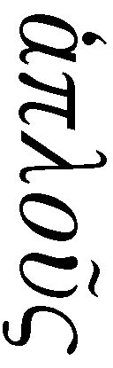

| 読書について (光文社古典新訳文庫) | |
| ショーペンハウアー | |
| (2013) | |
読書について
ショーペンハウアー
鈴木芳子訳
SELBSTDENKEN
ÜBER SCHRIFTSTELLEREI UND STIL
ÜBER LESEN UND BÜCHER
1851
Author: Arthur Schopenhauer
読書について
自分の頭で考える
１
どんなにたくさんあっても整理されていない蔵書より、ほどよい冊数で、きちんと整理されている蔵書のほうが、ずっと役に立つ。同じことが知識についてもいえる。いかに大量にかき集めても、自分の頭で考えずに鵜吞みにした知識より、量はずっと少なくとも、じっくり考え抜いた知識のほうが、はるかに価値がある。なぜなら、ひとつの真実をほかの真実と突き合わせて、自分が知っていることをあらゆる方面から総合的に判断してはじめて、知識を完全に自分のものにし、意のままにできるからだ。自分が知っていることなら、じっくり考えることができる。だから私たちは学ぶべきだ。だが、とことん考え抜いてはじめて真に知ることができる。
ところで本を読むこと、学ぶことなら、いつでも思いのままに取りかかれるが、これに対して考えることは、そうはいかない。というのも、炎が風にあおられて燃え続けるように、対象に対する、なんらかの興味をかきたてられて考え続けねばならないからだ。純粋に客観的な興味もあれば、単に主観的な興味もあるだろう。一身上のできごと、プライベートな事柄なら、主観的興味を持てるが、純粋に客観的な興味をかきたてられるのは、生まれながら考える脳みその持ち主だけだ。息をするのと同じくらい自然に考えるタイプで、そういう人物はめったにいない。ほとんどの学者についても同じで、考える脳みその持ち主はめったにいない。
２
自分で考えることと、本を読むこととでは、精神におよぼす影響に信じがたいほど大きな開きがある。そのため思索型か、読書型かという、もともとの違いがますます大きくなる。読書は、読み手の精神に、その瞬間の傾向や気分にまったくなじまない異質な思想を押しつける。ちょうど印章が封蠟に刻印されるように。読み手の精神は徹底的に外からの圧迫をこうむり、あれやこれや考えねばならない──いまのところ、まったくその気がなく、そんなムードでもないのに。これに対して自分で考えると、その瞬間は外界やなんらかの記憶に多少、左右されることがあっても、精神はみずからの衝動にしたがう。すなわち目の前にひろがる世界は、読書のときのようにただひとつの特定の考えを押しつけたりせず、ただ本人の性質やそのときの気分にふさわしい題材と、考えるきっかけを与える。
そういうわけで重圧を与え続けると、バネの弾力がなくなるように、多読に走ると、精神のしなやかさが奪われる。自分の考えを持ちたくなければ、その絶対確実な方法（１）は、一分でも空き時間ができたら、すぐさま本を手に取ることだ。これを実践すると、生まれながら凡庸で単純な多くの人間は、博識が仇となってますます精神のひらめきを失い、またあれこれ書き散らすと、ことごとく失敗するはめになる。つまりポープ（２）の言葉通りになってしまう。
「頭の中は 本の山
永遠に読み続ける 悟ることなく」
（ポープ『愚人列伝』第三章、一九四）
学者、物知りとは書物を読破した人のことだ。だが思想家、天才、世界に光をもたらし、人類の進歩をうながす人とは、世界という書物を直接読破した人のことだ。
３
真実と生命は、もともと自分の根っこにある思想にだけ宿る。私たちが本当に完全に理解できるのは、自分の考えだけだからだ。本から読みとった他人の考えは、他人様の食べのこし、見知らぬ客人の脱ぎ捨てた古着のようなものだ。
私たち自身の内部からあふれ出る考えを、いわば咲き誇る春の花とすれば、本から読みとった他人の考えは、化石に痕をとどめる太古の植物のようなものだ。
４
読書は自分で考えることの代わりにしかならない。自分の思索の手綱を他人にゆだねることだ。おまけに多くの書物は、いかに多くの誤った道があり、道に迷うと、いかにひどい目にあうか教えてくれるだけだ。けれども創造的精神に導かれる者、すなわちみずから自発的に正しく考える者は、正しき道を見出す羅針盤をもっている。だから読書は、自分の思索の泉がこんこんと湧き出てこない場合のみ行うべきで、これはきわめてすぐれた頭脳の持ち主にも、しばしば見受けられる。これに対して根源的な力となる自分の思想を追い払って本を手にするのは、神聖なる精神への冒瀆にひとしい。そういう人は広々した大自然から逃げ出して、植物標本に見入ったり、銅版画の美しい風景をながめたりする人に似ている。
さんざん苦労して、時間をかけて自分の頭で考え、総合的に判断して真理と洞察にたどりついたのに、ある本を見たら、それが完璧な形でさらりと書かれていた──そんなこともあるかもしれない。だが自分の頭で考えて手に入れた真理と洞察には、百倍の値打ちがある。というのも、自分の頭で考えてたどりついた真理や洞察は、私たちの思想体系全体に組み込まれ、全体を構成するのに不可欠な部分、生き生きした構成要素となり、みごとに緊密に全体と結びつき、そのあらゆる原因・結果とともに理解され、私たちの思考方法全体の色合いや色調、特徴を帯びるからだ。さらにそれは、ちょうど内なる欲求が活発になった絶好のタイミングであらわれたものなので、しっかり根をおろし、二度と消えることはない。こうした事情をみごとにとらえて解説したのが、ゲーテの次の一節だ。
「父祖の遺したものを
完全に自分のものにするためには自ら獲得なさい」
（ゲーテ『ファウスト』第一部、六八二行）
つまり自分で考える人は、まず自説を立てて、あとから権威筋・文献で学ぶわけだが、それは自説を強化し補強するためにすぎない。しかし博覧強記の愛書家は文献から出発し、本から拾い集めた他人の意見を用いて、全体を構成する。それは異質な素材を寄せ集めて作られた自動人形のようなものだ。これに対して自分で考える人は、生きた人間を産み出しているにひとしい。すなわち思索する精神が外界からの刺激で受胎し、それが月満ちてこの世に生まれ出たようなものだ。
習得しただけの真理は、義手や義足、義歯、蠟製の鼻やせいぜい別の肉でこしらえた隆鼻術の鼻のように、私たちに貼りついているにすぎない。だが自分で考えて獲得した真理は、生まれながら備わっている四肢にひとしい。それだけがほんとうに私たちの血となり、肉となる。考える人と、単なる物知りとの違いはここにある。
だから自分で考える人の精神的産物は、適切な陰影やほどよい色調、みごとな色彩のハーモニーで生き生きと際立つ美しい絵画のようなものだ。これに対して、単なる物知りの精神的産物はカラフルで、それなりに整ってはいるが、ハーモニーやつながりが感じられず、価値もない。
５
本を読むとは、自分の頭ではなく、他人の頭で考えることだ。たえず本を読んでいると、他人の考えがどんどん流れ込んでくる。これは、一分のすきもなく完璧な体系とまではいかなくても理路整然たる全体像を展開させようとする、自分の頭で考える人にとって、マイナスにしかならない。なぜなら他人の考えはどれをとっても、ちがう精神から発し、ちがう体系に属し、ちがう色合いを帯びているので、決して思想・知識・洞察・確信が自然に融合してひとつにまとまってゆくことはなく、むしろ頭の中にバベルの塔（３）のような言葉の混乱をそっと引き起こすからだ。他人の考えがぎっしり詰め込まれた精神は、明晰な洞察力をことごとく失い、いまにも全面崩壊しそうだ。
この状態は、多くの学者に見受けられる。そのため、良識や正しい判断、場をわきまえた実際的行動の点で、学のない多くの人のほうがすぐれている。学のない人は、経験や会話、わずかな読書によって外から得たささやかな知識を、自分の考えの支配下において吸収する。
まさしくこれを学問の世界で思想家も行っている。ただし、もっと大規模だ。つまり思想家はたくさん知識が必要なので、たくさん読まねばならないが、精神がはなはだ強靭なので、そのすべてを克服し、吸収し、自分の思想体系に同化させ、有機的に関連づけた全体を、ますます増大する壮大な洞察の支配下におくことができる。思想家自身の考えは、オルガンの根音となる低音のように、つねに全体を支配し、決して異質な音にかき消されたりしない。これに対して、単なる博覧強記が取り柄の場合には、すべての音色がいわば音楽の切れ端のように迷走し、基音がもはやまったく聞き取れない。
６
人生を読書についやし、本から知識をくみとった人は、たくさんの旅行案内書をながめて、その土地に詳しくなった人のようなものだ。こうした人は雑多な情報を提供できるが、結局のところ、土地の実情についての知識はバラバラで、明確でも綿密でもない。
これに対して、人生を考えることについやした人は、その土地に実際に住んでいたことがある人のようなものだ。そういう人だけがそもそも語るべきポイントを心得、関連ある事柄に通じ、真に我が家にいるように精通している。
７
自分の頭で考える人と、ありきたりの博覧強記の愛書家すなわち本から得た知識をこよなく愛する人との関係は、現場の目撃者と歴史研究家との関係に似ている。前者はものごとを直接自分で把握して語る。だから、自分の頭で考える人はみな、根っこの部分で一致している。かれらの相違は、単に立脚点の違いからくる。立脚点にまったく違いがなければ、みな同じことを述べる。というのも客観的に把握したことを述べているだけだから。私は、逆説であるがゆえに公表をためらった命題が、あとになって昔日の大家の著作に表明されているのに気づいて、喜び、おどろいたことが何度もある。
これに対して博覧強記の愛書家は、この人はこう言った、あの人はこういう意見だ、それに対して他の人がこう反論した、などと報告する。かれらはこうしたことを比較検討し、批判し、ものごとの真相をつきとめようとし、その点で批判的な歴史著述家によく似ている。たとえばライプニッツ（４）は一時期スピノザ（５）主義者だったのだろうか、という類の研究をする。物好きな読者のために、明白な例をあげれば、ヘルバルト（６）の『道徳ならびに自然法の分析的解明』や『自由についての書簡』がそうだ。
思索家の奮闘、尽力をいぶかしく思う人がいるかもしれない。問題そのものをよく考えたいなら、ほんの少し自分の頭で考えるだけで、ほどなく目標に達するように思えるからだ。だが、思索は私たちの意志と無関係なので、それは少しばかり違う。いつでも座って本を読むことはできるが、考えるとなると、そうはいかない。つまり思索は人間のようなものだ。いつでも好きなときに呼びにやれるわけではなく、あちらが来てくれるのをじっと待たねばならない。外からの刺激が、内なる気分や心の張りと、なごやかに首尾よく出会うと、あるテーマについて自然に考えられるようになる。こうした思索は、博覧強記の愛書家には決して経験できない。
個人的興味にかかわる思索でも、やはりそうだ。ある事柄について決心しなければならないとき、いつでも都合のよいときに腰をすえて、さまざまな理由を熟考し、決定するというわけにはいかない。それについてじっくり考えることに耐えられず、それどころか他の事柄へ逸れてゆくことがよくあるからだ。ときには、その問題を考えること自体がいやで、逸れてゆくことすらある。そういうときは無理せず、自然にそんな気分になるまで、じっくり待つべきだ。しばしば思いがけず、しかもくり返しそんな気分になる。さまざまなときに、さまざまな気分が、それぞれ異なった角度から、その問題に光を投げかける。「決意の熟成」ともいうべきものが、ゆっくり育ってくる。換言すれば、課題はほどよく分散されることが必要だ。そうすることで前に見過ごしていたものに気づくし、物事がはっきり見えてきて、たいていさほど耐え難いものではなくなり、いやだなという思いも消え失せるからだ。
理論的な問題においても、やはり潮時を待たねばならない。きわめてすぐれた頭脳の持ち主でさえ、いつでも自分の頭で考えることができるわけではない。そこで思索以外の時間を読書にあてるのが得策だ。前述したように、読書は自分で考えることの代わりであり、精神に材料を供給する。その場合、私たちに代わって他人が考えてくれるが、その思考法は常に私たちとは異なる。だからこそ、多読に走るべきではない。精神が代用品に慣れて、それにかまけて肝心のテーマを忘れ、他人の考えで踏み固められた道に慣れ、その道筋を追うあまり、自分の頭で考えて歩むべき道から遠ざかってしまわないようにするためだ。
少なくとも読書のために、現実世界から目をそらすことがあってはならない。読書よりもずっと頻繁に、現実世界では、自分の頭で考えるきっかけが生まれ、そうした気分になれるからである。もっと詳しく言うと、具体的なもの、リアルなものは、本来の原初的な力で迫ってくるため、ごく自然に思索の対象となり、思索する精神の奥底を刺激しやすい。
こうして見ると、自分の頭で考える思索家と博覧強記の愛書家を、その話しぶりに接するだけで容易に見分けられるのは不思議ではない。自分の頭で考える思索家は、真剣で、直接的で根源的なものを取り扱うという特徴があり、自分の考えや表現をすべてみずから検証してゆく。これに対して博覧強記の愛書家は、なにもかも二番煎じで、使い古された概念、古物商で買い集めたがらくたにすぎず、複製品をまた複製したかのように、どんよりと色あせている。型どおりの陳腐な言い回しや、はやりの流行語から成る彼の文体は、他国の硬貨ばかり流通している小国を思わせる。すなわち自分の力ではなにも造り出せないのだ。
８
読書と同じように、単なる経験も思索の代わりにはなれない。単なる経験と思索との関係は、食べることと、消化・吸収との関係にひとしい。もしも経験が、自分がいろいろ発見したおかげで人知を促進できたのだと胸をはるなら、それは口が、人体を維持できるのは、ひとえに自分のおかげだと自慢するにひとしい。
９
真に能力ある人物の著作を、その他大勢の作品と区別する特徴は、決然たる明確さ、ならびに、そこから生まれる明快・明晰さだ。こうした人物は、自分が何を表現したいのか、いつも的確にはっきりとわかっているからだ。散文や詩であれ、音楽であれそうだ。凡人の作品には、こうした決然たる明晰さが欠けていて、そこですぐさま見分けがつく。
第一級の人物に特有の際だった特徴は、判断をすべて自分で直接下すことだ。こうした人物が持ち出すのはどれもみな、自分の頭で考えた結果であり、それは話しぶりのいたるところにあらわれる。かれらは君主のように、精神の王国に直属している。しかし凡庸な人間はこうした精神の王国の直接支配を阻まれた存在で、それは本人の特徴が刻まれていない文体からもわかる。
そういうわけで自分の頭で考える真の思索家は、君主に似ている。直接判断を下し、自分の上に立つ者を認めない。彼の判断は君主の決定のように、みずからの絶対的力に由来し、彼自身が直接下したものだ。換言すれば君主が他人の命令にしたがわないように、こうした真の思索家は権威をうけいれず、自分でたしかめたこと以外、認めない。これに対して、さまざまな世論や権威、偏見にとらわれた凡庸な脳みその持ち主は、法律や命令に黙々としたがう民衆のようだ。
10
議論の余地ある問題に権威ある説を引用して、躍起になって性急に決着をつけようとする人々は、自分の理解力や洞察の代わりに、他人のものを動員できるとなると、心底よろこぶ。かれらにはそもそも理解力や洞察が欠けている。こうした人々は無数にいる。セネカ（７）が言うように「誰だって、判断するより、むしろ信じたい」（『幸福な人生について』Ⅰ、四）からだ。
論争するとき、かれらが共通して選び出す武器は、権威の説だ。権威を笠に着て、戦闘を開始する。巻き込まれた者が論陣を張って防戦しようとしても平然としている。というのも、かれらはこうした論拠に対して、いわば思考不能・判断不能の大河にどっぷり漬かった不死身のジークフリート（８）なので、権威筋をうやうやしく証拠として持ち出し、勝利の雄叫びをあげるのだ。
11
現実の世界ではいかに美しく、幸福に恵まれ、優美であっても、私たちは重力の影響下で活動し、たえず重力に打ち勝たねばならない。これに対して、思索の世界では、私たちは肉体なき精神であり、重さもなければ、困苦もない。だから地上のいかなる幸福も、美しく実り豊かな精神が時を得てみずからの内に見出す幸福にはかなわない。
12
考えがいま頭の中にあるということは、恋人が目の前にいるようなものだ。私たちは、この思索を忘れることなど決してない、この恋人がつれなくなることなど決してない、と考える。だが「去る者は日々に疎し」だ。どんなにすばらしい考えも、書きとめておかないと、忘れてしまい、取り返しがつかなくなる危険がある。恋人も結婚でつなぎとめておかないと、永遠に去ってしまうおそれがある。
13
考えている人にとって価値ある考えは、たくさんある。だが反響や反撥を経てなおも効力ある思想、すなわち、書き下ろした後も読者の共感を得られる思想はごくわずかだ。
14
だが真に価値があるのは、自分自身のために考えたことだけだ。思索者は第一におのずから思索するタイプ、第二に他者を指向するタイプ、この二つに分けられる。
第一のタイプは真の思索家だ。二重の意味で〈Selbstdenker〉、自分の頭で、自分のために考える人だ。本来の哲学者、知を愛する者だ。すなわち、かれらだけが真剣に問題と向き合っている。かれらの生きる喜びと幸せは、まさしく考えることにある。
第二のタイプはソフィスト、詭弁家だ。「～らしさ」を求め、他人の目に哲学者らしく映ることに幸福をもとめる。かれらはこれを真剣に追究している。二つのタイプのどちらに入るかは、やり方全般をみれば、ほどなく気づく。リヒテンベルク（９）は第一のタイプの鑑であり、ヘルダー（10）は第二のタイプに入る。
15
生きるという問題、あいまいで苦悩に満ちた、夢のようにはかない私たちの生の問題がいかに大きく身近なものか考量すると、その大きさと身近さに気づくやいなや、他の問題や目的はすべてその影に覆い隠されてしまう。だがみな（きわめてわずかな例外を除いて）、この問題に対して明白な意識をもたず、それどころかまったく気づいていないらしく、それ以外のことばかり気にかけて、漫然と日をすごす。今日のこと、身近で間近なことだけを心に留めて、この問題をきっぱりはねつけるか、この点では俗流の形而上学ともいうべきものと進んで折り合いをつけ、それで間に合わせる。
よく考えてみると、人間はきわめて広い意味で、「あれこれ思う生き物」にすぎないという見解に達する。すると、無思慮・無知という特徴をみても、なんら違和感をおぼえない。むしろ普通人の知的視野は、たしかに動物よりは広い（動物にとって生きるとは、将来や過去を意識せず、ただ現に在ることだ）が、ふだん思われているように、はかりしれず広いわけではないとわかる。
会話でも、たいていの人の考えは刻みワラのように短く断片的で、一貫した脈絡ある話をつむぐことができないのは、これを物語る。
この世が真に考える生き物に満ちあふれているとしたら、あらゆる種類の騒音がかくも無制限にゆるされ、野放しにされることも、ありえないだろう。騒音はこのうえなくおぞましく、無益だ。
自然界が人間に思索する運命を定めていたら、自然界は人間に耳を与えないか、せいぜいコウモリのような耳にしたことだろう。私は、耳に気密性のある、開閉する弁を備えたコウモリがうらやましい。しかし実際には、人間は他のあわれな動物たちと同じく、自分の生存を維持するだけの能力しかなく、そのため追っ手が迫ったことを昼も夜もおかまいなく告げ知らせるように耳をいつも開きっぱなしにしておかねばならない。
訳注
1．（原注）書く人はざらにいるが、考える人はまれだ。
2．アレクサンダー・ポープ（一六八八～一七四四）イギリスの詩人。古典派を代表する一人。洗練された用語と巧みな表現は他の追随を許さない。『髪盗人』『人間論』など。
3．旧約聖書創世記第一一章にしるされている伝説の塔。天に達する高い塔を築きはじめた人間のおごりをいましめるために、神はそれまでひとつだった人々の言葉を混乱させて、建設を不可能にした。
4．ゴットフリート・ヴィルヘルム・ライプニッツ（一六四六～一七一六）ドイツの哲学者。国政・外交など実務に活躍するいっぽうで、思索を続け、宇宙を調和的に統合する普遍的記号学の体系を構想。モナドと予定調和を説く哲学・神学のほか、数学・言語・法律・物理など諸科学にわたって業績をあげた。微積分法の発見は有名で、記号論理学の祖ともされる。
5．バールフ・デ・スピノザ（一六三二～七七）オランダの哲学者。汎神論を唱えた。『エチカ』『知性改善論』など。
6．ヨハン・フリードリヒ・ヘルバルト（一七七六～一八四一）ドイツの哲学者・教育学者。「諸実存者の学」としての形而上学を構想。ヘルバルト学派の祖。
7．ルキウス・アンナエウス・セネカ（前四頃～後六五）古代ローマ、ストア派の哲学者。弁論家として成功。ネロ皇帝の私教師、執政官となるが、謀反の疑いを受け自殺。『道徳書簡』『対話篇』、ギリシア悲劇の翻案である九篇の悲劇など。その修辞学的な名文はひろく愛読され、多大な影響をおよぼした。
8．ジークフリートはゲルマン民族の伝説に登場する英雄。中世ドイツの英雄叙事詩『ニーベルンゲンの歌』主人公。悪竜を殺したとき、その血を浴びて不死身になる。だがこのとき背中（肩ともいわれる）に菩提樹の葉が一枚はりついて血を浴びることができず、後にそこを突かれて死ぬ。
9．ゲオルク・クリストフ・リヒテンベルク（一七四二～九九）ドイツの物理学者・著述家。啓蒙主義の旗手。箴言集『リヒテンベルク先生の控え帖』。
10．ヨハン・ゴットフリート・フォン・ヘルダー（一七四四～一八〇三）ドイツの思想家・文学者。疾風怒濤（シュトゥルム・ウント・ドラング）運動の指導的地位に立つ。『新ドイツ文学評論断篇』において、文学はその国の民族性から生まれ、国民の血肉となっている母国語で表現されねばならないと説き、外国文学の模倣を排斥した。『人類の歴史哲学考』『言語の起源について』など。
著述と文体について
１
まず物書きには二種類ある。テーマがあるから書くタイプと、書くために書くタイプだ。第一のタイプは思想や経験があり、それらは伝えるに値するものだと考えている。
第二のタイプはお金が要るので、お金のために書く。書くために考える。できるかぎり長々と考えをつむぎだし、裏づけのない、ピントはずれの、わざとらしい、ふらふら不安定な考えをくだくだしく書き、またたいてい、ありもしないものをあるように見せかけるために、ぼかしを好み、文章にきっぱりした明快さが欠けることから、それがわかる。ただ紙を埋めるために書いているのが、すぐばれる。わが国のもっともすぐれた作家にもときたま見られ、たとえばレッシング（１）の演劇論や、ジャン・パウル（２）のいくつかの小説にもあちらこちら見受けられる。
それに気づいたら、ただちにその本を投げ捨てなさい。なにしろ時間は貴重だ。要するに、書き手が紙を埋めるために書くなら、その時点でただちに、その書き手は読者をあざむいていることになる。つまり、書くのは伝えるべきことがあるからだと偽っている。
報酬と著作権保護のための複製禁止は、根本的に文学を堕落させる。書くべきテーマがあるから書く人だけが、書くに値することを書く。文学のあらゆる分野で、ごく少数の傑出した本だけがあったなら、いかなるお宝にも代えがたいほど、ためになることだろう。
しかし書くことで報酬が入るとなると、事態はちがってくる。まるでお金に呪いがかけられているかのようだ。どんな作家でも、かせぐために書きはじめたとたん、質が下がる。偉大なる人々の最高傑作はいずれも、無報酬か、ごくわずかな報酬で書かねばならなかった時代の作品だ。この場合でも、スペインのことわざ「名誉と金は、ひとつの袋におさまらない」は正しいことがわかる。
ドイツ国内でも国外でも、今日の文学は悲惨をきわめるが、その元凶は本を書くことでお金をかせげるようになったことだ。お金が要る者は、猫も杓子も、机に向かって本を書き、読者はおめでたくもそれを買う。その付随現象として、言葉が堕落する。
へぼ作家の大部分は、その日に印刷されたもの以外読もうとしないおめでたい読者のおかげで生計を立てている。すなわちジャーナリストだ。じつに適切なネーミングだ。ジャーナル［日々］の糧をかせぐ人、わかりやすく言えば「日給取り」だろうか（３）。
２
さらにまた物書きには三通りあるといえる。一番目は考えずに書くタイプ。記憶や思い出、あるいは他人の本をそのまま借用して書く。このタイプはたいへん数が多い。二番目は書きながら考えるタイプ。書くために考える。このタイプもよくいる。三番目は、書く前からすでに考えていたタイプ。考え抜いたからこそ書く。このタイプはめったにいない。
書くまで考えない第二のタイプの物書きは、運を天にまかせて狩りに出る狩人のようなものだ。多くの獲物をたずさえて帰路につくのはむずかしい。
これに対して第三のタイプの書き方は、「追い込み猟」という珍しい猟に似ている。あらかじめ獲物はとらえられ、柵の中に追い込まれる。その後、その獲物の群れは別の垣根で囲まれた場所にどっと放たれ、狩人から逃げられないようにしてある。狩人はねらいを定めて撃ち（表現し）さえすればいい。確実に獲物をものにできる狩りだ。
そのうえさらに、本当に真剣にあらかじめ考える少数の書き手の中に、テーマそのものについて考える、きわめて少数の人がいる。その他の者は、書物について、他人の言説について考えをめぐらすだけだ。つまりかれらは考えるために、他人の既存の思想から、より自分に近しく強い刺激を必要とする。よそから与えられた思想がかれらのもっとも手近なテーマになる。したがってたえず他人の思想の影響下にあり、そのために決して本来のオリジナリティーは手に入らない。これに対してテーマそのものについて考えるきわめて少数の書き手は、テーマそのものに刺激されて考える。だから思索がじかにテーマへ向かう。こうした書き手の中にしか、不朽の名声を博する者はいない。もちろんこれは精神［Geist］世界の話であって、酒精［Geiste］について書く人の話ではない。
書くとき、素材をじかに自分の頭から取り出す人物だけが、読むに値する書き手だ。
だがみだりに本を出す人、マニュアル本を書く人、月並みな歴史家などは、いろいろな本から素材をそのままとってくる。素材は本からそのままペンをもつ書き手の指へ流れ、頭の中を検査なしで免税通過し、ましてや練り直されることもない。（こうした書き手の中に、自分の著書に書かれていることを全部知っている者がいるとしたら、その人はなんと物知りであることか！）かれらの話はとりとめがなく、結局なにを考えているのか、頭をさんざん悩ましても無駄に終わることがよくある。なにしろかれらは何も考えていないのだから。かれらが書き写した本も、似たり寄ったりの書かれ方をしている。要するにこうした著作は、複製を複製した石膏像のようなもので、これをくりかえすと、しまいに美青年アンティノウス（４）の像も、顔の輪郭すらとどめず、見分けがつかなくなる。
だから資料の寄せ集めで出来上がった本はできるだけ読まないようにすべきだ。とはいえ完全に避けるのはむずかしい。数世紀にわたって蓄積された知識をわずかなスペースにおさめた資料編纂的書物も、やはり資料の寄せ集めで出来上がった本だからだ。
いちばん最近語られた言葉はつねに正しく、後から書かれたものはみな、以前書かれたものを改良したものであり、いかなる変更も進歩であると信じることほど、大きな過ちはない。真の思索家タイプや正しい判断の持ち主、あるテーマに真剣に取り組む人々はみな例外にすぎず、世界中いたるところで人間のクズどもがのさばる。クズどもは待ってましたとばかりに、例外的人物の十分に熟考した言説をいじくり回して、せっせと自己流に改悪する。
だからあるテーマを研究しようとしたら、学問はたえず進歩しており、最新の本には過去の知見が反映されているという誤った前提のもとに、最新刊にそそくさと手を出すのはひかえるべきだ。たしかに過去の知見が反映されている。だがどのように反映されているかが問題だ。しばしば新刊書の著者は、先人をきちんと理解していないくせに、先人の言葉をそのまま引用しようとはせず、先人固有の血の通った専門的知識から書かれた、ずっとすぐれた明快な言説に手を加えて改悪し、だいなしにしてしまう。こうしてしばしば先人の最良の業績、核心をついた説明、このうえなく上首尾に書かれたコメントをむざむざと手放す。その価値を見抜けず、その的確さを感知できないからだ。自分と同質の、陳腐で底の浅いものしか理解できないのである。
先人のすばらしい本が、悪しき新刊書に駆逐されることがよくある。こうした悪書は金ほしさに書かれたものだが、自信満々でお目見えし、お仲間にほめそやされる。
学問の世界では、だれもが自分の存在をみとめてほしくて、新説を持ち出そうとする。これまで通説とされていた定論をくつがえし、自分のばかげた思いつきを後釜にすえただけ、ということがよくある。短い間ならうまくいくことがあっても、しばらくすると、もとの定論に戻る。こうした新説を持ち出す人にとって、この世でなによりも大事なのは、当人のお値打ちだ。自分の値打ちをみとめてもらいたいのだ。そこでてっとり早く反論・逆説でそれを行おうとする。つまり不毛なる脳みそは、否定の道をとるようすすめ、こうして長くみとめられていた数々の真理、たとえば生命力、交感神経組織、生命の原初的発生、ビシャー（５）の情念作用と知性作用の分離が否定され、極端な原子論への逆戻りなども起こる。だから学問の歩みは、しばしば後退の歩みとなる。さらに、原著者の誤りを正して手を加えたがる翻訳家もこの部類にはいる。思うに、はなはだ厚かましい。ご本人が翻訳に値する本を書き、他人様の作品には手をつけないでいただきたい。
できれば原著者、そのテーマの創設者・発見者の書いたものを読みなさい。少なくともその分野で高い評価を得た大家の本を読みなさい。その内容を抜き書きした解説書を買うよりも、そのもとの本を、古書を買いなさい。誰かが発見したことに新しく付け加えるのがたやすいことは、いうまでもない。だからこそ、じっくり考え抜いた根拠に基づいて新たに付け加えられた事柄に精通してゆかねばならない。ここでも「新しいものがよいものであることは稀だ。よいものが新しいのは、ほんの束の間だから（６）」という原則がおおむねあてはまる。
手紙の宛名にあたるもの、それは本のタイトルだ。目的はなによりも本の内容に興味をもってくれそうな読者層に送り届けることだ。だから書名は特徴的なものであるべきだ。基本的にみじかく、簡明で、簡潔で、含蓄に富み、できれば内容をモノグラム化［頭文字を組み合わせて図案化］したようなものがいい。回りくどく、ぼんやりした、見当違いで、両義的で、それどころかまちがっていて誤解をまねく書名はまずい。こうしたタイトルの本は、まちがった宛先の手紙と同じ運命をたどりかねない。
最悪なのは書名の盗用、すなわちすでに出ている別の本のタイトルをつかうことだ。それは第一に剽窃であり、第二にまったくオリジナリティーがないことのまぎれもない証拠だ。自著に新たな書名を考え出す力もない者に、どうして新たな内容を書く能力があるだろう。これと似たような行為に、書名模倣、すなわち他人の書名の半分盗用がある。たとえば私が『自然における意志について』を書いて、ずいぶんたってからエルステッド（７）が『自然における精神について』を書いている。
物書きがいかに不誠実か、他人の著書から改ざんして引用して、少しも良心が痛まないのを見れば、明らかだ。拙著からの引用をたびたび目にするが、おしなべて改ざんされている。ただし私を公然と支持する人たちだけは、この場合特別な例外とする。ありふれた月並みな表現や言い回しでペンを走らせ、なにげなく習慣的に書いてしまった、不注意による改ざんはよくあり、拙文を改良しようと出しゃばった改ざんも少なくない。だが、もっとも頻繁に行われるのは、悪意によるものだ。それは恥ずべき卑劣な行いであり、信用できる人物という原著者の品格を永久に奪う通貨偽造にもひとしい悪行だ。
３
本は著者の思想を印刷したものにほかならない。思想の価値を決めるのは、素材か、表現形式だ。素材とは「何について考えたのか」であり、表現形式とはどう素材に手を加えたのか、「どう考えたのか」だ。
素材すなわち「何について考えたのか」はじつにさまざまで、また本にじつにさまざまな利点、美点をもたらす。あらゆる経験的素材、つまり史実や自然界の事実、それらを広義にとらえたものがそうだ。その独自性は客体、モノにあるので、著者がだれであっても、本自体が重要なものになる。
これに対して表現形式、すなわち「どう考えたのか」の場合には、独自性は主体、ヒトにある。思索の対象は、だれもが親しめる、よく知られた事柄でもよい。だがこの場合、著者がどう考えたのかという把握の形が大切であって、主体が問題になる。だからこのような本が比類なくすぐれているとすれば、著者もまたすぐれていることになる。読むに値する本が書かれ、それが素材のおかげでなければないほど、すなわち素材がよく知られた陳腐なものであればあるほど、書き手の功績は大きいということになる。たとえばギリシアの三大悲劇詩人（８）は、みな同じ素材を取り上げ、それに手を加えている。
したがって有名な本なら、それは素材のおかげか、表現形式のおかげか、よく区別しなければいけない。
ありふれた凡庸な人間でも、その人にしか手に入らない素材を取り上げれば、素材のおかげでたいへん重要な本を生み出すこともある。たとえば遠い異国の描写、めずらしい自然現象や行った実験の報告、自分が目撃した出来事や、資料を探しあて手間ひまかけて特別に研究した歴史の記述などだ。
これに対して、だれでもよく知っている親しみやすい素材なら、表現形式がものをいう。思索者がその素材について「どう考えたのか」で著作の価値が決まる場合には、傑出した頭脳の持ち主だけが読むに値するものを生み出すことができる。その他大勢の人間は、だれもが思い浮かべるようなことしか思いつかないからだ。自分の頭の中を活字化しても、その程度の原本なら、だれもが自分の頭に持っている。
しかしながら一般読者は表現形式よりも、素材にずっと多くの関心を向け、まさにそのためになかなか教養がつちかわれない。文学作品であるにもかかわらず、作品を生み出すきっかけとなったリアルな事件や、作家本人の私生活を入念に嗅ぎまわることで、その作品に対する強い興味をあらわにするとは、実におかしなことだ。しまいに、こうした事柄が作品そのものより興味をかきたて、ゲーテの作品よりも、ゲーテに関するものを多く読み、『ファウスト』よりもファウスト伝説について熱心に研究するようになる。すでにビュルガー（９）は自作のバラード『レノーレ』について、「そもそも実在の女性のだれがレノーレだったのか、連中は学術調査をしかねない」と述べたが、これはゲーテにおいて文字通り事実となっている。『ファウスト』ならびにファウスト伝説に関する学術研究はすでにたくさんある。こうした学術研究はいつも素材に関わるもので、そこから脱け出せない。表現形式をかえりみず、素材を偏愛するのは、美しいエトルリア（10）の壺のフォルムや色彩には目もくれず、壺の粘土と色の化学成分を調査するようなものだ。
素材によって効果をねらう悪しき傾向に拍車をかける企ては、作品価値を表現形式で問うべき領域、すなわち文学の領域では、どうあっても排すべきだ。にもかかわらず、素材によって劇場を満員にしようと努める悪しき劇作家があとをたたない。たとえばかれらは有名人であれば、だれでも舞台の主人公に仕立て、劇中、その人物の実人生が赤裸々になっても気にせず、ときには、主人公の周囲の人物が存命中でもおかまいなしだ。
ここで述べている素材と表現形式のちがいは、会話においても通用する。会話の才には、まず理解力・判断力・生き生きとした機知が必要で、そうした特性が会話に妙味をそえる。それから会話の素材、つまり相手と何について語るか、その人の知識が問題になる。知識がきわめて乏しいと、素材の点でだれもがよく知っている世情や空模様といった話題にたよることになり、前述の特性が並はずれてハイレベルのときだけ、会話に価値を与えることができる。
逆に、こうした特性に欠ける者は、なんらかの知識で会話に価値を与えるしかなく、「どんな愚者でも我が家にいれば、他人の家にいる賢者より事情に明るい」というスペインのことわざ通り、素材に完全にたよることになる。
４
思想本来の息吹は、言葉になるぎりぎりの点までしか続かない。その時点で思想は石化し、あとは死んでしまう。だが太古の化石化した動植物と同じように、末永く保たれる。思想本来のつかのまの生命は、水晶が結晶化する一瞬にも比せられる。
すなわち思索が言葉を見出すと、たちまち奥深いところにあった切実さと厳粛さが失われる。思索はなにか他のもののために存在しはじめると、私たちの中で生きることをやめてしまう。ちょうど胎児が母胎から離れ、自分の生を歩み始めるように。詩人も言っている。
「矛盾をつくことで 私の心を乱してはいけない
口にしたとたんに 私たちは迷い始めるものなのだから」
（ゲーテ『格言、矛盾』）
５
ペンと思索の関係は、杖と足どりの関係にひとしい。足どり軽やかなら、杖はいらない。理想的な思索は、ペンなしで滞りなく進む。杖にすがり、ペンにたよるようになるのは、老いの兆しがあらわれてからである。
６
仮説は頭の中で生まれ、そこを住処に息づくが、その生は有機体の生に似ている。つまり外界から自分に有益な同質のものだけ摂取する。これに対して異質で有害なものはまったく受けつけないか、あるいはやむを得ぬ事情で送り込まれたときは、自分は無傷のままそれを包囲壊滅する。
７
風刺は代数のように抽象的で不定の数値に向けられるべきで、具体的数値や量を備えたものに向けられるべきではない。生きた人間を解剖してはならないように、風刺してはならず、これを顧みない者は皮はぎの刑、死刑に処せられるべきだ（11）。
８
不朽の名作であるためには、多くの美点がなければならない。そのすべてを把握し、評価する人はなかなかいないが、それでもつねに、こちらの人物からはこの美点、あちらの人物からはあの美点を認められ、尊重される。そのとき、そのとき異なる意味合いで尊重され、決して汲みつくしえず、たえず人々の関心がうつろう中で数百年にわたって作品の名望が保たれる。
しかし、後世でも存続を要求する権利をもつこうした作品の著者は、広いこの地上で同時代人に自分の同類を求めても甲斐なく、きわめて目立つ相違のために、他の皆から浮いてしまう孤独な人物かもしれない。それどころか、永遠のユダヤ人（12）のように幾世代さすらっても、やはり同じ運命をたどるだろう。要するにアリオスト（13）の言葉「造物主は彼を鋳型にはめてつくり、その後鋳型を打ち砕き、類例なきものにした」（『狂えるオルランド』十、八四）が、実際にあてはまる。そうでなければ、他のものはみな消えてしまうのに、なぜ彼の思想だけは残るのか説明がつかない。
９
ほとんどいつの時代も、芸術や文学では、根本的に誤った見解やいんちきな手法・流儀が流行し、称賛されることがある。月並みな脳みその持ち主は、これを習得し、用いようと懸命になる。識者はこれを見抜き、はねつけ、流行などに左右されない。数年たつと一般読者も嗅ぎつけ、愚行の正体に気づいて、こんどはあざ笑う。できの悪い石膏細工で飾られた壁から装飾がはげ落ちるように、小細工に走る作品は称賛の的だった粉飾がはげ落ちると、その後ずっと無残な姿をさらすことになる。
だから、長くひそかに影響をおよぼしていた根本的謬見が決然と声高にはっきり表明されても、怒らず、むしろ喜びなさい。ほどなく誤りであることが感知され、ついには公然と表明されるだろう。それは膿瘍がパックリ口を開けるのと同じだ。
10
評論雑誌は、現代の無責任な三文文士の書きなぐりや、なおもますます大量に出回る無用の悪書に対して清廉潔白、公正かつ厳正な態度で判断を下して、その防波堤になるべきだ。書く力も資格もない者が書いた冗文や、からっぽ財布を満たそうと、からっぽ脳みそがひねり出した駄作は、書籍全体の九割にのぼる。評論雑誌は当然、それらを容赦なくこらしめ、書きたい気持ちにまかせてペンを走らせる詐欺まがいの売文行為を阻止しなければならない。それなのに著者や出版業者とのさもしい馴れ合いから、それらを奨励し、読者から時間と金を奪っている。
たいてい書き手は薄給・薄謝で、お金が要るので書きまくる教授や文士だ。かれらは目的が同じなので、利害関係も一致し、団結して支え合い、互いに相手の肩をもつ。悪書をほめそやす記事はみな、ここに由来する。そうした書評から評論雑誌は成り立っており、そのモットーは「共存共栄」だ（そのうえ一般読者はおめでたくも良書より、新刊書を読みたがる）。
こうした評論雑誌のなかに、今も昔も一度として、くだらない本を褒めちぎったことがなく、第一級のすばらしい本に難癖をつけてけなしたことがなく、悪賢くも取るに足らぬもの扱いして、目をそらそうとしたことがないものがあるだろうか、またあっただろうか。紹介すべき本の選択を、親しい人の推挙や同業者への配慮、出版社の賄賂によらずに、その本がもつ重要性に基づいて、良心的におこなっているものがあるだろうか。未経験のひよっ子でもないかぎり、べたぼめされている本、こっぴどくこきおろされている本を見れば、すぐさまほとんど自動的に陰で出版社が糸を引いているとわかるのではないだろうか。一貫しているのは、書評が読者のためではなく、書籍出版・販売業者のために書かれていることだ。
これに対して、上述の要求を満たすような評論雑誌が存在するなら、へぼ作家や知性なき編纂者、他人の著書を書き写す剽窃者や、中身のない無能な、職がほしくて鵜の目鷹の目のえせ哲学者、あいまいな表現しかできない見栄っ張りのへっぽこ詩人にとって、みせしめのさらし台を眺めるようなものだろう。じきに間違いなく、自分の駄作がさらしものになると思うと、書きたくてうずうずしていた指は麻痺することだろう。悪書は役に立たないばかりでなく、はっきり有害なのだから、そうした評論雑誌は文壇の真の救済になる。
だが今や、ほとんどの本は悪書で、書かなければよかったのにと思われるものばかりだ。したがってめったなことで褒めてはいけない。ちょうど現代では対人関係を気づかい、金言「お仲間になって褒めたたえなさい。そうすれば、君がその場にいなくても褒めてもらえる」（ホラティウス（14）『風刺詩』二、五、七二）に感化されて、めったなことでけなさないように。社会では、いたるところにうごめく頭の鈍い能無しに対して寛容でなければならないが、この寛容の精神を文筆の世界にも持ち込むのは、あやまりだ。というのも文筆の世界において、かれらはあつかましい侵入者であり、悪をそしるのは、善に対する義務だからだ。何ひとつ悪とみなさない人間にとって、善もまた存在しないからだ。
そもそも、おつきあいの産物である社交辞令は、文筆の世界では異分子で、しばしばきわめて有害な要素となる。社交辞令は悪を善と言いくるめることを求め、そのために学問や芸術の目的が阻まれるからだ。
もちろん私が望むような評論雑誌は、誠実で清廉潔白、まれにみる知識と比類なき判断力を兼ねそなえた人物によって書かれたものであらねばならない。したがって全ドイツをあげて、かろうじて一誌成立するような、きわめて高度のものだが、ひとたび成立すれば、公明正大な最高法廷としてさぞかし存在感を放ち、万人から選ばれた人物で構成されるだろう。ところが現在の評論雑誌ときたら、大学の同僚ギルドや文士の派閥、ひそかに出版・販売業者まで加わって、書籍出版・販売の利益のために運営されており、善が栄えないように、たいていよからぬ連中が手を組んでいる。
もはや文筆の世界におけるほど、不誠実が幅をきかせているところはない。拙著『自然における意志について』二二ページ（三巻、三三六ページ）で詳述したが、このことはゲーテも指摘している。
なによりも、物書きの悪行の盾となっている匿名性が廃止されねばならない。評論雑誌が匿名性を採用した口実は、読者に警告する正直な批評家を、著者やそのパトロンの遺恨から守ることだった。だがこの種のケースが一件あれば、自分で言ったことの責任を負えない者が、あらゆる責任をのがれるために匿名にするケースや、金でいいなりになる卑劣漢が、出版業者から酒手をかせぐために、悪書を読者に推奨し、その破廉恥な行いをかくすために匿名にするケースは、その百倍あるだろう。また単に、批評家のどんよりした脳みそ、無価値・無能ぶりを覆い隠すのにも用いられる。信じがたいことだが、匿名の陰で身の安全がはかれるとなると、連中は無礼きわまりなく、ひるむことなくペンでどんな悪事でもくりだす。
世間には万能薬というものがあるが、悪書をほめちぎるにせよ、良書をこきおろすにせよ、どんな匿名批評家にも効く撃退万能薬がある。すなわち「ならず者、名乗りをあげよ。堂々と顔をみせて悠然と歩く者に、覆面し変装して、とつぜん襲いかかるとは、ちゃんとした男のすることではない。悪者、やくざ者のすることだ。さあ、ならず者、名乗りをあげよ」。効き目は折り紙つきだ。
ルソーは『新エロイーズ』序文に「名誉心ある者なら、自分が書いた文章の下に署名する」と書いている。この逆も言える。すなわち「自分が書いた文章の下に署名しないのは名誉心なき者だ」。これは攻撃的文書におおいにあてはまり、たいていの批評がそうだ。だからリーマー（15）が『ゲーテにまつわる報告』（序文二九ページ）で言ったことは正しい。「面と向かって率直に発言する相手は、名誉心ある穏健な人物だ。そういう人物なら、お互いに理解し合えるし、うまく折り合い、和解することができる。これに対して、陰でこそこそ言う人間は、臆病な卑劣漢で、自分の判断を公言する勇気すらない。自分がどう考えたかはどうでもよく、匿名のまま見とがめられずに、うっぷんを晴らし、ほくそ笑むことだけが大事なのだ」。これはゲーテの意見でもあった。ゲーテの意見はたいていリーマーの報告にそのまま引かれている。
概してルソーの規範は、印刷物のどの行にもあてはまる。覆面をして正体を明かさない人間が、民衆に長広舌をふるい、集会で演説しようとしたら、ましてや他人を攻撃し、非難を浴びせるとしたら、許されるだろうか。そういう人間はすぐさま聴衆から足蹴にされ、尻に帆をかけて退場するはめになるのではないだろうか。
ドイツではようやく言論出版の自由が手に入ったかと思うと、たちまち破廉恥きわまりないほど濫用されている。だが、少なくとも匿名・偽名をすべて禁じて、この濫用に歯止めをかけるべきだ。印刷という広範囲におよぶメガフォンによって公衆に呼びかける者はすべて、少なくとも名誉心をもつ者なら、名誉にかけて責任をとるべきだし、名誉心のかけらもない輩すなわち匿名・偽名による発言は、無効にすべきだ。名を明かして執筆する者を匿名で攻撃するとは、恥知らずだ。匿名批評家は他人や他人の仕事について公表したり隠し立てをしたりするくせに、自分で責任をとろうとせず、名乗り出ない者だ。こんなことを我慢せよというのか。匿名批評家がつく真っ赤な噓ほど、あつかましい噓はない。なにしろ無責任だ。あらゆる匿名批評は欺瞞をめざしている。だから警察は、覆面をしたまま往来を歩くのを許さないように、匿名で書くのを見のがすべきではない。
匿名の評論雑誌はそもそも、無学が学識をさばき、無知が分別をさばいても処罰されない無法地帯であり、一般読者をあざむき、悪書をほめそやして時間と金をだまし取っても見とがめられない場だ。匿名は物書き、とくにジャーナリズムのあらゆる悪事の堅固な城塞ではないか。この城塞は根こそぎ取り壊されねばならない。すなわちどんな新聞記事でも、編集者の重大な責任のもとに、執筆者の名が、公正なる署名が付されるべきだ。こうすれば、取るにたらない者の住所まで知れてしまうから、新聞のデマの三分の二はなくなり、あつかましい毒舌も制限されるだろう。フランスは今まさに、この問題に取り組んでいる。
しかしこの匿名禁止令が存在しない以上、誠実な物書きは一致団結して匿名性を追放すべきだ。公然と飽くことなく、来る日も来る日も、あからさまで極端な侮蔑の言葉を浴びせて弾劾し、あらゆる手を尽くして、匿名批評は下劣で恥知らずな行為だと広く知らしめるべきだ。匿名で書き、論難を浴びせる者は、一般読者をあざむき、わが身は安全なまま、他人の名誉毀損をねらっていると嫌疑をかけられても仕方あるまい。だから匿名批評家に言及するときはいつも、ことさら非難するわけではなく、なにげなく触れるときも、「しかじかの場所にいる卑怯な匿名の輩」「かの雑誌における正体を明かさぬ匿名のごろつき」のような形容語句を用いるべきだ。これは、そうした連中のことを語る、しかも連中が稼業に嫌気がさすように仕向ける、実に適切でエチケットをわきまえた文章スタイルだ。
なぜなら正体を明かして他人と向かい合うかぎり、だれでも自分に敬意を払うことを公然と要求できるが、変装し覆面し、こっそり忍び寄り、他人に迷惑をかける者には、そんな権利はないからだ。それどころか、そうした行いゆえに法の保護を奪われる。彼はオデュッセウスのウーティス（16）、すなわち「だれでもない」「ミスター・ノーバディー」であり、「ミスター・ノーバディーはならず者だ」と、だれでも思いのまま公言していい。だから匿名批評家に対して、特に反論するときは、すかさずならず者、無頼漢という言葉で論じるべきで、無頼漢に毒された数名の作家のように、臆病風に吹かれて、「尊敬する批評家氏」などと述べてはいけない。「名乗りをあげない無頼漢」がすべての誠実な作家の合言葉であらねばならない。いつかだれかが手柄をたてるとき、すなわち鞭打ちの刑罰を受ける無頼漢の覆面をはぎとり、耳をつかんで引きずり出すとき、夜のフクロウ（17）が白昼にもかかわらず、みんなの大歓声を呼び起こすことだろう。
悪口雑言を耳にしたら、たいてい「そんなことを言うのは、だれだ」といって、まず怒りを爆発させる。だが匿名の輩はそんなとき返事をせず、知らん顔だ。
こうした匿名批評家の特に愚かしくあつかましい言動は、国王のように〈Wir〉〈われわれ（18）〉と一人称複数形で話すことだ。一人称単数形にするばかりでなく、「小生」という縮小詞、いや、自己を卑下する形を用いるべきだ。たとえば「情けない取るに足らぬ私」「こずるい卑怯者の私」「覆面をした無能な私」「ろくでなしの卑しい私」などだ。それは、「ひとめにつかない田舎文芸新聞」の暗い穴から、シュシュッと走り出るアシナシトカゲのような連中、いいかげん悪行から足をあらうべき覆面の詐欺師にふさわしい修辞だ。
物書きの世界における匿名は、市民共同体における金銭詐欺にあたる。「名乗りでよ、ごろつき。さもなければ沈黙をまもれ」が合言葉でなければならない。署名のない批評に対して、ただちに「詐欺師」という言葉を補ってかまわない。
こうした生業は金をもたらすが、名誉をもたらさない。攻撃する匿名氏はとりもなおさず卑劣漢で、請け合ってもよいが、名乗ろうとしないのは公衆をあざむこうという魂胆だからだ。ただ匿名の著書に対しては、匿名で批評する権利が与えられる。そもそも匿名を撤廃すれば、あらゆる物書きの悪事は九九パーセント存在しなくなるだろう（19）。この稼業が締め出されるまで、私たちは機会あるごとに、元締め（すなわち匿名批評協会会長・首脳陣）たちに付きまとい、日銭を稼ぐ匿名批評家が犯した罪の直接の責任を、それも断固たる口調で問うべきだ。断固として私たちの正しさを認めさせるべきだ（20）。私自身としては、とばく場や売春宿と同じように、匿名批評の巣窟を取りしまりたい。
11
文体は書き手の顔だ。精神の相貌が刻まれている。それは肉体の顔よりももっと見まちがいようがない。他人の文体をまねるとは、仮面をつけることだ。仮面はどんなに美しくても、生気がないためにまもなく悪趣味で耐えがたいものになる。醜くても生きた顔のほうがいい。
だから古代人の文体を模倣してラテン語で書く作家も、実際、仮面をつけるようなものだ。かれらの言葉はなるほど耳に入ってくるが、書き手の顔が、文体が見えてこない。だが自分の頭で考える思想家がラテン語で書いたもの、たとえばスコトゥス・エリウゲナ（21）、ペトラルカ（22）、ベーコン、デカルト、スピノザ、ホッブズ（23）などの書は、先人の模倣に甘んじておらず、書き手の顔が見える。
もったいぶった文体は、しかめっ面のようなものだ。
どの言語で書かれていても、それぞれの国民の相貌が浮かび上がる。ギリシア語からカリブ語にいたるまで、実に大きな相違がある。
他人の著書を見て文体の難点に気づいたら、自分で書くとき同じ轍を踏まないようになさい。
12
精神の産物、著作の価値をさしあたり評価するのに、必ずしもその書き手が「何について」「何を」考えたかを知る必要はなく（そうしたら全作品を通読せねばなるまい）、まずは「どのように」考えたかを知れば、じゅうぶんだ。この「どのように」考えたか、つまり思索の根っこにある特徴と一貫したクオリティーを精確にうつし出したのが、文体だ。文体はその人の全思想の外形的特徴であり、「何を」「何について」考えていようとも、つねに同じはずだ。それはいわば、どんな形にも練りあげてゆくことのできるパン生地のようなものだ。
中世民衆本に登場するいたずら者オイレンシュピーゲル（24）は、次の村までどのくらい時間がかかるかと問われて、「歩け」と一見つじつまの合わない返事をした。だがそれは、まず質問した男の歩きぶりをみて、一定時間にどのくらい進めるか推しはかろうとしたからだ。そんなふうに私も著者の作品を二、三ページ読めば、どのくらい自分にとってプラスになるか、およそ見当がつく。
こうした事情をひそかに察して、凡庸な物書きはみな、持ち前のありのままの文体を偽装しようとする。そのためにまず素朴さを断念せざるをえず、天衣無縫であることは卓越した精神の持ち主、自分というものを自覚し、確信をもってふるまう人物の特権になる。詳しく言うと、凡庸な脳みその持ち主は、考えたことをそのまま書く決心がつかない。そんなことをしたら、パッとしない代物になるだろうと、うすうす感づいているからだ。それでも、ちょっとしたものになることもある。ひたすら真摯に仕事に向かい、わずかばかりのありふれたことでも、かれらが実際に考えたことを、考えた通りに、とにかくそのまま伝えようとするなら、読むに堪える本、分相応の世界で、それなりにためになる本が書き上がるだろう。しかし、かれらはそうはせずに、実際よりもずっと多く、深く考えたかのように見せようと懸命だ。したがってかれらは言うべきことを、不自然でややこしい言い回しや、新たな造語を用い、堂々巡りをして、何を考えているのか覆い隠す複雑な構造の回りくどい文章にする。つまり考えを懸命に伝えようとするいっぽうで、懸命に隠そうとし、そのあいだを右往左往している。
かれらは自分が考えたことに表面的に手を入れて、博学だ、深遠だという名声を手にしたいのだ。読み手がいま見て取ったことよりも、ずっと多くのものが背後に隠されていると思われたいのだ。したがってかれらは、あるときは、その思想を短く多義的で逆説的な箴言の形で、小出しにする。そういう言葉は、実際の意味よりもずっと多くの暗示をふくむように見える（この種のすばらしいお手本が、シェリング（25）の自然哲学の著作だ）。またあるときは、とうとうと熱弁をふるって考えを述べるが、耐えがたいまでに回りくどく、その深遠な意味を理解するのに、ごたいそうな準備がいるのではないかと思わせるほどだ。だがその実体は愚にもつかない思いつきにすぎず、俗受けすらしない（フィヒテ（26）の大衆向きの著書や、その名をあげるにも値しない多数のみじめな愚か者たちの哲学の教科書など、その例はふんだんにある）。
あるいは、これこそ高級な文体だと勝手に想定した書き方、たとえばひたすら綿密で学術的な書き方に精を出すが、その思想ゼロの、延々と紡ぎ出される複雑な文章構造の麻酔作用に、読み手は死ぬほど責めさいなまれる（全人類の中でとくに厚かましいヘーゲル（27）学派の哲学者たちのヘーゲル定期通信、通称《学術研究年鑑》がこの例だ）。あるいは才気あふれる文章スタイルをねらったけれど、気がふれたのかという印象を与えて終わる、等々。「大山鳴動してねずみ一匹」（ホラティウス『詩について』一三九）といわれるが、かれらがあれやこれや手を尽くして引き伸ばそうとするせいで、本当はいったい何を言いたいのか、分かりにくいことがよくある。おまけに言葉を連ね、複雑な構造の文章を書き散らし、その際、自分ではなにも考えていないくせに、他の人が考えてくれるだろうと虫のよい期待をかける。
こうした努力はすべて、つまるところたえず、あの手この手で思想に代わって言葉を売りつけようとする熱心な企てにほかならない。痛ましいまでに脳みそが足りないのを埋め合わせようと、新語、新手の意味合いの語、あらゆる種類の言い回しや合成語を用いて、懸命に知者をよそおおうとする。
この目的のために、知者をよそおう仮面としてさまざまな手法を、あの手この手と試みるさまは、なかなかの見ものだ。しばらくは経験の乏しい人たちをうまく欺くことができても、生気のない仮面だとばれてしまって笑いものになり、また別の仮面と取り換える。書き手は酒神賛歌の酩酊詩人になったかと思うと、次ページでたちどころに仰々しく厳格な徹底した学者になり、ついにはぎこちなく、重箱の隅をつつくように回りくどく論じ、モダンな衣装をつけているのに、今は亡きクリスティアン・ヴォルフ（28）のようになる。
だが一番長続きするのは、「不可解」という仮面だ。これはドイツだけだ。この仮面はフィヒテが導入し、シェリングが磨きをかけ、ついにヘーゲルでその絶頂をむかえた。つねにこのうえない大成功をおさめている。しかしながら、誰にも理解できないように書くことほどたやすいことはなく、これに対して重要な思想を誰にでも理解できるように言い表すことほど、むずかしいことはない。「不可解」は「暗愚」に通じるものがある。ともかく背後に深遠な意味があるかのように煙にまくと、はかり知れずもっともらしく響く。しかし前述したことはみな、ほんとうの知者なら、不要になる。真の知者であれば、ありのままの自分を見せてもよく、つねにホラティウスの箴言の正当性を裏付けるからだ。
（ホラティウス『詩について』三〇九）
しかし知者をよそおう人々は、いわばかけがえのない、永遠に何ものにも代えがたい黄金に代わるものを生み出そうと、何百ものさまざまな合成実験をする錬金術師のようなものだ。だがむしろ反対に、本人が持っている以上の精神性を見せようとする悪あがきこそ、物書きがもっとも慎むべきものだ。というのも実際には持ってないものに限って、持っているふりをするのは人の常なので、実は精神性などほとんど持ち合わせていないのではないかという疑いを読者に起こさせるからだ。
だから著者を「飾り気がない」と言ったら、それはほめ言葉だ。その著者はおそれることなく、あるがままの自分を見せている、ということを意味する。概して自然で飾らないものは人を惹きつけ、これに対して何事も、不自然な気取りは、思わず人をしりごみさせる。
また真の思想家はみな、思想をできる限り純粋に、明快に、簡明確実に表現しようと努める。したがってシンプルであることは、いつの時代も真理の特徴であるばかりでなく、天才の特徴でもあった。似非思想家のように、思想を文体で美々しく飾り立てるのではなく、思想が文体に美をさずけるのだ。なにしろ文体は思想の影絵にすぎないのだから。不明瞭な文章や当を得ない文章になるのは、考えがぼんやりしている、もしくは混乱しているからだ。
すぐれた文体であるための第一規則、それだけでもう十分といえそうな規則は、「主張すべきものがある」ことだ。これさえあれば、やっていける。しかしこれをないがしろにするのが、ドイツにおける哲学者、総じて省察する物書きの根本的特徴であり、特にフィヒテ以来、それが著しい。これらの書き手みなに共通して見られるのは、何ひとつ主張すべきものがないのに、なにやら「あるように見せたがる」ことだ。大学の似非哲学者たちによって導入されたこの手法は、いたるところで見られ、今をときめく文壇のお歴々にまで広まっている。この手法は、気取ったあいまいな、要領を得ない多義的な文体、ぎこちなく冗長な文体、しゃちこばった堅苦しい文体、無用の饒舌をくりだす文体、しまいには痛ましいまでに貧しい思想を倦むことなくガタゴトいう水車のごとく耳を聾するばかりのおしゃべりで隠す文体まで、あらゆる文章スタイルを生み出す源だ。こんな文章を何時間読んでも、くっきり浮かび上がる明確な思想など手に入らない。かの悪名高き《ハレ年鑑》、後の《ドイツ年鑑》はほとんどすべて、こうした手練手管の選び抜かれた見本である。なにか主張すべき価値あるものをもつ人は、気取った表現や、むずかしい文句、あいまいなほのめかしで隠す必要などなく、簡単にはっきりと飾らずに述べることができ、しかもねらい通りの効果を確信できる。だから、そうした手練手管を用いると、書き手の思想や精神、知識のまずしさがばれてしまう。
そうこうするうちにドイツ人の、のほほんとした気質は、書き手が本来なにを言おうとしているのか特に気にかけずに、あらゆる種類の美辞麗句が載ったページを次々と繰るのに慣れてしまった。こともなげに、それでよしとし、著者がただ書くために書いているのに思い至らない。
これに対して思想豊かなすぐれた書き手は、まもなく読者の信頼を勝ち得る。この書き手が語るときはいつも、真剣にほんとうに「主張すべきものがある」と信用され、思慮深い読者が細心の注意をはらいながら、辛抱強くついてくる。こうした書き手が、つねにこのうえなく平明にきっぱりと自分の考えを述べるのは、実際に主張すべきものがあるからだ。彼がいま抱いている、ほかならぬその考えを読者の中にも呼び起こすことが大切だからだ。したがってこうした書き手は、ボワロー（29）に賛同するだろう。
「私の思想は たえず白日に身をさらし
私の詩句は よかれ悪しかれ つねに何かを語る」
（ボワロー「セニュレー侯爵閣下あての書簡」九）
他方、前述の手練手管を用いる書き手についても、この詩人の「饒舌な者は なにも語らない」という言葉があてはまる。こういう書き手はまた、いざとなったら危うく難をのがれることができるように、きっぱりした表現をできるかぎり避けるという特徴がある。だからどんな場合でも、より抽象的な表現を選ぶ。これに対して知者は、より具体的な表現を選ぶ。というのも具体的であるほうが、物事はあらゆる明白さの源泉である直観性になじむからだ。
こうした連中の抽象性への偏愛は、実にたくさんの例で裏付けられる。特に滑稽なのは、ドイツの物書きたちがここ十年間ほとんどいたるところで、「ひきおこす」「～の原因になる」と書くべきときに、「誘発する」という語を用いることだ。より抽象的で、より漠然とした「誘発する」を用いると、意味合いが薄まるので（つまり「このせいである」と言わずに、「このせいでないわけではない」と言う）、いつでも逃げ道をあけておける。自分たちの無能ぶりをひそかに意識し、あらゆるきっぱりした表現にいつもびくびくしている連中のお気に入りの手口だ。
しかしまた、国民特有の嗜好も影響をおよぼしている。ドイツ人はものを書くときは愚鈍を見習い、生活全般なら不作法をすぐさま見習いたがる。その証拠に、愚鈍と不作法はたちどころに広まる。これに対してイギリス人は、何か書くときも、何か行動するときも、自分自身の判断をあおぐ。逆にドイツ人ほど、自分自身の判断をあおがない国民はない。こうしたいきさつから、「ひきおこす」「～の原因となる」は、ここ十年間の書き言葉からほとんど消え失せ、どこもかしこも「誘発する」ばかりになった。このことは独特の滑稽さから、言及に値する。
凡庸な脳みその持ち主の著作が中身がなく退屈なのは、かれらの語りがいつもいいかげんな意識でなされる、つまり書き手自身、自分の用いた言葉の意味をほんとうにはわかっていないせいかもしれない。かれらは習い覚えた語、出来合いのものを採用する。だから一語一語組み立てるというより、むしろきまり文句（紋切型の言い回し）をつなぎ合わせる。書き手の明確でくっきりした思想が浮かび上がってこないのは、そのせいだ。すなわち、かれらには自分の明快な考えを打ち出す、いわば型押し機がない。その代わり、不明確であいまいな言辞を網状にはりめぐらせ、よくある常套句、使い古された言い回しや流行語を用いる（30）。そのため、かれらの薄ぼんやりした著作物は、使い古しの活字を使った印刷物のようだ。
これに対して知者の著作は、真に私たちに語りかけてくる。だから私たちを活気づけ、楽しませることができる。知者だけが十分に意識して、ひとつひとつの言葉を意図的に選び、組み立てることができる。
だから彼らのものの言い方と、凡庸な書き手の言い方を比べると、実際に描かれた絵と、ひな型を使って写し取った絵ほどの開きがある。つまり精神をそなえた書き手は、一筆一筆、絵筆で描くように、どの言葉にも特別な意味をこめる。これに対して凡庸な書き手は、なにもかも機械的に置いていくだけだ（31）。
この違いは音楽にも見られる。いいかえると、天才の作品はどの部分にもくまなく精神が行き渡っていて、それが作品の特徴をなしている。これは、リヒテンベルクのいう「すみずみまで心情が行き渡る」にあたる。リヒテンベルクは、名優ギャリク（32）の全身の筋肉には、すみずみまで心情が行き渡っていると述べた。
先ほど述べた著作の退屈ということに関して、一般的な注意を伝えておかねばならない。退屈には、客観的退屈と主観的退屈の二種類がある。客観的退屈はいつも、ここで問題にされている欠陥、すなわち著者が伝えるべき明快な思想や認識を持たないという欠陥から生まれる。換言すれば、伝えるべき明快な思想や認識がある著者は、伝達という目的に向けて、一直線に仕事をする。だからいたるところでくっきり明瞭な考えを差し出し、冗長にならず、あいまいさや混乱もなく、そのため退屈させない。たとえその根本思想がまちがいであっても、それは明瞭に思索し、十分に考えを練った結果であり、少なくとも形式的には正しく、著作は依然として何がしかの価値がある。逆に同じ理由から、客観的に退屈な著作はつねに無価値だ。
これとは逆に、主観的退屈は単に相対的なものだ。主観的に退屈なのは、読者がそのテーマに関心がないせいで、読者側の関心になんらかの制約があるからだ。だからどんなにすばらしいものでも、主観的に退屈、つまり人によっては退屈なこともある。また逆に劣悪なものでも、人によってはそのテーマや著者に興味をおぼえ、主観的に気晴らしになることもある。
できる限り偉大な知者のごとく思索し、しかしだれもが使う言葉で語れ──これを会得すれば、ドイツの文筆家にとって例外なく役に立つだろう。ふつうの言葉を用いて、非凡なことを語りなさい。けれども文筆業者たちはこの逆のことをしている。ありふれた概念を高尚な言葉で包み、ごくありきたりの思想を並はずれた表現、わざとらしく気取った奇妙な言い回しにくるもうと努める。かれらの文章はいつも竹馬に乗ったように気取っている。誇張好きだ。一般にもったいぶった、ぎょうぎょうしく、気取った大げさな曲芸師のような文体が好みで、その典型は旗手ピストル（33）だ。仲間のフォルスタッフは、たまりかねて彼に向かって叫ぶ。「話があるなら、そのへんの奴らの言葉でしゃべれ」（シェークスピア『ヘンリー四世』第二部第五幕第三場）
実例が好きな方々のために、次の広告文をあげよう。
「出版社より近刊案内。腸内ガスの名で知れ渡る気体現象の理論、実践かねあわせた科学的生理学、病理学、治療法。本書はその有機的因果関係、存在と本質、それを誘発する外的内的発生契機、現象と実証の一切を、人類共同体の意識および学問的意識のために体系的に叙述する。フランスの作品《放屁術》意訳。補正注釈、解説補足付き」
フランス語の〈style empesé〉（しゃちこばった文体）にあたる、ぴったりのドイツ語は見当たらないが、これに相当する事実はかえって頻繁に見られる。これと気取りが結びつくと、社交の場における気障でものものしく、お上品ぶった気取りにあたるものが書物にあらわれ、鼻持ちならない。脳みその中身が乏しいと、こうした衣をまといたがる。ちょうど実生活で愚鈍がものものしい形式的儀礼をまといたがるように。
気取った文体で書く者は、下賤の者とまちがわれて混同されないように、ごてごて飾り立てる者に似ている。いっぽうジェントルマンはどんなに質素な身なりでも、そんなおそれはない。だから、けばけばしく着飾り、入念にめかしこむと、無教養で粗野な人間だとばれるように、気取った文体は凡庸な脳みそのあかしだ。
そうはいっても話し言葉のように書こうと努めるのは、お門違いだ。むしろ、あらゆる文体の祖である碑銘文体の面影をとどめた文体、装飾を排した簡潔で力強い文体が望ましい。同様にこの逆、つまり書き言葉のように話そうと努めるのもいただけない。ペダンティックに聞こえるし、わかりにくいからだ。
はっきりしない、あいまいな表現は、いつでもどこでも悪い兆候だ。そうした表現になるのは、九九パーセントまで考えがあいまいなせいで、ほとんどいつも思想そのものがもともとふらふらと安定せず筋が通らず、まちがっていることに由来する。頭に正しい思想が浮かべば、その人は明快さをもとめて努力し、まもなく手に入れるだろう。考え抜かれた明快な思想は、ふさわしい表現をたやすく見つける。人知のおよぶものは、実際つねに明快でわかりやすく、疑問の余地のない言葉で表現できるものなのだから。ややこしく、はっきりしない、錯綜した、あいまいな文章を作り上げる連中は、自分が何を言いたいのか、きちんとわかっておらず、思想を求めて呻吟しているのをぼんやり意識しているだけだ。だが連中はしばしば、そもそも主張すべきものが何もないのを、自分にも他人にも隠そうとする。フィヒテやシェリングやヘーゲルのように、知らないことを知っているように見せかけたがり、考えてもいなければ、言ってもいないことを考え、言っているかのように見せかけたがる。なにか正しいことを伝えねばならない人は果たして、あいまいな言い方をしようと努めるだろうか、それともはっきり言おうと努めるだろうか。すでに古代ローマの修辞学者クインティリアヌス（34）も言っている。「よくあることだが、識者の言葉のほうがわかりやすく、はるかに明快だ......無能な人間ほど、あいまいだ」（『弁論術教程』第二巻三章）
さらにまた謎めいた言い方はすべきでなく、肝心なことを言いたいのか、そうではないのか、ちゃんとわきまえるべきだ。はっきりしない表現は、ドイツの物書きを鼻持ちならないものにする。例外が認められるのは、なにやらはっきり言うのを禁止されていることを伝えねばならない場合だけだ。
どんな作用も度を過ぎれば、ほとんど初めねらったのと反対の結果をまねく。たしかに言葉は思想をわかりやすくするのに役立つが、その効用はある点までだ。その限度を越えて、やみくもに言葉を積み上げてゆくと、伝えるべき思想はどんどん明快さを失ってゆく。この限界点を見極めるのが、文章表現のかんどころであり、判断力のつとめだ。よけいな言葉はみな、本来の目的を真っ向から阻むからだ。この意味でヴォルテールは「形容詞は名詞の敵だ」と言っている。だが多くの書き手が言葉を過剰に用いて、思想の貧しさを隠そうとしているのは言うまでもない。
したがって冗長な表現はすべて避け、苦労して読むに値しない無意味なコメントを織り混ぜるのも一切やめなさい。読者に時間・労力・根気のむだづかいをさせてはならない。そうすれば、この書き手が執筆したものは注意深く読むに値し、手間ひまかけるだけの甲斐があると、読者の信頼を勝ち取れるだろう。
つまらぬことをつけ加えるくらいなら、よいものをカットしたほうがましだ。ヘシオドスの言葉「半ばは、全体にまさる」（『仕事と日々』）は正しい。概してなにもかも言うにはおよばない。「退屈させる秘訣は、なにもかも言ってしまうことだ」（ヴォルテール『人間論』六、一七二）。できるかぎり核心のみ、重要事項のみを語り、読者が自分で考えつきそうなことは避けるべきである。わずかな思想を伝えるのに、多くの言葉をついやすのは、まぎれもなく凡庸のしるしだ。これに対して多くの思想を少ない言葉におさめるのは、卓越した頭脳のあかしだ。
真理はむきだしのままが、もっとも美しく、表現が簡潔であればあるほど、深い感動を与える。そうすれば聞き手は雑念に惑わされずに、スッと真理を受け取ることができるからだ。また聞き手が修辞的技巧に魅了され、たぶらかされたのではなく、真理そのものから感銘を受けたと感じるからだ。たとえば人間存在のむなしさについて、どんなに熱弁をふるっても、ヨブの言葉以上の感銘を与えるものがあるだろうか。「人は女から生まれ、つかのまの時を生き、悩み多く、花のように咲きほころび、しぼみ、影のようにはかなく消えゆく」（『ヨブ記』第十四章第一～二節）
ゲーテの飾らない詩が、シラーの修辞的な詩とはくらべものにならないほど優れているのは、このためだ。多くの民謡が強い感動をもたらすのも、このためだ。だから建築術の過剰な装飾、弁論術のとりわけ不必要な修辞的装飾と同じように、書くときも、あらゆる不要な詳述、総じてあらゆる過剰表現を慎み、けがれなき文体を心がけるべきだ。余計なものはみな、マイナスにはたらく。「飾らず簡素」という掟は、崇高さとも調和するので、すべての芸術にあてはまる。
中身がないと、体裁ばかり取りつくろい、みずからはその背後にかくれようとする。ごてごてした大げさな文体、偉そうなお上品ぶった口調、その他諸々の文章スタイルで、みずからを包み隠す。だが天衣無縫だと、そのまま自らをさらし、ありのままの簡素な姿で人前に出るため、こうした手練手管がない。頭脳明晰な人間ですら、飾らずにいることは、なかなか難しい。そっけなく貧弱な印象を与えてしまうからだ。一糸まとわぬことが美の礼装であるように、天衣無縫であり続けることが天才の礼装であるのは、このためだ。
真に簡潔な表現とは、いつでもどこでも、言うに値することだけを語り、必要なものと余計なものを正しく区別し、だれもが考えつきそうなことをくだくだしく論じないようにすることだ。だが簡潔さを求めるあまり、明瞭さを、ましてや文法を決して犠牲にしてはならない。わずか数語を省こうとして、思想の表現をよわめ、それどころか文意をあいまいにして萎縮させるのは、嘆かわしく無分別な行いだ。だがこれこそ今日はやりの、有用なもの、文法的・論理的に必要なものまで捨て去ってしまう簡潔さをはき違えた行いだ。ドイツでは目下、へぼ三文文士たちが狂気にとりつかれたように、この簡潔さをはき違えた手法に夢中で、信じがたいほど無分別に用いている。すなわちかれらは一語を省くために、一石二鳥をねらおうとして、いくつかの違った文章を連続的に書くとき、ひとつの動詞、ひとつの形容詞でまにあわせる。しかもその動詞・形容詞の役立つ方向ときたら、てんでんばらばらなのだ。そのため読者は暗がりを手さぐりするように、わけが解らぬまま全部を読み通さねばならず、結びの言葉まできて、ようやく事の真相があきらかになる。そればかりでなく、かれらはその足りない脳みそが考える表現の簡略化、簡潔な文章をめざして、他にもさまざまな、けしからぬ省略語法を用いようとする。かくして文意を一挙に明らかにしてくれる語が節約カットされて、文章は謎と化し、読者は解明するのに何度も読み返すはめになる。とくに〈wenn〉〈so〉（35）という不変化詞［もし～なら］は追放され、いつも動詞を先に置いて代用させる。この用法は適切なケースとそうでないケースがあって、弁別が不可欠だが、かれらのような脳みそには微妙すぎて弁別できない。そのためしばしば味気なく、ぎすぎすした、もったいぶった文章ばかりでなく、意味不明な文章ができあがる。
これと似たりよったりの、今日ポピュラーな語法上の誤りがある。恰好の例をあげると、〈Käme er zu mir, so würde ich ihm sagen〉［彼が私のところへ来たら、彼に言うだろう］というところを、三文文士の九割は〈Würde er zu mir kommen, ich sagte ihm〉などと書く。この文はへたくそなばかりでなく、まちがっている。〈würde〉で始めてよいのは、そもそも疑問文の場合だけ、せいぜい現在の条件文だけで、未来の条件文では許されない。
だが表現を簡潔にするといっても、かれらの能力では、単語数をかぞえて小細工を弄し、どこか一単語、せめて一シラブル、是が非でも削ろうとするだけで、それ以上はできない。かれらは簡潔な文体、力強く勢いのある語りをこういう点にばかり求める。それゆえにシラブルの論理的・文法的価値、音の響きの快さといった価値には無感覚で、これらを見過ごし、さっさと切り捨てる。一頭のロバがこの快挙をなしとげると、他の百頭がその後を追い、歓呼の叫びをあげてその英雄ロバにならう。どこにも反対の声はあがらない。愚行に反対しないどころか、ひとりがロバ的愚行に走ると、他の連中は賛嘆し、いそいそと真似する。
そういうわけで一八四〇年代、こうした無知な三文文士たちはドイツ語から現在完了と過去完了を完全に追放してしまった。つまり簡潔さを好むあまり、いつでもどこでもこの二つを未完了過去で代用し、その結果、この形だけがドイツ語の唯一の過去となり、より精緻で正確に表現し、文法上正しい完了語法はすべて犠牲になった。それどころか、そこから生まれるのは、たわごとばかりだから、しばしばすべての人知が犠牲になる。したがってあらゆる言葉をだめにする行為のなかでも、これはもっともすさまじいものだ。論理を、ひいては語ることの意義を侵蝕するからだ。いわば言語学上の破廉恥行為である（36）。
この十年間で刊行された本の中に、ただの一度も過去完了をふくんでいない、もしかしたら現在完了すらふくんでいない本があると賭けてもいい。こうした方々はほんとうに、未完了過去と完了は意味が同じだから、この二つをごちゃまぜにして、どちらを用いてもいいと考えているのだろうか。かれらがほんとうにそう考えているのなら、ギムナジウムの四・五年生に編入させてあげなくてはならない。昔日の作家たちがこうしたずさんな書き方をしていたら、いったいどんなものが残されただろう。
言葉に対するこうした冒瀆行為は、全新聞とたいていの学術雑誌でほぼ例外なく見られる（37）。前述したように、ドイツでは文筆の世界では愚鈍を見習い、実社会では不作法を見習う者が群れをなし、だれひとり、敢えて自分の足で立とうとしない。つつみ隠さず言えば、判断力が不在で、お隣を表敬訪問しているからだ。
二つの重要な時称をいま述べたように根絶すれば、ドイツ語はほとんど最低の野蛮語になりさがる。完了の代わりに未完了過去を用いるのは、ドイツ語に対する罪であるばかりでなく、あらゆる言語の文法全般に対する罪だ。だからドイツ人著述家用のこぢんまりしたドイツ語学校を建て、未完了過去・現在完了・過去完了のちがい、次いで所有格と奪格のちがいを習得させることが必要だろう。所有格を用いるべきところに平気で奪格を用いる風潮がしだいに広まっている。〈Leibnizens Leben〉［ライプニッツの生涯］〈Hofers Tod〉［ホーファー（38）の死］と書くべきなのに、〈das Leben von Leibnitz〉〈der Tod von Andreas Hofer〉と書いている。
他の言語では、こうした誤りがはたして受け入れられるだろうか。たとえばイタリアの著述家が〈di〉と〈da〉［所有格と奪格］をとりちがえたら、イタリア人はなんと言うだろう。しかしフランスでは、この双方の不変化詞をあいまいで、なまくらな〈de〉で代表させており、現代におけるドイツ人著述家の外国語の知識といえば、フランス語がほんの少しできるだけ、それ以上は手にあまるというのがふつうなので、フランス語のお粗末さをドイツ語にも流用してよいと思い込み、いつもながら愚行につきものの称賛を得、追随者が出る（39）。フランス語はボキャブラリーが乏しいせいで、前置詞〈pour〉がドイツ語の四つか五つの前置詞の役割を一手に引き受けているが、やはり同じような理由からドイツの能なしの三文文士たちは、〈gegen〉〈um〉〈auf〉や他の前置詞を置くべきとき、あるいは前置詞をまったく置かなくてよいときまで、この〈pour〉に相当する〈für〉を置く。フランス語の〈pour, pour〉を猿真似したいだけだ。前置詞〈für〉が六回使われていたら、そのうち五回は誤用されているほど、はなはだしい（40）。〈aus〉に代わって〈von〉を用いるのも、おフランス流言い回しだ。また〈Diese Menschen haben keine Urteilskraft〉［これらの人々は判断力がない］に代わって〈Diese Menschen, sie haben keine Urteilskraft〉［これらの人々、すなわちかれらは判断力がない］という言い回しもそうだが、概してドイツ語というはるかに高貴な言語に、フランス語のように、ニカワで貼りあわせた野卑な言語の貧弱な文法を取り入れるとは、腐ったおフランス趣味だ。だが偏狭な国語浄化論者が考えるように、外来語導入をはなから否定するわけではない。外来語は同化されて言葉をゆたかにする。ドイツ語のボキャブラリーのほぼ半数が、ラテン語から派生しているが、そのうちどの語がほんとうにローマ人から受け入れたもので、どの語がさらに古いサンスクリット語からきているか、はっきりしたことは言えない。
さきほど提案したドイツ人著述家のためのドイツ語学校が、懸賞問題を出すのもよいかもしれない。たとえば「あなたは昨日、劇場にいましたか？」を意味する〈Sind Sie gestern im Theater gewesen?〉〈Waren Sie gestern im Theater?〉という二つの文の相違をあきらかにする問題だ（41）。
簡潔さをはき違えた別の例に、最近しだいに一般化してきた〈nur〉の誤用がある。よく知られているように、これはきっぱり制限するのに用い、「それ以上ではない、ただ～だけ」という意味だ。最初にどんなひねくれ者が、まったく違う意味の「それ以外ではない、～にほかならない」に代用したのか知らないが、語数を節約できればもうけものなので、この誤りにもすぐさま熱心な追随者があらわれた。その結果、いまではこの単語は、ずばぬけて頻繁に誤用されている。もっともそのために、しばしば書き手の意図と正反対の意味になってしまう。たとえば、「おおいに称賛する」という意味の〈Ich kann es nur loben〉が、「私にできるのはただ称賛することだけで、報酬を与えること、模倣することはできません」になってしまい、「おおいに非難する」という意味の〈Ich kann es nur mißbilligen〉が、「私は非難することはできますが、罰を与えることはできません」になってしまう。
〈ähnlich〉［同様に］〈einfach〉［簡単に］のように形容詞を副詞的に用いるのも、これに入る。いくつか古い例があるかもしれないが、私にはいつも耳ざわりに響く。いかなる言語においても、形容詞を無造作に副詞として用いることは許されないからだ。ギリシアの著述家が〈〉［同様に］の代わりに〈〉［同じような］を、〈〉［簡単に］の代わりに〈〉［簡単な］を用いたら、なんと言われるだろう。他の言語でも同様だ。
言葉の作法をわきまえずに、気まぐれに目先のことしか考えずに無知から言葉をもてあそぶのは、ドイツ人だけだ──それが才気あふれる国民の相貌にふさわしいとでもいうように。
これらはみな、ゆゆしきことだ。母語に宿る精神や文法が卑劣な三文文士によってだいなしにされているのに、だれひとり異議申し立てをしない。それどころか、あらがうべき立場にいるいわゆる学者、学問にたずさわる男たちが、新聞・雑誌に駄文を書いて日銭をかせぐ連中、ジャーナリストに負けまいと努める。愚物と鈍物がしのぎをけずり、ドイツ語は大混乱におちいる。だれもかれもが飛びついて、三文文士のごろつきはわれさきに、その渦中にはまる。
この問題に関しては議論の余地なく、形容詞と副詞を区別すべきだ。たとえば〈sicherlich〉［「たしかに」という副詞］を意図するときに、〈sicher〉［「たしかな」という形容詞］と書いてはいけない。いかなるときも簡潔さを求めるあまり、明瞭・正確な表現を、ほんのわずかでも犠牲にしてはならない。明瞭・正確な表現力こそ、言葉に価値を与えるからだ。この表現力によってのみ、考えのニュアンス、微妙な調子の変化を精確・明快に言いあらわすことができ、いわば粗布ではなく濡れた衣をぴったりまとった肉体のように、思想がくっきりと浮かび上がってくる。それこそ第一級の作家の美しく力強い簡明的確な文体だ。
この明瞭・正確な表現力は、言葉を細かく切り刻むことで完全にうしなわれる。すなわち前つづりをはじめとする接辞を切り捨てる、形容詞と副詞を区別するシラブルを切り捨てる、助動詞を省略する、完了に代えて未完了過去を用いるなどの行いだ。いまや全ドイツの文筆家が低能まるだしで、この蔓延する偏執狂に冒され──イギリス、フランス、イタリアでは決して広まりそうにない──いかなる反対の声もあがらず、みながわれさきに飛びつく。こうして言葉を細かく切り刻むのは、ぴっちり梱包しようとして、高価な反物をずたずたに寸断するようなものだ。これでは言葉は仲間内にしかわからない、みすぼらしい隠語に改悪されてしまう。ドイツ語は近い将来、そうなってしまうだろう。
だが簡潔な文章をはき違えた、もっとも特異な例は、個々の単語を切断することだ。日銭を稼ぐために濫作する者、ぞっとするほど無知な文士、金のためなら何でもする新聞記者が、ちょうど詐欺師が貨幣のふちを削るように、ドイツ語を四方八方から削り取る。ただもう簡潔にしたい一心で。かれらの脳みそが理解できる簡潔さとは、そういうものだ。
こうした作業にいそしむとき、かれらは手に負えないおしゃべり屋に似ている。おしゃべり屋は短時間に、ひと息で、多くの単語を噴出させようと、字母やシラブルを飲み込み、忙しく口をパクパクさせ、月並みな言葉をうめきながら早口でまくしたて、単語は半分しか発声しない。そんな風にかれらも、わずかな紙面にできるだけたくさん押し込もうと、ひとつひとつの単語の中間から字母を抜き、初めと終わりのシラブルを切り捨てる。まず手はじめに、音調・発音・美しい響きに貢献する二重母音や、長音にする〈─h〉を強引にむしり取り、次にどこか引き離せそうなものをことごとく、はぎ取る。
言葉を簡略化したがる連中の凶暴な破壊欲は、とくに〈─ung〉〈─keit〉という語末のシラブルに向かう。ひとえにこの語末のシラブルの意味を理解することも、感じることもできないせいだ。かれらの石頭は、本能的な言語造形家である先祖の繊細でデリケートな配慮をまったく感じ取ることができない。私たちの先祖は、二つの語末のシラブルがもつ微妙なトーンの違いを鋭敏に感じ取って用いていた。すなわち〈─ung〉はたいてい主体・行動を、客体・対象から区別するのに用い、〈─keit〉はたいてい継続性、持続的特性を表現するのに用いた。たとえば前者には〈Tötung〉［殺害］、〈Zeugung〉［生殖］、〈Befolgung〉［服従］、〈Ausmessung〉［測定］などが、後者には〈Freigebigkeit〉［気前のよさ］、〈Gutmütigkeit〉［温厚］、〈Freimütigkeit〉［率直］、〈Unmöglichkeit〉［不可能］、〈Dauerhaftigkeit〉［永続性］などがある。たとえば〈Entschließung〉［決議］、〈Entschluß〉［決心］、〈Entschlossenheit〉［決然とした態度］といった単語をながめるだけで、その違いがわかるだろう。
しかしがさつな「当世風」言語改悪者たちは、あまりにも鈍感でこの違いを見分けられず、たとえば〈Freimütigkeit〉と書くべきなのに〈Freimut〉と書く。すると〈Gutmut〉〈Freigabe〉と書くことになるだろうし、〈Ausführung〉［実行］の代わりに〈Ausfuhr〉、〈Durchführung〉［貫徹］の代わりに〈Durchfuhr〉と書くようになるだろう。〈Beweis〉［証明］は正しいが、鈍感で愚かな改悪者が書くような〈Nachweis〉は正しくない。〈Nachweisung〉と書くべきだ。なぜなら〈Beweis〉は客観的なもの（数学的証明、事実による証明、反論しえない証明etc.）であるのに対して、〈Nachweisung〉は主観性すなわち主体から発するもの、証明するという行為をさすからだ。
〈Vorlage〉はもともと呈示されるべき文書を指すが、言語改悪者は一貫して、呈示する行動、〈Vorlegung〉［呈示すること］を意図しながら、〈Vorlage〉と書く。〈Beilage〉［付録］と〈Beilegung〉［添えること］、〈Grundlage〉［基礎］と〈Grundlegung〉［基礎づけ］、〈Einlage〉［同封物］と〈Einlegung〉［同封すること］、〈Versuch〉［試み］と〈Versuchung〉［人を試みること、誘惑］、〈Eingabe〉［請願書］と〈Eingebung〉［霊感］など、似たような例がたくさんある。
それどころか裁判所まで言葉の濫費・流用を承認する。〈Vorlegung〉の代わりに〈Vorlage〉と書くばかりか、〈Vollziehung〉［執行すること］の代わりに〈Vollzug〉と書き、代理人ではなく本人自身が出頭せよと通達するのに、〈in eigener Person〉ではなく〈in Selbstperson〉と書く。こうなると、新聞記者が年金没収〈Einziehung einer Pension〉を意図して、したがって年金はもう入ってこない、というつもりで〈Einzug einer Pension〉［年金到来］と書いても別にふしぎではない。なにしろこの記者には、〈Ziehung〉［くじを「引く」］と、〈Zug〉［「行進」、軍隊が「進む」］を区別するドイツ語力すらない。だが学術的な《ハイデルベルク年鑑》（一八五〇年二四号）でさえ「彼の財産没収」のつもりで〈Einzug seiner Güter〉［財産到来］と書くご時世に、へぼ新聞記者になにを期待できよう。「哲学教授がそのようにお書きになったものですから」という弁解を聞かされるのが関の山だろう。ふしぎなことに私はまだ、〈Absetzung〉［控除］の代わりに〈Absatz〉［中断］、〈Ausführung〉［実行］の代わりに〈Ausfuhr〉［輸出］、〈Empfängnis〉［受胎］の代わりに〈Empfang〉［受領］、〈Abtretung dieses Hauses〉［家屋の譲渡］の代わりに〈Abtritt dieses Hauses〉［家屋の退場］と書いたものにお目にかかっていない。こうしたミスなら、言語改悪者にふさわしく一貫性があり、愉快な誤解をまねくことができるのに。
だが私は実際に、おおぜいの購読者がいる大新聞に〈Unterbrechung〉［中断］の代わりに〈Unterbruch〉と書かれてあるのを何度も目にした。鼠蹊ヘルニア〈Leistenbruch〉ならぬ通常の脱腸〈Eingeweidebruch〉かと勘ぐってしまいそうだ。だがおよそ新聞には語を切りつめる動機などないはずだ。語が長ければ長いほど、多くの欄を埋めることができ、他意のないシラブルで埋めるなら、それによって少しばかりウソの少ない新聞を世に送り出すことができるのだから。
だがここで、一般読者の九割以上が新聞以外なにも読まず、そのためかれらはほぼ必然的に新聞をお手本に正書法や文法、かれらなりの文体を身につけ、それどころかおめでたくも、こうした言語改悪を簡潔な表現、エレガントで軽やか、切れ味するどい言語改良とみなしていること、そもそも非知識階級の若者たちがとにかく印刷物だという理由で、新聞を権威と考えていることを指摘せねばならない。だから国家は真剣に、新聞が言葉に関して一分のすきもなく完璧なものであるよう配慮すべきだ。検閲係をこの目的で雇ってもよいかもしれない。検閲係は、内容にはいっさい触れない代わりに、原形を傷つけて損なった語、すぐれた書き手には見当たらない語、文法や文構造上のミス、結びつきや趣旨が不当な前置詞を用いた新聞記者から、そのたびにお役所手数料として金貨一枚を取り立てる。へぼ文士が〈hinsichtlich〉（～に関して）の代わりに〈hinsichts〉と書くような、無礼な文法侮辱に対しては金貨三枚、再犯なら倍額を取り立てる。凡庸な脳みその持ち主は、常道にしたがい、言語改良など企てないでほしい。それともドイツ語は法の保護に値しない、つまらないものとして野放しにされているのか。ごみの山ですら法の保護下にあるというのに。あさましい無教養な俗物たち！ お粗末なへぼ新聞記者が自由裁量権をにぎり、気まぐれに無思慮にほしいままにふるまえば、ドイツ語はどうなってしまうだろう。
ところでここで問題になっている狼藉は、新聞だけではない。いたるところで見受けられ、本や学術雑誌も新聞に劣らずせっせと、よく考えずに狼藉をはたらく。前つづりをはじめ、接辞が遠慮会釈なく握りつぶされている。たとえば〈Hingebung〉［引き渡し］の代わりに〈Hingabe〉、〈Mißverständnis〉［誤解］の代わりに〈Mißverstand〉、〈Verwandeln〉［変える］の代わりに〈Wandeln〉、〈Verlauf〉［経過］の代わりに〈Lauf〉、〈Vermeiden〉［避ける］の代わりに〈Meiden〉、〈Beratschlagen〉［協議］の代わりに〈Ratschlagen〉、〈Beschlüsse〉［決議］の代わりに〈Schlüsse〉、〈Aufführung〉［記載］の代わりに〈Führung〉、〈Vergleichung〉［比較］の代わりに〈Vergleich〉、〈Auszehrung〉［消耗］の代わりに〈Zehrung〉を用いる。こうした例はいくらでもあり、時としてもっとたちの悪い愚行もある。
それどころか高度の学術研究書まで、この流行を追っている。たとえばレプシウス（42）著『エジプト人の年代研究』（一八四九）五四五ページでは「マネトー（43）はその歴史書に、エジプト年代記風の概要を〈zufügen〉した」とある。つまり〈hinzufügen〉［付け加える］と書くべきなのに、一シラブル省略して〈zufügen〉［精神的・物質的苦痛を与える］にしてしまっている。このレプシウス氏が一八三七年に執筆した論文は、『印欧語・セム語・コプト語における数詞〈Zahlwörter〉の起源と類似性について』というタイトルだが、ここは〈Zahlenwörter〉にしなければなるまい。なぜならこの語は記数法・数比・数列などのように名詞「数」［Zahlen］に由来するものであり、支払日、支払期限のきた、支払担当主任などのように動詞「支払う」［zahlen, bezahlen］に由来するものではない。紳士諸君はセム語やコプト語にとりかかる前に、まずドイツ語をちゃんと習得してほしい。
今日、へぼ文士たちはいたるところでシラブルを切り捨てる無作法をしでかし、ドイツ語をだいなしにしている。これでは将来、回復もおぼつかない。だからこのような言語改悪者には、だれかれの区別なく、男子生徒と同様きびしく懲戒をくわえねばなるまい。見識ある有志はみな、ドイツ語のために、私とともにドイツの愚行に反対しようではないか。今日のドイツで三文文士が勝手に行っているような、言葉をほしいままにもてあそぶ厚かましさが、どうしてイギリス、フランス、イタリアで受け入れられるだろう。イタリアのクルスカ・アカデミー（44）がうらやましい。たとえばイタリア古典叢書（一八〇四年以来ミラノで一四二巻を刊行）の『ベンヴェヌート・チェリーニの生涯』をみてほしい。編纂者は、たとえアルファベット一文字でも、生粋のトスカナ方言と少しでも違っていれば、ただちに下の注で批判・検討している。『フランス・モラリスト』（一八三八）の編纂者も同様だ。たとえばヴォーヴナルグが〈Ni le dégôut est une marque de santé, ni l'appétit est une maladie〉「吐き気が健康のしるしでないように、食欲旺盛も病気ではない」と書くと、ただちに〈est〉ではなく、〈n'est〉でなければならないと注意する。それなのに、わがドイツでは誰もが書きたい放題に書いている。ヴォーヴナルグが〈La difficulté est à les connaître〉「むずかしいのは、それを知ることだ」と書いたときも、編纂者は「〈à les connaître〉ではなく〈de les connaître〉でなければならないと思う」とコメントした。またイギリスの新聞は、「演説者は〈my talented friend〉［わが有能なる友］と言ったが、〈talented〉という英語はない。しかしながら〈spirit〉［精神、元気］から派生した〈spirited〉［生気に満ちた］という語はある」と激しく叱責している。
他の国民は、自国語に対してこのように厳格な態度をとる（45）。これに対してわがドイツの三文文士はみな、これまで聞いたこともない語をぬけぬけとでっちあげ、新聞雑誌でたたかれ嘲笑されるどころか、喝采を博し、追随者が出る始末だ（46）。低劣きわまりないへぼ文士でなくても、書き手は前代未聞の意味で動詞を用いることに、なんのためらいも覚えない。読み手がその意図をなんとか推測できさえすれば、新機軸の妙案とみなされ、まねる者が続出する。愚か者は文法・用法・意味・常識を斟酌せず、頭にチラリと浮かんだものをただ書き散らす。むちゃくちゃであればあるほど、よいとされる。私は今しがた〈Zentralamerika〉［中央アメリカ］ではなく〈Zentroamerika〉を目にした。言葉に宿るあらゆる力を犠牲にしてでも、一文字省きたいというのだろうか。
こうしてドイツ人は何事においても秩序・規則・法則を厭い、鋭さも我流の判断力による安直な悪趣味が混ざった、ひとりよがりな気まぐれを愛する。イギリス人は本国でも植民地でも揺るぎない、きちんとした振る舞いをするのに対し、ドイツ人はどんなに大きなひとめでわかる利点があろうとも、街道や小道、細道でも右側通行をいつまでたっても遵守できないのではないだろうか。社交上の協会やクラブなどで、なんの利点もないのに、きわめて実用的な社会規則を図に乗って破る連中がたくさんいる。ゲーテによれば、
「気まかせに生きるのは 凡人
気高き者は 秩序と規則をめざす」
（ゲーテ『庶出の娘』続篇概略第五幕）
この狂気のような風潮はどんどん広まり、みなが情け容赦なく言語破壊に手を染める。射撃会のように、だれもがどこでも好き勝手に標的を射落とそうとする。目下ドイツには、不朽の名作をのこしそうな比類なき大作家がひとりもいないので、出版業者・文士・新聞記者らが勝手にドイツ語改革を行いたがる。現今のもっともらしく長くひげを伸ばした無能な輩、すなわちいかなるすぐれた作品も生み出せない種族が、暇にまかせて、偉大な作家たちが書き記した母語を図に乗って恥知らずにもだいなしにし、ヘロストラトス（47）のような売名的犯罪のつめあとをのこす。かつては文学の大家だけがあえて個々の場合に練りに練った言語改革を行ったが、いまや三文文士・新聞記者・美文家きどりのへぼ文芸新聞編集者のだれもかれもが、無骨な手で母語に暴力をふるい、気に入らない箇所は気まぐれにもぎ取り、新語を書き込む資格があると思っているのだ。
前述したように、こうした言語切断屋の猛威は主として、あらゆる語の前つづりをはじめとする接辞に向かう。かれらがこうした切断手術でめざしているのは、おそらく簡潔さだろう。みじかくすれば、より簡明的確で力強い表現になると思っているのだろう。だが切断手術をしても、結局のところ、節約できる紙数はあまりにもわずかだ。そこで、かれらは言うべきことをできる限り縮約しようとする。
しかしここで、ひとつひとつの語を切りつめる手法とは、まったく違う手続きが必要になる。すなわち簡明簡潔に考えることだ。しかしこの簡明簡潔に考えるという業は、だれもが意のままにできるわけではない。そのうえ真に簡潔で力強く、含蓄のある表現をするためには、どの概念にも、どんなに微細な変化や微妙なニュアンスにも厳密に対応する語を自在にあやつる国語力がなければならない。母語を正しく用いることで、いかなる文章も口から出たとたん、発話者のねらった通りの思想を聞き手に正確に呼びさますことができ、聞き手は一瞬たりともその意味について、あれこれ疑念をおぼえずにすむ。さらにまた、ひとつひとつの言葉の語幹がさまざまな変化に柔軟に対応し、あらゆる概念の微細な違い、思想の微妙なニュアンスにぴったり合った表現であらねばならない。これを可能にするのが主として前つづりをはじめとする接辞だ。これらは言語という鍵盤上で基本概念を転調させる。
だからギリシア人もローマ人も、ほとんどすべての動詞と多くの名詞の意味を前つづりで転調し、微妙なニュアンスを表現した。ラテン語の主要な動詞を例にあげよう。たとえば〈ponere〉［置く］はさまざまに変容する。imponere［なげ入れる］、deponere［しまっておく］、disponere［分配する、わけておく］、exponere［公開する、外に置く］、componere［集める、一緒におく］、adponere［付加する、プラスしておく］、subponere［あざむく、下方におく］、superponere［重ねる、上におく］、seponere［分離する、はなしておく］、praeponere［～を指導者とする、前におく］、proponere［提出する、前におく］、interponere［挿入する、間におく］、tranponere［渡す、越えておく］など。
前つづりのこの役割はドイツ語でもはっきりわかる。たとえば名詞〈Sicht〉［見ること］はAussicht［みはらし］、Einsicht［洞察］、Durchsicht［見通し］、Nachsicht［大目に見ること］、Vorsicht［用心、注視］、Hinsicht［観点］、Absicht［もくろみ］などに変容する。あるいは動詞〈Suchen〉［さがす］はAufsuchen［さがして拾い上げる］、Aussuchen［捜し出す］、Untersuchen［しらべる］、Besuchen［訪れる］、Ersuchen［懇願する］、Versuchen［試みる］、Heimsuchen［～のところに押しかける］、Durchsuchen［～の中をくまなく探す］、Nachsuchen［一生懸命に探し求める］などに変容する。これが前つづりの働きだ。短くしようとするあまり、事あるごとに、今あげた形態変化をすべて捨て、いつも〈ponere〉〈Sicht〉〈suchen〉とばかり言っていると、非常に広い基本概念のあらゆる詳細な規定を表示しないまま、神と読者に理解をゆだねることになる。これでは言葉がまずしくなると同時に、たどたどしく粗野になってしまう。にもかかわらず、これが明敏な「当世風」言語改良者の術策だ。がさつで無教養なかれらは実際、私たちのかくも思慮深い先祖が愚かなために無意味な前つづりを付け加えたと誤って思い込み、せかせかと躍起になって、前つづりに気づきさえすれば、ところかまわず切り捨て、自分ではすばらしい思いつきだと信じている。だがドイツ語には無意味な前つづりなど、ひとつもない。あらゆる形態変化を通して基本概念の展開に役立たない前つづりなど、ひとつもない。前つづりの働きがあってこそ、明確・明瞭・精緻な表現が可能になり、やがて力強く簡明的確な表現になってゆくことができる。
これとは逆にいくつもの語から前つづりを切断すると、言葉がまずしくなるという、ゆゆしき事態を招く。さらにゆゆしきことに、失われるのは語彙ばかりではない。概念も失われる。というのも、前つづり切断のために概念を固定する手段が不足し、話すとき、考えるときですら、「だいたい、およそ」で満足しなければならなくなり、それによって語りの力強さや思想の明瞭さが失われるからだ。すなわち、このような切りつめ作業をすすめてゆくと、ボキャブラリーが少なくなり、残された語でカバーせざるを得ないが、残された語も精緻な規定を失って、あいまいさ、不明瞭さを助長する。そのため正確明快な表現、ましてや力強い簡明的確な表現ができなくなってしまう。先ほどあげた〈nur〉という語の重要性は、これを詳しく説明してくれる。けしからぬ拡張用法で、たちまち表現があいまいになり、ときには間違いを引き起こすことはすでに指摘した。それにしてもひとつの語にシラブルを二つ付け加えれば、その概念がより詳細に規定されるのに、それがどうでもいいとは！ 信じがたいことだが、〈Indifferentismus〉［無関心主義、信仰無差別論］のつもりで〈Indifferenz〉［中立、無差別］と書いて、シラブル二つ得したと思っているピントはずれの連中がいる。
つまり表現を明瞭明確にし、それによって真に簡潔で力強く含蓄のある文体にするのが、前つづりだ。語幹に微細な変化やニュアンスを加えて、臨機応変に展開させる前つづりは、欠くことのできない手段であり、これは動詞から派生した名詞のさまざまな語尾である後つづりも同様だ。これについては、すでに〈Versuch〉［試み］〈Versuchung〉［誘惑］etc.で論じた。私たちの先祖は、語と概念に微妙な味わいを添えるこの二つの手法をきわめて思慮深く賢明に適切な配慮をしながら文章に配し、一語一語きざんでいった。ところが現代では、粗野で無知で無能な三文文士の連中が後に続き、力を合わせて言葉を濫費して昔日の芸術作品の破壊作業にいそしむ。これらの鉄面皮どもときたら、微妙なニュアンスの思想を表現するのに役立つ的確な芸術手段を解する心はないけれども、字数をかぞえる術は心得ているからだ。だから鉄面皮どもは、二者択一に際して、すなわち前つづり・後つづりによって概念にぴったり合った表現にするか、それとも概念をおおよそ一般的にあらわして三文字少なくするか選ぶとき、ためらわずに後者に手をだし、意味に関しては「およそ、だいたい」で満足する。いいかえれば、かれらの考えに精緻さなどいらない。十把ひとからげにするので、字数が少なければ、それでよいのだ。
だが、ここに簡潔で力強い表現、言葉の美しさがかかっている。たとえば〈So etwas ist nicht vorhanden〉［そういうものは現存しない］と言わねばならないのに、字数が大幅にカットできるという理由で〈So etwas ist nicht da〉とする。かれらの至上原則は、つねに正当適切な表現を簡潔さのために犠牲にし、代用品でしかない他の短い表現にすることだ。これでは言葉はしだいにすっかり精彩を失い、しまいには仲間内にしかわからない隠語になりさがる。ドイツ国民が他のヨーロッパ諸国民に誇れる、ただひとつの真の長所である言葉が、勝手にだいなしにされてゆく。ドイツ語以外の主なヨーロッパ言語はギリシア語やラテン語の方言にすぎないのに、そちらを称えようとするなんて、ばかげているではないか。ドイツ語はギリシア語やラテン語に劣らない、みごとな文章を書くことのできる比類なき言葉だ。だからこそドイツ語は、他のヨーロッパ言語とは比べものにならないほど気品があり、格調高い。
だが精緻・正確な考えを受け取り守るために思索する精神につたえられてきた言葉、極上のしなやかな用具、この霊妙なものに対するセンスを鉄面皮どもがどうして持ち合せているだろう。鉄面皮どもにとって、字数をかぞえるのが関の山なのに......。「現代」の高貴な末裔たちが、言語破壊に身をゆだねるさまを見てごらん。じっくり見てごらん。はげ頭、長いひげ、目の代わりにメガネがあって、けだものじみた口に思想代わりに葉巻をくわえ、フロックコート代わりに粗衣をはおり、勤勉代わりにあちこちほっつき歩き、知識代わりに傲岸不遜、功績代わりに徒党を組んで厚かましい。これが高貴な「現代」、輝かしき亜流、ヘーゲル哲学の母乳で育った世代だ。かれらは永遠の記念に、その無骨な手を由緒あるドイツ語に押し当て、その痕を、化石の足跡のように、かれらの中身のない愚かしい存在の名残として永遠にとどめようとする。だが神の御前だ。立ち去れ、鉄面皮ども、立ち去れ。みずからの想いをたくした言葉、偉大なる詩人の歌い上げた言葉、偉大なる思想家の書き記した言葉、それがドイツ語だ。その無骨な手をひっこめろ。さもなければ、飢えがお前たちを待っている（かれらが怖いのは、飢えだけだ）。
句読法も、あまりにも早く学校教育から逃げ出し、無学なまま成長した若者たちによるけしからぬ「当世風」国語改悪の餌食となり、今日ではだいたいにおいて故意にひとりよがりな、ずさんな扱いをされている。そもそも三文文士たちが何を心に思い描いているのか定めがたいが、おそらく、たわけ者どもはフランス流の愛すべき「軽やかさ」を表現したいのだろう。さもなければ見解の軽やかさを証明したいのだろう、それを察してほしいのだろう。印刷業者の句読法が黄金であるかのように大切にされ、そのため必要なコンマの四分の三はカットされてしまっている（わかる人は自分で見当をつけなさい、ということか！）。終止符を打つべきところにコンマ、せいぜいセミコロンを置く程度だ。その結果、どの文章も二度読まねばならなくなる。だが、句読法によって文章を区切る以上、そこにはそれぞれの文章の論理がそれなりにはたらいている。だからこのような故意にずさんな句読法は、ほとんどの場合、まぎれもない冒瀆行為なのに、現在ではきわめて頻繁に見られる。神の御心のままにという文献学者まで、古典作家の改訂版でずさんな句読法をほどこし、はなはだ分かりにくくしている。新約聖書の新版ですら、その被害を免れない。簡潔にする目的が、読者の時間節約にあるなら、シラブルをけちけちし、せっせと字数をかぞえるより、句読法をじゅうぶん活かして、どの語がどの文章に属し、どうつながるのか、読者にすぐ見分けられるようにするほうが、ずっと得策だろう（48）。ルーズな句読法は、フランス語の場合、語の配列がきわめて論理的で、短くまとめることができるから認められ、英語の場合、文法がたいへん貧弱だから許されるのであって、祖語ともいうべき言語には適用できないのは明らかだ。こうした言語自体、技巧に富む文章を可能にする複雑な学術的文法をそなえており、ギリシア語、ラテン語、ドイツ語（49）がこれに属する。
ここで簡潔な文体、よく練り上げられた簡明的確な文体に、話題をもどそう。こうした文体は、豊かで重厚な内容の思想から自然に生まれるものであり、私が厳しくとがめた、表現を簡略にするために語や語句を切断するという、見るにしのびない手法をまったく必要としない。つまり重厚で内容豊かな、そもそも書くに値する思想があれば、素材と内容にことかかず、そうした思想は文法や語彙のうえでどこをとっても完璧な文章を十二分に満たし、空疎で無意味、軽率な箇所はまったくないばかりか、つねに簡潔で簡明的確な文体となる。いっぽう思想はそこにわかりやすく、ぴったりの表現を得て、優美に伸びやかに展開する。
だからひとつひとつの語を切りつめたり、文章形態を小さくすぼめたりするのではなく、まず思想を大きく豊かに開花させるべきだ。ちょうど病み上がりの人が、身体に合わなくなったからといって服を細く詰めるのではなく、まず体重の回復をはかって服をもとどおり身体にフィットさせるべきであるように。
13
今日、文学の沈滞状態と古典語の軽視はますますひどくなるいっぽうだが、文体におけるドイツ特有の欠点は、文体が主観的、自己中心的であることだ。つまり書き手が何を言いたいのか、何を意図しているのか、書き手本人にさえわかっていれば、それでよしとし、読者がどう読もうが、どうぞご随意にという態度だ。書き手は読者のことなど気にかけず、モノローグ、ひとり言をしゃべっているかのように、ただ書く。しかし書くとなれば、対話、問答であるべきだ。しかも相手の問いかけを耳にできないぶん、それだけにいっそう明瞭に表現しなければならない。
だからこそ文体は主観的ではなく、客観的、公正なものであるべきだ。書き手の考えた通りに、そのまま読者に考えさせるように言葉を配してゆかねばならない。だがこれがうまくゆくのは、書き手がつねに、思考も重力の法則にしたがうことを肝に銘じているときだけだ。つまり思考は、頭から紙に降りてゆくのは容易だが、紙から頭に上がるのはそれよりはるかにむずかしく、手持ちのありとあらゆる方法の手助けがいる。これがうまくゆくと、そこに記された言葉は、完成した油絵作品のように、純粋に客観的に作用する。これに対して主観的な文章はあやふやな印象を与え、それは壁の染みにも劣る。染みなら、一般の人にはただの染みでも、たまたま想像力を刺激されて図柄に見える人がひとりぐらいいるかもしれないが......。
いま話題にしている主観的文体・客観的文体の相違は表現の仕方全体にもあてはまり、個々の事例でもよく見受けられる。たとえば、今しがた新刊書で「私は大量の既刊書の数をふやすために執筆したのではない」という文を目にした。これは書き手のもくろみとは正反対のことを告げており、おまけに愚の骨頂だ。
14
いいかげんに書く人は、はじめから自分の思想に大きな価値を置いていないと告白するようなものだ。というのも、自分の思想がいかに重要で真理をふくんでいるか確信していれば、情熱がおのずからわきおこる。その情熱は倦まずたゆまず、もっとも明瞭で美しい力強い表現を追求するのに欠かせぬものであり、一般の人なら聖遺物やはかりしれぬ価値のある芸術品、金銀の器に対してのみわきおこるものだろう。だから自分の言葉で記した思想が何千年も残り、そのために巨匠という栄誉称号をもつ古人は、どこもかしこも細心の注意をはらって執筆した。プラトンはさまざまに修正を加え、『国家』の冒頭を七回も書き直したといわれる。
これに対してドイツ人は、文体と服装の無頓着さにかけて、他の国民から傑出している。どちらのだらしなさも、国民性に根ざしている。だが、いいかげんな服装で社交の集いに出れば、同席者たちを軽視しているのがばれてしまうように、ぞんざいで、いいかげんでお粗末な文章を書けば、読者を見くびり、侮蔑している証拠となる。すると読者は当然、読まずに黙殺する。
稿料ほしさにおざなりな文体で他人の作品を批評する批評家ほど、おかしなものはない。それは、まるで裁判官がスリッパに寝間着姿で法廷にのぞむようなものだ。これにくらべて英仏の新聞『エディンバラ・レビュー』や『ジュルナル・デ・サヴァン』は、なんと入念に書かれていることだろう。汚いボロ服の人間と会話を交わすことにまずは二の足を踏むように、不注意だらけの文章がいきなり目に飛びこんできたら、私は本から手を放すだろう。
およそ百年前まで、とくにドイツでは、学識者はラテン語で書いた。ラテン語のミスは、恥だったことだろう。まちがわないようにするどころか、ほとんどの学識者は典雅なラテン語を書こうと真剣に努力し、多くの者がそれに成功した。いまやこうした桎梏をのがれ、母語で書いてもよい気楽さを手に入れた以上、少なくともきわめて正確に、できるかぎり典雅に書くよう心がけても、よさそうなものだ。フランス、イギリス、イタリアではそうだ。ところがドイツではその反対だ。かれらは金銭ずくの臨時雇い従僕のように、主張をせわしなく書きなぐる。厚かましいおしゃべりをそのまま書きなぐり、文体もなければ、文法も論理もない。すなわち現在完了や過去完了を置くべきところにいつも未完了過去を書き、所有格のところを奪格にする。別の前置詞が必要なのに、いつも〈für〉ですませる。この前置詞が六回つかわれていたら、そのうち五回はまちがいだ。要するに、あらゆる文章作法上の愚行をやってのける。これについてはすでにいくつか、やんわり申し上げた。
15
ドイツ語廃頽の例として他に、〈Frau〉と〈Weib〉があべこべに用いられる傾向がますます広まっていることをあげたい。これではドイツ語がますます貧しくなってしまう。〈Frau〉はラテン語の〈uxor〉［妻］、〈Weib〉は〈mulier〉［女］にあたる。（〈Mädchen［少女］〉はまだ〈Frau〉ではなく、これからそうなろうとしている）。十三世紀にも混同されて用いられた例があり、後になってからようやく、この呼び方の区別がなされたらしい。
女が女と呼ばれたがらないのは、ユダヤ人がイスラエル人、仕立て屋が裁断師と呼ばれたがるのと、同じ理由だ。商人が自分の帳場を「オフィス」と呼ぶのも、冗談やジョークを「ユーモア」と言いたがるのも、やはり同じ理由だ。つまり言葉そのものではなく、それにまつわる事情が問題なのに、言葉のせいにしている。言葉が事情軽視をまねくのではなく、その反対だ。だから二百年たてば、関係者たちは今とは逆の言葉づかいを申し出るかもしれない。
しかしドイツ語は、女の気まぐれのために〈Weib〉という語を失ってはならない。一語たりとも決してドイツ語を貧しくしてはいけない。だから女たちや、そのお茶飲み相手である中身のない軽薄文士を暴走させてはならない。〈Frau〉と呼ばれたがる女たちの狼藉あるいは淑女気質が、しまいにヨーロッパを〈Frau〉だらけにし、一夫多妻制をも導きかねないことを考慮しよう。
さらに〈Frau〉「妻」という語は、〈ältlich und abgenutzt［もう若くないうえに、くたびれた］〉つまり「糟糠の妻」という意味あいを含み、〈grau〉「灰色」「陰気」「わびしい」に似た響きがある（国家が被害を受けないように、女たちが配慮してくれますように（50））。
16
あらかじめ設計図を描き、細部にいたるまで考え抜いて仕事にあたる建築家のような書き手は少ない。むしろほとんどの書き手はドミノゲームのように事を進める。つまり半ば意図的、半ば偶然にドミノの牌が次々ならぶように、文章がつながり結ばれてゆく。全体がどんな形になるのか、結末はどうなるのか、およそ見当がつかない。多くの著述家は全体像すら知らず、サンゴ虫がサンゴ礁をつくるように書いてゆく。文は文に連なり、行く先は神のみぞ知る。おまけに「現代」生活は猛スピードで進む。文筆の世界でそれは極度にぞんざいで、ずさんな文章となってあらわれる。
17
文章表現の基本原則は、人間は一度にひとつのことしか明瞭に考えられないということだ。一度に二つも三つもちがうことを考えろ、というのはしょせん、むりな要求だ。だが主文章を細分化して、その隙間にいくつもの着想を挿入文として押し込む書き手は、このむりな要求をして、いたずらに混乱をまねく。主にこれを行っているのがドイツの作家だ。ドイツ語は他の現代ヨーロッパ言語にくらべて挿入文を設けやすいため、もっともだと言われるかもしれないが、だからといってこの事実をほめてよいことにはならない。
フランス語の散文ほどスラスラと気持ちよく読める散文はない。フランス語にはこの欠点がないからだ。フランス人は自分の考えをできるだけ論理的に、自然な順序で並べてゆく。読み手が吟味しやすいように順を追って提示してゆく。そのため読み手は、書き手の考えのひとつひとつに集中的に注意を向けることができる。
これに対してドイツ人はいくつもの考えを編み込むので、よじれ、ねじれ、交錯した文章ができあがる。六つのことを言うのに、ひとつずつ持ち出すのではなく、一挙に語ろうとする。主張すべきことは、ひとつずつ言いなさい。六つのことを一度にごっちゃに言ってはいけない。書き手は読み手の注意をひきつけ、つなぎとめるよう努めるべきなのに、むしろ上述の、人間は一度にひとつのことしか考えられないという理解力の法則に反して、三つも四つも異なったことを一度に考えるよう要求する。あるいはそれが不可能だから、すばやく小刻みに切り替えながら、いくつものことを考えるよう要求する。ぎこちない、しゃちこばった文体になるのは、そのせいだ。さらにごく簡単なことを伝えるにも気取った誇張した表現を用い、その他にもこの種の手練手管を駆使して、こうした文体の仕上げをする。
ドイツ人の真の国民性は鈍重なことだ。歩き方、行状、言葉、話し方や論じ方、理解の仕方や考え方から鈍重さが際立ち、特に文体ではそれが著しい。長く鈍重で込み入った文章を書いて悦に入っている。読み手は五分間、記憶力だけで辛抱強く耐え、文章の最後になってようやく理解力が活躍のチャンスを得て、謎がとかれるありさまだ。ドイツ人はこうした文章を書いていい気になっている。さらに気取りや誇張、ものものしい厳めしさを加味することができれば、作者はそれにどっぷり漬かってご満悦だ。天よ、読者に忍耐力をさずけたまえ。
特にドイツ人はできるかぎり曖昧で漠たる表現を押し通すことに懸命で、そのため、なにもかも霧につつまれ、おぼろにかすむ。どの文にも逃げ口上を用意しておくのがねらいらしい。あるいは勿体をつけて、実際より高遠な思想を主張しているように見せかけたいらしい。またドイツ人特有の鈍感なグズぶりがこの特性の根底にある。ドイツ語の書物が外国人に毛嫌いされるのは、まさしくこのせいだ。外国人は暗中模索を好まないからだ。ところがドイツ人はこれが性に合っているらしい。
ドイツ語の文章は、互いに入り組んだ長い挿入文を満載し、リンゴを詰めたガチョウの丸焼きのように盛りだくさんだ。読むのにあらかじめ時間を気にしてはならず、何よりもまず記憶力が求められる。そのために本来、呼び覚まされるはずの理解力と判断力が活動しにくくなり、弱められる。こうした文章が伝える中途半端な切れ切れの言辞を、読み手は注意深くとりまとめ、よく記憶しておかねばならない。まるで破られた手紙の前半分のようで、残りの後ろ半分が補完されてはじめて意味がわかる。したがって読者はそれまで何も考えずに、しばらく読み続けねばならない。最後まで読めばわかるだろう、なにやら考えるに値するものをさずかるだろうと期待しながら、すべて記憶にとどめておかねばならない。読者は理解にいたる前に、ひたすら暗記せねばならないことがどっさりある。これは明らかに読者の忍耐力を濫用する悪行だ。凡庸な脳みその持ち主ほど、こうした文体をあからさまに偏愛するのは、読者がふつうならすぐわかってしまうようなことを、わざわざ手間ひまかけてようやく理解させると、あたかも書き手が読者よりも深遠な識者のように映るからだ。これも前述した手練手管のひとつであり、凡人はこうした手段を駆使して無意識に、本能的に自分の精神の貧しさをかくし、逆の印象を与えようと努める。かれらのこの点における創意工夫には驚き入る。
しかし二つのまったく異なる考えを、棒切れで十字架をつくるように交差させるのは、明らかに常識に反する。だがいったん主張しかけたことを中断し、その間にまったく違う主張を入れると、この十字架のような文章ができあがる。文章が補完されて完成されるまで、読み手は始まりかけた文章をしばらく、わけがわからぬまま預かることになる。これはお客になにか料理が盛られることを期待させながら、空っぽの皿を手渡しするようなものだ。そもそももとの文脈から離れた挿入文は、下欄の注や、テキスト内のダッシュ（──）で挿入された語句と同類だ。この三つの違いは程度の差にすぎない。デモステネス（51）やキケロも、このような挿入文を入れた入り組んだ文章をときおり用いたが、ひかえたほうがよかったのではないか。
まったく有機的つながりのない挿入文をはめ込むばかりか、文章をずばずば断ち切ってはさみ込むと、悪趣味きわまりない文構造になる。他人の話の腰を折るのは無作法だが、こうした文構造でみずから自分の話の腰を折るのも、それに劣らず無作法だ。ここ数年、目先のパンに釣られてペンを走らせる、お粗末で、いいかげんで、せわしない三文文士はみな、各ページに六回この非常識な行いをして得意になっている。かれらはできる限り本筋と枝葉、原則と実例を同時に示そうとし、文を途中で断ち切って、別の文をむりやりはめ込む。かれらがこうするのは、無精だからではない。愚かなために、これを文章に精彩をくわえる愛すべき「軽やかさ」だと思っているのだ。許されるケースはめったにないだろう。
18
論理学で分析判断を説く際、分析判断は愚かしい印象を与えるから、本来りっぱな文章に登場させてはいけないとさりげなく言いそえてほしい。いちばん際立つのは、類概念にすでにふくまれている属性をわざわざ個体概念に付与するときだ。たとえば、牡牛すなわち角あるもの、医師すなわち病人を治すことを仕事とするもの、というような例だ。だから分析判断が役立つのは、説明や定義が必要な場合だけだ。
19
比喩は、自分と未知の対象との関係を、自分となじみの対象との関係へ置き換えてゆく限り、大きな価値をもつ。比喩をいっそう詳しくすれば、寓話や寓意になるが、これらもなんらかの関係性をきわめて単純で明白でわかりやすい表現に置き換えたものにすぎない。それどころか、あらゆる概念形成は比喩をふまえている。概念は多種多様な事物の中から、似ているものを拾い上げ、似ていないものを捨て去ることで、しだいに形作られてゆくからだ。
さらに真の理解とは、結局、自分と対象との関係性を把握することだ。だが、まったく異なるさまざまな事例やまったく異質な事物において、自分となじみの対象との関係が成り立つことを再認識するなら、どんな関係も、それだけいっそう明白にすっきりと理解できる。すなわち私と対象との間に関係があっても、私がひとつの事例しか知らなければ、私は単なる個人的認識、すなわちかろうじて直観的認識を手に入れるだけだ。だが二つの異なった事例に同一の関係性が成り立つことを把握するやいなや、私はその種全体の概念を、すなわちより深く完全な認識を手に入れるのだ。
比喩は認識の強力な推進力となる。だからこそ意外性に富み、しかもぴったりの比喩を駆使できれば、深い理解力のあかしとなる。アリストテレスも言っている。「ずばぬけて偉大なのは、比喩を見出すことだ。言い換えれば、これだけは他人から学べるものではなく、天賦の才のしるしだ。すぐれた比喩を駆使するには、同質性を見抜かねばならないからだ」（『詩学』）。また、こうも言っている。「哲学でも、遠くかけ離れたものに同質性を見出せるのは、鋭い洞察力のあかしである」（『弁論術』）
20
人類のすぐれた先祖がどこにいたにせよ、最高にすばらしい芸術作品ともいうべき言語文法を案出した祖先は、実に偉大なすばらしい人たちだった。品詞をつくりだし、名詞、形容詞、代名詞の性と格、動詞の時称と話法を区別し確定した。未完了過去、現在完了、過去完了があって、ギリシアではさらに不定過去があり、入念に綿密に区別される。すべて、人間の思想を十全に堂々と表現するための、適切で十分な実質的道具、思索の微妙なニュアンスや転調を受け止め、正確に再現できる道具を備えたいという気高い目的から生まれたものだ。
それなのに今、かの芸術作品を改悪する現代人、ドイツ三文文士ギルドをつくる無骨で鈍感で粗野な連中をみてごらん。かれらは紙面節約のために、あのこまやかな区別を無用の長物として排除しようとしている。したがって過去時称はすべて未完了過去の鋳型に流し込み、ただ未完了過去だけで発言する。さきほど私が称賛した人類の祖先、文法の語形発案者は、かれらの目に、まったくの薄のろ、すべてを一律に取り扱い、唯一の普遍的過去時称として未完了過去で間に合わせる術を心得ない薄のろに映ったにちがいない。ましてや三つの過去に満足できず、さらに二つの不定過去をくわえたギリシア人は、かれらの目になんと愚かしく映ったことだろう（52）。
さらにかれらは、不必要な腫瘍として前つづりの切断にいそしむ。消滅せずに残っているものから理解しろと言われても、むりだ。文章全体を明るく照らす〈nur［ただ～だけ］〉〈wenn［～ならば］〉〈um［～のために］〉〈zwar［なるほど］〉〈und［そして］〉などのような重要な論理的不変化詞が、紙面節約のために消し去られ、読者は暗がりに取り残される。だがこれを歓迎する書き手は少なくない。つまりかれらはわざと分かりにくく、あいまいな文章を書きたがる。そうすれば、読者は尊敬の念をいだくと思い込んでいる。なんと、ろくでなしであることか。要するにかれらは一シラブル得しようとして、あつかましくもずさんな文法や語彙で言葉をだいなしにしている。ところかまわず一シラブルでも消し去ろうと、際限なくあさましい手練手管をくりだす。そうすることで簡潔簡明な表現が手に入ると、愚かしくも思い込んでいる。浅知恵をめぐらす諸君、簡潔簡明な表現はシラブル削除とはまったく関係なく、君たちには理解できず、備わってもいない特性を要するものなのだ。それなのに連中のこうした愚行は非難されるどころか、さらに輪をかけた愚か者どもが群れをなして、すぐにその真似をする。上述の国語改悪が広く一般的に、ほとんど例外なく追随者を得るのは、シラブルの重要性を理解できなくても切り捨てるだけなら、救いがたい愚か者の知力で十分足りるからだ。
言葉は芸術作品であり、芸術作品として客観的に受け止められるべきだ。したがってすべて規則にかない、ねらい通りに表現されていなければならない。どの文も、主張すべきことが客観的に明白で、実際に証明されうるものでなければならない。言葉は人それぞれの主観的なものにすぎないと考え、自分が思っていることは他人が推測してくれると期待して、文法の格をまったく表示しなかったり、過去をすべて未完了過去で表したり、前つづりを除去したり......等々のお粗末な表現をすべきではない。かつて動詞の時称と話法、名詞と形容詞の格を案出し区別した先人と、こうしたもののありがたみがわからず、なにもかも投げ出そうとするあさましい現代人との間には、なんという隔たりがあることか。この連中ときたら、おおよそのことが言えれば、それでよしとして、かれらに分相応のちんぷんかんぷんの隠語を温存する気だ。これが現代の売文業者、あらゆる精神が破滅した時代の金めあての三文文士たちの姿だ。
新聞記者にはじまるドイツ語破壊行為を、学識者たちは言いなり放題で賛嘆しながら、文芸新聞や著書にうけついでゆく。学識者は少なくとも風潮に反対する実例を示し、よき純正なドイツ語を守って、こうした事態を阻止しようと努めるべきだ。だがそんな者はひとりもいない。抵抗する人間はひとりも見当たらない。文壇の低俗きわまる賤民から虐待されている言葉に、救いの手をさしのべる者はひとりもいない。それどころかヒツジのように盲従し、愚者の後を追う。
これは国民性に由来する。ドイツ人ほど自分で判断し、自分の判断にしたがって断罪することを好まない国民はいない。人生と文学はたえず、そのきっかけを与えてくれるというのに（むしろかれらは、愚の骨頂である言語破壊をいそいそと模倣することで、「時代の頂点にいる」、時流におくれていないどころか、最先端スタイルの作家だと思い込んでいる）。かれらはハトのようにおとなしく、怒りがない（53）。だが怒りのない人間は、知力もない。知力はある種のとげとげしさ、鋭さをはらみ、そのため毎日、実生活、芸術や文学で無数の事柄にひそかな非難やあざけりをおぼえるが、それこそ愚かな模倣を阻止してくれるものだ。
訳注
1．ゴットホルト・エフライム・レッシング（一七二九～八一）ドイツ啓蒙主義の代表的劇作家・批評家。『ラオコーン』『ハンブルク演劇論』『ミンナ・フォン・バルンヘルム』『賢者ナータン』など。
2．ジャン・パウル（一七六三～一八二五）本名ヨハン・パウル・フリードリヒ・リヒター。古典主義にもロマン主義にも属さない独自の散文芸術を展開。『ヘスペルス』『ジーベンケース』『巨人』など。
3．（原注）（高尚なジャンルの）偉大な作家や芸術家に共通する特徴は、自分の作品に真剣に打ち込んでいることだ。その他の連中は、利益を得ることにばかり真剣だ。内なる使命感に突き動かされて書いた本で名声を得た人がそれに溺れて濫作すると、せっかくの名声をはした金で売ってしまうことになる。なにか成そうとして書くと、そのためにたちまち筆が荒れる。文筆を生業にする者があらわれたのは今世紀になってからで、それまでは天職として筆をとる者しかいなかった。
4．アンティノウス（一一一頃～一三〇）ビテュニア出身の美少年、皇帝ハドリアヌスの寵児。ハドリアヌス帝によって神格化され、多数の芸術作品にあらわされる。
5．マリー・フランソワ・クザヴィエ・ビシャー（一七七一～一八〇二）フランスの解剖学者。組織学と一般病理学を確立。
6．（原注）読者の注意と関心をつねに惹きつけておこうとしたら、永遠に価値あるものを書くか、さもなければ休みなく新しいものを書き続けなければならない。後者の道を選べば、書くものは悪くなるいっぽうだ。
売れっ子作家でいたければ、
書籍見本市のように書きまくらないといけない。
ティーク
ルードヴィッヒ・ティーク（一七七三～一八五三）は、ドイツ・ロマン派の作家。多才・多作で、同時代人から「ロマン派の王」と呼ばれる。『フランツ・シュテルンバルトの遍歴』『長靴をはいた牡猫』など。シェークスピア翻訳でも知られる。
7．ハンス・クリスティアン・エルステッド（一七七七～一八五一）デンマークの物理学者・化学者。電流が磁場を形成することを発見し、電磁気学の基礎を築く。カント哲学の信奉者で、十九世紀後半の科学の方向を決定づけた。『自然における精神について』など。
8．古代ギリシアの三大悲劇詩人とはアイスキュロス（前五二五～前四五六）、ソフォクレス（前四九六頃～前四〇六頃）、エウリピデス（前四八〇頃～前四〇六頃）をさす。
9．ゴットフリート・アウグスト・ビュルガー（一七四七～九四）ドイツの詩人。バラード「レノーレ」で名声をあげた。
10．イタリア中西部の古名。エトルリア人は起元前八世紀頃から建築・青銅器などにすぐれた美術作品をのこす。「エトルリアの壺」というメリメの小説がある。
11．「代数のように抽象的な不定の数値」とは「（x, y, zなどで示される）変数」をさし、いっぽう「具体的数値や量を備えたもの」とは、たとえば「牛肉五百グラム、牛乳一リットル」のように具象的なものをさす。生身の人間はもちろん後者。生身の人間を風刺する者が皮はぎの刑のような重刑に処せられれば、他人に加える痛みをみずからの身体で思い知るだろうから、というのが真意。風刺する人間に対するこうした警告、威嚇の根底には「他人の痛みをわが身の痛みとして受け止めよ」というショーペンハウアーの深慮がある。
12．「永遠のユダヤ人」とは刑場にいくキリストを自分の家の前で休ませなかったために、キリスト再来まで地上を流浪する運命を与えられたユダヤ人の靴屋アハスヴェールのこと。「さすらいのユダヤ人」ともいう。
13．ルドヴィーコ・アリオスト（一四七四～一五三三）イタリアの詩人。長篇叙事詩『狂えるオルランド』はルネサンス期の代表作。
14．クィントゥス・ホラティウス・フラックス（前六五～前八）ウェルギリウスと並び称される古代ローマの詩人。完璧な技巧と優雅な詩風で知られる。代表作『風刺詩』『歌集』『書簡詩』。
15．フリードリヒ・ヴィルヘルム・リーマー（一七七四～一八四五）文献学者。一八一四年からゲーテの秘書をつとめる。一八四一年からヴァイマール枢密顧問官。
16．オデュッセウスはホメロスの長篇叙事詩『オデュッセイア』の主人公。彼は一つ目巨人キュクロプスにとらえられて名を聞かれたとき、「ウーティス（Nobody）」と名乗った。
17．フクロウは知恵と学問のシンボル。「夜のフクロウ」は、ここでは遅くまで起きていて、学問・知的な事柄に従事する人のメタファーでもある。
18．ドイツの著書や講演では、一人称単数形〈ich〉（私）の代用として、一人称複数形〈wir〉（われわれ）が用いられる。複数形にすることで、読者・聴衆を抱きこんでゆく。大文字書き〈Wir〉は、皇帝・王侯の自称（朕、余）としても用いられるため、ショーペンハウアーは「〈ich〉と小文字で一人称単数形にすべきだ。覆面作家のくせに〈Wir〉を用いるとは、まるで国王気取りだね」と皮肉っている。
19．（原注）匿名批評家ははじめから人をだますことをねらった詐欺師とみなすべきだ。まともな文芸新聞の批評家がみな署名するのは、本能的にそう感じるからだ。匿名批評家は読者をあざむき、著者の名誉を傷つけようとする。読者をペテンにかければ、たいてい書籍出版・販売業者の得になり、著者を中傷すれば、おのれの嫉妬がはらせる。要するに匿名批評という文筆の世界の悪行は廃止されねばならない。
20．（原注）匿名批評家がおかした罪に対しては、編集者自身が書いたかのように、編集者に直接、責任を負わせるべきだ。それは徒弟がへたな仕事をしたときに、親方に責任を取らせるのと同じだ。こんな稼業の連中など、鼻であしらえばいい。匿名は文筆の世界のならず者だ。すぐさま「ならず者め、ひとの悪口を言いながら、それを自分の仕業とみとめる気がないのなら、その中傷の口を閉じろ！」という言葉を浴びせればいい。匿名批評には匿名の手紙ほども価値がないのだから、そんなものは匿名の手紙に対するのと同じ不信の目で応じればいい。そうしないと匿名の書き手に誠実さをみとめ、匿名協会会員として容認することになってしまうではないか。決してそんなことがあってはならない。
21．ヨハネス・スコトゥス・エリウゲナ（八一〇頃～八七七頃）九世紀最大の哲学者。スコラ哲学先駆者。『予定論』『自然区分論』など。
22．フランチェスコ・ペトラルカ（一三〇四～七四）イタリア・ルネサンス期の詩人・人文学者。ラウラと呼ばれる女性にささげた恋愛抒情詩集『カンツォニエーレ』、ほかに『アフリカ』『わが秘密』など。
23．トーマス・ホッブズ（一五八八～一六七九）イギリスの哲学者・政治思想家。唯物論・機械論的自然主義の立場に立った。国家は契約によって形成されるとし、平和を得るために絶対主権の設定を求めた。『リバイアサン』『哲学原論』など。
24．ティル・オイレンシュピーゲルは、十六世紀初頭に成立したドイツ民衆本の主人公。機知と諧謔心に富み、親方・役人・貴族などを翻弄する遍歴職人。彼を題材としたＲ・シュトラウスの交響詩『ティル・オイレンシュピーゲルの愉快ないたずら』がある。
25．フリードリヒ・ヴィルヘルム・ヨーゼフ・フォン・シェリング（一七七五～一八五四）ドイツの哲学者。ゲーテの斡旋により二十三歳でイェーナ大学教授、その後いくつかの大学を経て一八四一年ベルリンに招聘される。ドイツ観念論から出発したが、カントやフィヒテの反省による哲学とことなり、神秘的直観に真理の根拠を求め、存在と知識の同一性を根本において、同一哲学を構想。『自然哲学の理念』『啓示の哲学』など。
26．ヨハン・ゴットリープ・フィヒテ（一七六二～一八一四）ドイツの哲学者。無神論論争でイェーナの教職を失う。一八一〇年以来ベルリン大学教授。自我を唯一絶対の原理とみなすことによって二元論的なカント哲学の統一を試みた。その思想は倫理的・実践的傾向が強く、ナポレオン占領下のベルリンで行った「ドイツ国民に告ぐ」と題する講演は有名。『全知識学の基礎』など。
27．ゲオルク・ヴィルヘルム・フリードリヒ・ヘーゲル（一七七〇～一八三一）ドイツの哲学者。世界の諸相を自己否定から総合へと展開する絶対者の自己実現の過程（弁証法）としてとらえ、これによって自然・歴史・精神などあらゆる事象を説明する体系的哲学を築いた。物と心、主と客を止揚する理念（イデー）を中心にしたので、その思想は絶対観念論といわれる。フィヒテの後任として一八一八年ベルリン大学に就任。ヘーゲル哲学はプロイセンを中心として全ドイツを風靡し、ヘーゲル学派が形成され、二七年よりその機関誌「学術批評年鑑」が出る。歴史的には、フィヒテの主観的観念論とシェリングの客観的観念論との対立を絶対的主体としての精神による絶対的観念論をもって解き、ドイツ観念論（理想主義）哲学を完結した。以後マルクス主義・実存主義など現代思想に大きな影響をあたえた。『精神現象学』『論理学』『エンチクロペディー』など。
28．クリスティアン・ヴォルフ（一六七九～一七五四）ドイツ啓蒙期の指導的哲学者。ドイツにはじめて学派を形成した人とされ、ライプニッツ ヴォルフ学派は十八世紀後半のドイツ思想の主流をなした。彼の体系はライプニッツ哲学のスコラ的な組織化で、彼のモナド論と予定調和説はライプニッツの主張を歪曲したものとされている。
ヴォルフ学派は十八世紀後半のドイツ思想の主流をなした。彼の体系はライプニッツ哲学のスコラ的な組織化で、彼のモナド論と予定調和説はライプニッツの主張を歪曲したものとされている。
29．ニコラ・ボワローデプレオー（一六三六～一七一一）フランスの詩人・批評家。『風刺詩』『詩法』。
30．（原注）適切な表現、独創的な成句、うまくいった言い回しも、衣装と同じで、新しいうちは燦然と輝き、華々しい効果をあげるが、だれもが使うようになると、またたくまにすり切れ、ついには何の効き目もなくなってしまう。
31．（原注）凡人の書くものときたら、型にはまったようなものばかりだ。つまり、いま流行りの出来合いの成句や慣用句ばかりを使い、自分の頭では何も考えていない。これに対して、すぐれた頭脳の持ち主は、どんな成句でも打ってつけの場合にしか用いない。
32．デヴィッド・ギャリク（一七一七～七九）俳優・作家・舞台監督。十八世紀イギリス演劇界の革命児。シェークスピア俳優として名声を博する。
33．シェークスピアの戯曲『ヘンリー四世』『ヘンリー五世』に登場する饒舌家。
34．マルクス・ファビウス・クインティリアヌス（三五～一〇〇）ローマ随一の教育学者・修辞学者。スペインに生まれ、ローマに弁論術、法律を学ぶ。のち六八年頃、ふたたびローマにきて修辞学校をひらき、弁論術を教授し、幾多の秀才を輩出する。教育の目的は真の雄弁家を養成することにあるとした。幼児教育、学校教育の大切さを説き、中世およびルネサンスの教育に多大の影響を与えた。『弁論術教程』など。
35．それぞれ条件文と帰結文のはじめにおかれる。
36．（原注）完了形をまったく使わずに未完了過去で代用するのは、今日ドイツ語に対して加えられている破廉恥行為のなかでも、もっとも有害なものだ。というのも文章の論理を直接侵し、その意味を破壊し、根本的相違を破棄し、意図したものとは違うことを言いあらわすからだ。ドイツ語の未完了過去と完了は、ラテン語の場合と同じように用いられねばならない。すなわちドイツ語でもラテン語でも、完了していない継続中の行為を、すでに過去のものとなった完了した行為と区別するという原理は同じである。
37．（原注）学術的と称する「ゲッティンゲン評論」（一八五六年二月）で、良識ある文章なら絶対必要な接続法の過去完了形の代わりに、簡潔好みから単純な未完了過去が用いられていた。〈er würde geschienen haben〉とすべきなのに、〈er schien〉と書いてあった。これをみて私は「どうしようもないろくでなし！」と言った。
38．アンドレアス・ホーファー（一七六七～一八一〇）チロル出身、ナポレオンのオーストリア侵攻時に活躍。射撃部隊隊長としてフランス軍と戦う。チロル独立戦争の英雄と慕われる。
39．（原注）〈von〉を使った奪格は所有格の同義語になってしまい、みな、どちらを使ってもいいと思っている。しだいに奪格が所有格にとってかわり、人々はフランスかぶれのドイツ語のような文を書くようになるだろう。文法のあらゆる権威がうしなわれ、ぞんざいな文を書く連中のやりたい放題とは、実に恥ずべきことだ。ドイツ語では所有格は〈des〉〈der〉で、奪格は〈von〉で示される。諸君、わけのわからないフランスかぶれのドイツ語ではなく、ちゃんとしたドイツ語で書くつもりなら、これをしかと心に留めておきなさい。
40．（原注）国語の堕落はいつの時代も、文学が滅びる紛うかたなき徴候だったが、今日それが現実のものとなっている。
41．前者すなわち現在完了形は現在の立場から過去を語るとき（たとえば会話）、後者すなわち過去時称は過去に身をおいて過去を語るとき（たとえば物語）に用いる。
42．カール・リヒャルト・レプシウス（一八一〇～八四）エジプト学のパイオニア。
43．マネトーは紀元前二八〇年頃のエジプトの神官。ギリシア語で「エジプト誌」執筆。
44．クルスカ・アカデミーは一五八三年フィレンツェに設立され、イタリア語純化を目標にかかげた言語学会。
45．（原注）イギリス人、フランス人、イタリア人がこうも厳密なのは、決して杓子定規的なのではなく、慎重だからだ。ドイツで見られるように、ぞんざいに書きなぐる破廉恥な輩が母語という国民の聖域を侵さないようにしているのだ。
46．（原注）最悪なのは、たいてい文筆の世界の最下層から発するこうした母語破壊行為に対して、ドイツで何の反対も見られないことだ。たいてい政治新聞で生まれた解読不能の片言、あつかましく濫用された語は、妨げられるどころか尊重されて、大学やアカデミーを母胎とする学術新聞やあらゆる書籍に受けつがれてゆく。だれひとりこれに抵抗せず、だれひとり母語を守る責務を感じないのだ。それどころか、皆が競うように愚行の片棒をかつぐ。厳密な意味で本物の学者は、あらゆる種類の誤謬や欺瞞に抵抗し、氾濫するあらゆる種類の愚行の堤防となり、決して俗衆の幻惑に与せず、決して愚行に加担せず、いつも深い学殖の光をかざして歩み、真理と徹底性をもって一般人の行く手を照らすことを、みずからの使命と心得、それを名誉とすべきだ。それこそ学者の威厳というものだ。それなのにわが教授陣ときたら、学者の威厳は宮廷顧問官の肩書や勲章にあると思い込んでいて、こういうものを頂戴して、郵便局員や似たような無学な公僕とみずから肩をならべるのだ。すべての学者は、こうした肩書を侮蔑的にしりぞけ、あらゆる実務や生存に必要な事柄に従事する人々とは異なる、理論と学問にたずさわる立場、つまり純粋に知的な立場をいわば誇りとすべきだろう。
47．ヘロストラトスは歴史に名を残そうと、前三五六年エフェソスのアルテミス神殿に放火したギリシア人。
48．（原注）ギムナジウムの先生方はラテン語で論文を書くが、必要なコンマの四分の三を省略するため、それでなくてもたどたどしいラテン語がいっそうわかりにくくなってしまう。だが、この気取り屋連中がそれで悦にいっているのはわかる。ずさんな句読法の見本は、ジンテニス校訂のプルタルコスで、句読点がほとんど抜け落ちている。まるでわざと読者の理解を困難にしているかのようだ。
49．（原注）この三つの言語をここに並べたのは当然だが、ここではフランス人の言語観に注意を向けよう。気取ったフランス人の国民的うぬぼれは何世紀も前からヨーロッパじゅうのお笑い種になっているが、その極みがかれらの言語観だ。大学で用いられる『比較文法入門、三つの古典語学習の手引き』（エグル編、第五版、一八五七）では、第三の古典語としてフランス語をあげている。もっともみじめなロマンス語の隠語、このうえなくひどくラテン語を不具にした言語が第三の古典語とは！ このみすぼらしい言語がギリシア語やラテン語と並ぶ「古典語」とは！ ヨーロッパじゅうが高笑いして、あらゆる気取り屋の中でも、もっとも恥知らずな連中の鼻っ柱をくじいてやろうではないか。
50．キケロの言葉「国家が被害を受けないように、執政官が配慮してくれますように」のもじり。
51．デモステネス（前三八四～前三二二）古代アテネの政治家。反マケドニア派の中心として巧みな弁論術により市民の結集につとめたが、マケドニアとの戦いに敗れ、自殺。
52．（原注）現代のおそるべき言語改悪者たちにとって誠に残念なのは、かれらがそんなギリシア人たちの中で暮らしていなかったことだろう。もしそうであれば、かれらはギリシア文法もめちゃめちゃにして、わけのわからないものにしてしまったことだろう。
53．シェークスピア『ハムレット』第二幕第二場、ハムレットの台詞より。
読書について
１
無知は人間の品位を落とす。しかし人格の下落がはじまるのは、無知な人間が金持ちになったときだ。貧しければ、貧苦が枷となり、仕事が知識の肩代わりをし、頭は仕事のことでいっぱいだ。これに対して無知な金持ちは、ただ情欲にふけり、日ごろ目にする家畜と同じだ。さらにこうした連中には富と暇を、もっとも価値あるものに活用しなかったという非難がくわわる。
２
読書するとは、自分でものを考えずに、代わりに他人に考えてもらうことだ。他人の心の運びをなぞっているだけだ。それは生徒が習字のときに、先生が鉛筆で書いてくれたお手本を、あとからペンでなぞるようなものだ。したがって読書していると、ものを考える活動は大部分、棚上げされる。自分の頭で考える営みをはなれて、読書にうつると、ほっとするのはそのためだ。だが読書しているとき、私たちの頭は他人の思想が駆けめぐる運動場にすぎない。読書をやめて、他人の思想が私たちの頭から引き揚げていったら、いったい何が残るだろう。だからほとんど一日じゅう、おそろしくたくさん本を読んでいると、何も考えずに暇つぶしができて骨休めにはなるが、自分の頭で考える能力がしだいに失われてゆく。いつも馬に乗っていると、しまいに自分の足で歩けなくなってしまうのと同じだ。
だがこれは非常に多くの学者にあてはまる。かれらは多読のために、愚かになっている。暇さえあれば、すぐ本を手に取り、たえず読書していると、たえず手仕事をするより、もっと精神が麻痺する。手仕事なら作業にいそしみながら、あれこれ物思いにふけることができるからだ。
バネにずっと他の物体の圧力をかけ続けると、しまいに弾力が失われるのと同じように、たえず他人の考えを押しつけられると、精神は弾力性を失う。栄養をとりすぎると、胃が悪くなって、そのうち身体全体がだめになるように、精神も栄養分をとりすぎると、詰め込みすぎで窒息するおそれがある。いいかえれば、たくさん読めば読むほど、読んだ内容が精神にその痕跡をとどめなくなってしまう。精神はたくさんの事を次々と重ね書きされた黒板のようになってしまう。そのため反芻し、じっくり嚙みしめることができない（１）。だが食事を口に運んでも、消化してはじめて栄養になるのと同じように、本を読んでも、自分の血となり肉となることができるのは、反芻し、じっくり考えたことだけだ。
ひっきりなしに次々と本を読み、後から考えずにいると、せっかく読んだものもしっかり根を下ろさず、ほとんどが失われてしまう。概して精神の栄養も身体の栄養と変わりはなく、吸収されるのは、摂取した食物のせいぜい五十分の一にすぎない。残りは蒸発・呼吸作用その他によって消えてゆく。
さらに、紙に書き記された思想は、砂地に残された歩行者の足跡以上のものではない。なるほど歩行者がたどった道は見える。だが、歩行者が道すがら何を見たかを知るには、読者が自分の目を用いなければならない。
３
作家には説得力、イメージの豊かさ、比喩の才能、大胆さ、辛辣さ、簡潔さ、優美さ、軽妙な言い回し、さらにウィット、意表をつくコントラスト、簡にして要を得た表現、飾り気のなさなど、さまざまな特性がある。だがその作家の作品を読んだからといって、そうした特性が私たちの身につくわけではない。しかし私たちが、そうした特性を素質として、ポテンシャルとして持っていれば、読書することでそれらを心に呼び起こし、自覚することができる。それらがみな、どんな成果をあげるのか見ることができ、使ってみたいという気持ち、いや勇気を強めることができる。さらに使ったときの効果を実例で判断し、正しい使用法を学ぶことができる。こうして初めて私たちは、その作家の特性を実際にわがものとすることができる。
読書が書く修業になる唯一の方法は、私たち自身の天賦の才の使い方を学ぶことで、それは私たちがそういう素質を持っていることを前提とする。この前提がなければ、読書から学べるのは、冷たい血の通っていない、わざとらしい技巧だけで、私たちは底の浅い模倣者になってしまう。
４
国民の健康管理をあつかう当局は、読者の目の健康のために、一定サイズより小さな活字を使わないよう監視の目を光らせてほしい（私が一八一八年にヴェネチアを訪れたとき、当時まだ正真正銘のヴェネチア・チェーンが製造されていた。金細工師から聞いた話によると、精巧なチェーンの制作にたずさわる者は三十歳で失明してしまうという）。
５
地層が太古の生物を時代順にきちんと保存するように、図書館の書架は順序正しく、過去の誤りとその詳しい論述を保管している。こうした言説は太古の生物と同じように、当時はたいそう活気があって大騒ぎをまきおこしたが、いまや硬直して化石化し、文献学者という古生物学者が閲覧するだけだ。
６
ヘロドトス（２）によると、ペルシア王クセルクセス（３）は、雲霞のごとき自陣の大軍を見て、百年後にはこの中のだれひとり生きてはいまいと考え、涙ぐんだという。書籍見本市の分厚いカタログを見て、早くも十年後にはもはやこの中の一冊も命脈を保っていないと考えると、泣きたい気持ちにならない者があるだろうか。
７
著作の世界も実人生と変わらない。どちらを向いても、たちまち手のほどこしようがない賤民どもにぶつかる。かれらは夏のハエのように、いたるところで大群をなし、あらゆるものを埋め尽くし、なにもかも汚くする。だから無数の悪書は、この世界に生い茂る雑草のようなもので、小麦から養分をうばい、小麦を枯らしてしまう。すなわち悪書は読者から、本来なら良書とその高尚な目的に向けられるべき時間と金と注意力をうばいとる。また悪書はお金めあて、官職ほしさに書かれたものにすぎない。したがって役に立たないばかりか、積極的に害をなす。今日の著書の九割は、読者のポケットから手品のように数ターレル引き出すことだけがねらいで、そのために著者と出版社と批評家は固く手を結んでいる。
三文文士、日々の糧を稼ぐために書く人、濫作家たちが、時代のよき趣味と真の教養に対して企てた抜け目のない相当な悪巧みは功を奏した。エレガントな上流社会全体を誘導し、時勢におくれないように、つまりみなが常におそろいの最新刊を読み、仲間内で話題にするように仕向けたのである。そのためにひと役かったのは、シュピンドラー（４）、ブルヴァー（５）、ウージェーヌ・シュー（６）のような一世を風靡した作家の筆による三文小説のたぐいである。
だがこうした大衆文学の読者ほど、あわれな運命をたどる者はいない。つまり、おそろしく凡庸な脳みその持ち主がお金めあてに書き散らした最新刊を、常に読んでいなければならないと思い込み、自分をがんじがらめにしている。この手の作家は、いつの時代もはいて捨てるほどいるというのに。その代わり、時代と国を越えた稀有な卓越した人物の作品は、その題名しか知らないのだ。特に大衆文芸日刊紙は、趣味のよい読者から、教養をつちかってくれるような珠玉の作品にあてるべき時間をうばい、凡庸な脳みその人間が書いた駄作を毎日読ませる、巧妙な仕組みになっている。
人々はあらゆる時代の最良の書を読む代わりに、年がら年じゅう最新刊ばかり読み、いっぽう書き手の考えは堂々巡りし、狭い世界にとどまる。こうして時代はますます深く、みずからつくり出したぬかるみにはまってゆく。
したがって私たちが本を読む場合、もっとも大切なのは、読まずにすますコツだ。いつの時代も大衆に大受けする本には、だからこそ、手を出さないのがコツである。いま大評判で次々と版を重ねても、一年で寿命が尽きる政治パンフレットや文芸小冊子、小説、詩などには手を出さないことだ。むしろ愚者のために書く連中は、いつの時代も俗受けするものだと達観し、常に読書のために設けた短めの適度な時間を、もっぱらあらゆる時代、あらゆる国々の、常人をはるかにしのぐ偉大な人物の作品、名声鳴り響く作品へ振り向けよう。私たちを真にはぐくみ、啓発するのはそうした作品だけである。
悪書から被るものはどんなに少なくとも、少なすぎることはなく、良書はどんなに頻繁に読んでも、読みすぎることはない。悪書は知性を毒し、精神をそこなう。
良書を読むための条件は、悪書を読まないことだ。なにしろ人生は短く、時間とエネルギーには限りがあるのだから。
８
昔の偉大な人物についてあれこれ論じた本がたくさん出ている。一般読者はこうした本なら読むけれども、偉大な人物自身が書いた著作は読まない。新刊書、刷り上がったばかりの本ばかり読もうとする。それは「類は友を呼ぶ」と諺にもあるように、偉大なる人物の思想より、今日の浅薄な脳みその人間がくりだす底の浅い退屈なおしゃべりのほうが、読者と似たもの同士で居心地がよいからだ。
ところで私は、若き日にアウグスト・ヴィルヘルム・シュレーゲル（７）のすばらしい警句に出会えた運命に感謝している。以来、それは私の導きの星となった。
「古人の書いたものを熱心に読みなさい。まことの大家を。
現代人が古人について論じたものは、たいしたことはない」
（シュレーゲル『古代の研究』）
凡人の脳みそはなんと、どれもこれも似かよっていることだろう。全員、ひとつの同じ鋳型からつくられたのだろうか。同じ場面に遭遇すると、誰もかれもがまったく同じことを思いつき、違ったことを思いつく者はひとりもいない。さらに各人のさもしい魂胆が加わる。そんな連中の下らぬ無駄話を、愚かな読者が今日印刷されたというだけの理由でむさぼり読む。偉大な人物の著書は本棚に眠ったままだ。
あらゆる時代、あらゆる国の、ありとあらゆる種類のもっとも高貴でたぐいまれな精神から生まれた作品は読まずに、毎年無数に孵化するハエのような、毎日出版される凡人の駄作を、今日印刷された、できたてのほやほやだからというだけの理由で読む読者の愚かさと勘違いぶりは、信じがたい。むしろこうした駄本は、生まれたその日のうちにさげすまれ、うち捨てられるべきだ。いずれにせよ数年後にはそのような扱いをうけ、過去の時代のたわごととして、永遠に物笑いの種になるだけだ。
９
どんな時代にも二種類の文学がある。両者は互いにほとんど素知らぬ顔で、それぞれの道を行く。真の文学と、うわべの文学だ。真の文学は「不朽の文学」に生長する。それは学問や詩のために生きる人々によってはぐくまれ、おのれの道を真摯に静かに歩む。だがその歩みはきわめて遅く、ヨーロッパで百年間にかろうじて十あまりの作品が産み落とされるにすぎない。しかしそれらは永遠の生命を持つ。
いっぽううわべの文学は、学問や詩を生活の糧とする人々によって営まれ、駆け足で進む。関係者たちが声高に大騒ぎして、毎年、何千もの作品が市場に出る。だが数年後には、「あの作品はどこへ消えたのか。あんなにもいち早く大評判になったのに、あの名声はどこへ消えたのか」という声を耳にすることだろう。だから、このような文学を「流失する文学」、真の文学を「不動の文学」と呼べるかもしれない。
10
本を買うとき、それを読む時間も一緒に買えたら、すばらしいことだろう。だがたいてい本を買うと、その内容までわがものとしたような錯覚におちいる。
読んだものをすべて覚えておきたがるのは、食べたものをみな身体にとどめておきたがるようなものだ。私たちは食物で身体をやしない、読んだ書物で精神をつちかう。それによって現在の私たちができあがっている。だが、身体が自分と同質のものしか吸収しないように、私たちはみな、自分が興味あるもの、つまり自分の思想体系や目的に合うものしか自分の中にとどめておけない。目的なら、だれでも持っているが、思想体系めいたものを持つ人は、ごくわずかだ。思想体系がないと、何事に対しても公正な関心を寄せることができず、そのため本を読んでも、なにも身につかない。なにひとつ記憶にとどめておけないのだ。
「反復は勉学の母である」。重要な本はどれもみな、続けて二度読むべきだ。二度目になると、内容のつながりがいっそうよくわかるし、結末がわかっていれば、出だしをいっそう正しく理解できるからだ。また二度目になると、どの箇所も一度目とはちがうムード、ちがう気分で読むので、あたかも同じ対象をちがう照明のもとで見るように、印象も変わってくるからだ。
作品は著者の精神から抽出されたエッセンスである。だから作品は、どんなに偉大な精神の持ち主であっても、著者本人とのおつきあいとは比べものにならないほど、常に内容ゆたかで、基本的にそれを補完するものだ。いや、はるかにしのぎ、凌駕する。凡人の書いたものでもためになり、読み甲斐があり、おもしろいことがある。まさしくそれが書き手の神髄であり、思索と研究が実を結んだものだからだ。これに反して書いた当人とのおつきあいは楽しいものではないかもしれない。したがって著者本人とおつきあいするのは御免こうむりたい場合でも、作品はけっこう読めることがある。だから高い教養・見識が身につけば、しだいにもはや書き手には興味をおぼえず、作品にだけ楽しみを見出すことになる。
ギリシア・ローマの古典作家を読むことほど、精神をリフレッシュしてくれるものはない。古典作家のだれでもよいから、たとえ三十分でも手に取ると、たちまち心はさわやかに、かろやかに、清らかになり、高揚し、強くなる。岩から湧き出る清水を飲んで、元気を回復するのと同じだ。これは古典語とその完璧さのためなのか、それとも、数千年にわたってその作品が損なわれることも弱められることもなく残っている、作者の精神の偉大さのせいなのか。おそらく、双方が相まっているのだろう。
だがもし古典語の学習が廃止される日がくれば、かつてなかったような新手の文学、野蛮で平板で無価値な駄文から成る文学が生まれるだろう。いまや、その危機にある（野蛮人はすでにそこにいる。文化破壊行為は必ず起こる）。非の打ちどころのない古典語の名残をとどめるドイツ語が、「当世風」の無価値な三文文士によってせっせと組織的に濫費され、だいなしにされ、しだいに貧弱な奇形に、仲間内にしか通じないみじめな言葉になってゆくのだから、なおさらのこと危機感はつのる。
二つの歴史がある。ひとつは政治の歴史であり、もうひとつは文学と芸術の歴史だ。前者は意志の歴史であり、後者は知性の歴史だ。だから政治史は終始、私たちをおびえさせ、おそろしい。不安、困窮、欺瞞とおそるべき殺戮にあふれている。これに対して文学・芸術の歴史は、たとえ道を踏みちがえたくだりを描いているときも、隠遁生活を送る賢者のように常に好ましい晴れやかさをただよわせる。その根幹をなすのが、哲学史だ。そもそも哲学は文学史の根音をなし、それどころか他の歴史、すなわち政治史へも響き渡り、そこでも根底から意見を導いてゆく。哲学は世界を支配する。したがって真の正しく理解された哲学は、最強の実質的な力でもある。だがその影響はたいそうゆるやかだ。
11
世界史で五十年といえば、つねに相当の歳月だ。世界史の素材はたえず流れ去り、しかしたえず何か起きているからだ。これに対して文学史では五十年はしばしば、何事もなく過ぎ行くため考慮の対象にならない。いいかえると、文学史はへたな試みとは関わりがない。つまり五十年前と変わらないのだ。
これを説明するのに、人類の知識の進歩を惑星軌道のイメージで考えてみよう。人類はたいてい、めざましい進歩を遂げると、その後すぐ道を踏み外すが、これをプトレマイオスの周転円（８）であらわそう。どんな周転円もひとまわりすると、最初の地点にもどる。だが本当に惑星軌道で人類をさらに前進させる偉大な人物は、同じ周転円をなぞるような真似はしない。なぜ、死後に名声を得る人物がたいてい同時代人の称賛を得られず、逆に同時代人から称賛された人物が死後すっかり忘れ去られるのか、ここから説明がつく。
こうした周転円の例は、フィヒテとシェリングの哲学で、ヘーゲルがそれをカリカチュア化して掉尾を飾った。この周転円は、カントがそれまで導いてきた円周から逸れたものだ。のちに私はカントの路線を再開し続行した。だが、その間に前述の似非哲学者とその他二、三名がかれらの周転円をせっせと走り、それが今ちょうど完結したところだ。かれらとともに走った読者は、出発点に舞いもどったことに気づいたというわけだ。
学問、文学、芸術の時代精神がほぼ三十年ごとに破産宣告を受けるのは、こうした事情と関係している。つまり三十年ぐらいたつと、その期間支配的だった謬見がますますエスカレートして、不合理の重荷に耐えきれず崩壊し、同時にこれに反対する説が勢力を増してくる。そこで形勢が急変するが、続く反対説も同じく謬見にすぎないことがよくある。
こうした周期的反復のプロセスは、文学史にとって格好の有益な材料となるように思えるのだが、ほとんど顧慮されていない。しかも反復周期が比較的みじかいため、遠い過去にさかのぼってデータを集めるのは、しばしば困難だ。そこで同時代を手がかりに事態を観察できれば、いちばん好都合だ。
自然科学の一例を示したいなら、ヴェルナー（９）の岩石水成説をとりあげるのがよいかもしれない。だが私は引き続き、さきほどあげた私たちにもっとも身近な例について考えたい。ドイツ哲学では、カント全盛期のすぐあとで別の一時代がはじまった。すなわち人々を説得するのではなく、感嘆の念を起こさせようと躍起になり、思考を徹底させ明快にするのではなく、きらびやかに表現を誇張して、とりわけ不可解であろうと努め、真理追究どころか、奸策に走ろうとする時代がはじまった。これでは哲学が進歩するはずがない。とうとうこの学派と方法はことごとく破綻した。つまりヘーゲルとその一派は、いっぽうでは無意味なことをずうずうしく書きなぐり、他方では万事につけて下心もあからさまないかがわしい所業におよび、またそれを恥知らずに吹聴し、あまりにも度が過ぎて、ついに誰の目にもペテンの全貌が明らかになり、さらに二、三のことが発覚して、お上の庇護がなくなり、人々も非難を口にするようになった。
フィヒテ、シェリングの哲学は、この哲学史上およそ例のないみじめな似非哲学のさきがけだが、追随者によって信用失墜の奈落に引きずり込まれた。こうして今や、カントに続く十九世紀前半のドイツ哲学の完全な無能ぶりが、白日のもとにさらされた。にもかかわらずドイツ人は、他国に対してドイツ国民の哲学的才能を自慢する。特にあるイギリスの作家が、ドイツ人を思索家の民（10）と呼んで以来、その傾向が著しい。これは悪意のこもった皮肉なのに。
ここで述べた周転円の一般的なひな型を、美術史の例にもとめるなら、彫刻家ベルニーニ（11）の流派をながめるとよいかもしれない。この派は十八世紀になってもなお、特に舞台をフランスに移して栄え、古典的美しさではなく卑近な自然を、古典的簡素さと優美さではなく、フランス式メヌエット風お上品さを表現した。だがヴィンケルマン（12）の教えに基づいて古典古代への回帰がはじまると、この派は破綻した。
さらに十九世紀初頭の絵画にも、その例がある。この時代、芸術は中世的な信仰心をあらわす手段・道具であり、教会の教えにしたがった題材を唯一のテーマとして選んだが、当の画家たちには真に厳粛な信仰心がなくなっていた。それでも幻想を捨てきれず、フランチェスコ・フランチャ（13）、ピエトロ・ペルジーノ（14）、アンジェリコ・ダ・フィエゾーレ（15）などを手本にした。それどころか、こうした画家たちを、次の時代が生んだ真の巨匠たちより高く評価した。こうした混迷に関して、また文学の世界でもこのころ同じような風潮が強まっていたことから、ゲーテは『坊主の戯れ』という寓意的な詩を書いている。この流派も、たわけた妄想を基にしていると見抜かれて、まもなく破綻した。続いて起こった自然回帰の運動は、ときとして卑俗に流れることはあっても、各種の風俗画や生活情景によくあらわれている。
文学史はこうした人類の進歩の歴史にふさわしく、大部分は失敗作の標本収集カタログにすぎない。これを長期にわたって保存するアルコールの役割をはたすのが、製本用の豚革だ。これに対してごく少数の成功作は、そんな標本カタログを検索するまでもなく、永遠の生命を持ち、いつまでもみずみずしい青春の姿のまま、不滅の存在として闊歩し、世界中いたるところでお目にかかることができる。そんな作品だけが前述した真の文学をつくりあげる。真の文学の歴史は少数の人材でまかなわれ、わざわざ文学史ハンドブックから学ばなくとも、教養人の口にのぼるのを子供のころから聞いて習得するものだ。だが最近では、本当はなにも知らないのに、どんな話題でもおしゃべりできるように、文学史を読むのが大はやりだ。そうした偏執狂には、リヒテンベルクのきわめて有益な箇所（『雑文集』第二巻、三〇二ページ、旧版）を一読するようお薦めしたい。
ところで、いつかだれか「悲劇の文学史」を書いてくれないだろうか。諸国民はそれぞれ自国の生んだ大作家や大芸術家をおおいに誇りにし、かれらの名をあげずにはいられないが、これらの大家が存命中、いかに遇されたかを、その書でじっくり論じてほしい。つまりあらゆる時代と国々の真と善が、その時代を支配した偽と悪に対してくり広げた果てしなき闘いをありありと浮かび上がらせ、人類にまことの光をかかげた人物、あらゆる芸術の巨匠たちのほぼ全員が味わった受難の苦しみを描き出した書だ。かれらがわずかな例外をのぞき、だれにも認められず、関心も持たれず、弟子もなく、貧困と悲惨のうちに苦渋の一生を終えたのに対し、同じ部門に名をつらねるくだらない連中が名声と栄誉と富に浴したさまを私たちに見せてほしい。いわば聖書のエサウのような運命だ（16）──エサウは父のために狩りに出かけ、野獣をしとめているあいだに、家で兄の服をまとって変装した双子の弟ヤコブに、エサウが受けるべき父の祝福を横取りされてしまうのだ。
だが「悲劇の文学史」では、どんなことがあっても理想への愛がかれらを護り続け、ついにこのような人類の師の苦闘は終わり、不死の月桂冠が与えられるという結末にしてほしい。かくしてその最期を告げる祝福の鐘が鳴り響く。
「重き鎧も、いまは翼ある衣。
苦しみは束の間、喜びは永久に」
（シラー『オルレアンの処女』第五幕第十四場）
訳注
1．（原注）次から次へと新しいものを読んで、たえず新しいものが激しく流れ込んでくればくるほど、前に読んだものを忘れる速度が増す。
2．ヘロドトス（前四八四頃～？）古代ギリシアの歴史家。オリエント各地を旅行し、その間に得た見聞を織り込みながらペルシア戦争を『歴史』に記述。「歴史の父」と称される。
3．クセルクセス（？～前四六五）アケメネス朝ペルシアの王（在位前四八六～前四六五）ダレイオス一世の子。ペルシア戦争でギリシアに大遠征を行ったが、サラミスの海戦で大敗。息子とともに暗殺された。
4．カール・シュピンドラー（一七九六～一八五五）ドイツの作家。金のためにウォルター・スコットばりの歴史小説を大小百篇以上も書きなぐり、大成功をおさめた。『ユダヤ人』（一八七二）は六か国語に翻訳された。
5．エドワード・ブルヴァーリットン（一八〇三～七三）イギリスの政治家・作家。『ポンペイ最後の日』は各国語に翻訳された。
6．ウージェーヌ・シュー（一八〇四～五七）フランスの作家。革命思想家として一八五一年フランスから追放される。社会主義的立場から下層階級の生活を描き、大変な人気を呼ぶ。『パリの秘密』『さまよえるユダヤ人』『七つの原罪』『民衆の秘密』。
7．アウグスト・ヴィルヘルム・シュレーゲル（一七六七～一八四五）ドイツ・ロマン主義の思想を確立、一般に普及させた。イェーナ大学教授。弟の言語学者フリードリヒとともに、雑誌「アテネウム」創刊。ベルリンで有名な「文学と美術の講義」を行う。ドイツ文学はすべての民族のすぐれた文学を摂取してその血肉とせねばならないと主張し、みずから各国のすぐれた文学を翻訳。特にシェークスピア戯曲十七篇の翻訳は不朽の業績。
8．周転円とは回転するある円の円周上に中心をもって回転している小円のこと。天動説で惑星の不規則な運行を説明するために導入され、惑星はこの小円上を運動していると考えられた。ギリシアの天文学者・地理学者・音楽理論家プトレマイオス（一〇〇頃～一七八頃）は「天文学体系（アルマゲスト）」を著した。この書には最古の星座表が描いてある。プトレマイオスの説によると、恒星をちりばめた天球が静止した地球のまわりをめぐり、その中間を月や太陽が、これまた円軌道を描いて転回し、当時知られた五遊星が、月・水星・金星・太陽・火星・木星・土星の順序で周転円軌道をえがいて転回する。
9．アブラハム・ゴットロープ・ヴェルナー（一七五〇～一八一七）ドイツの地質学者。科学的な鉱物学、岩石学、地質学の創始者。あらゆる岩石が地球の各時期に水成的に生じたとする岩石水成説を主張。
10．「ドイツ人は思索家の民」という俚諺の源には、カール・ムゼーウスの民話（一七八二）や、スタール夫人の著『ドイツ論』（一八一〇）における「詩人と思索家の国」など諸説あるが、ここではイギリスの作家ブルヴァーリットン著『アーネスト・マルトラネス』（一八三七）に登場する「思索家にして批評家でもある民」という言葉を指すと思われる。
11．ジョヴァンニ・ロレンツォ・ベルニーニ（一五九八～一六八〇）イタリアの彫刻家・建築家。流動的構成・豊かな官能美をもつ大理石彫刻のほか、サン・ピエトロ大聖堂などの教会の建築・装飾に活躍。『アポロンとダフネ』など。
12．ヨハン・ヨアヒム・ヴィンケルマン（一七一七～六八）ドイツの美術史家。ギリシア・ローマ美術の研究に、作品の実物に基づく様式史・精神史の方法を確立し、古典考古学の基礎を築いた。古代ギリシア芸術の本質を「高貴な簡素さと静かな偉大さ」と命名したのは有名。『古代美術史』など。
13．フランチェスコ・フランチャ（一四五〇頃～一五一七）イタリアの画家・金銀細工師。ボローニャ生まれ。マントヴァ宮廷画家。
14．ピエトロ・ペルジーノ（一四五〇頃～一五二三）本名ピエトロ・ヴァンヌッチ。ルネサンス期イタリアのウンブリア派を代表する画家。バチカン、システィーナ礼拝堂の装飾画を担当。若きラファエロの師でもある。「神のごとき画家」と絶賛される。「マグダラのマリア」など。
15．アンジェリコ・ダ・フィエゾーレ（一三八七～一四五五）フラ・アンジェリコとも呼ばれる。イタリアの画家・ドミニコ会修道僧。フィレンツェの聖マルコ修道院壁画をてがける。
16．エサウはイサクの長子だが、弟のヤコブとは双子。イサクは狩りの巧みなエサウを愛し、妻のリベカは天幕にいるのが好きなヤコブを愛した。野から帰ったエサウは空腹だったため、ヤコブの煮た豆のスープと引きかえに家督権をヤコブに売る（創世記二五章）。老いて盲目になったイサクは死が迫るのを知り、エサウに狩りの獲物で御馳走をつくれ、それを食べてから祝福してやろうという。エサウが狩りに出ていた間に、リベカはエサウの服をヤコブに着せ、仔ヤギの皮でヤコブのなめらかな手と頸をおおって、彼を毛深いエサウに変装させ、料理をもたせる。盲目の老人イサクはヤコブを祝福し、狩りから帰ったエサウは父の祝福をも失うはめになる（創世記二七章）。
解説
鈴木芳子
本書の三篇「自分の頭で考える」「著述と文体について」「読書について」は、いずれもドイツの哲学者アルトゥール・ショーペンハウアーの『余録と補遺』から訳出したものである。翻訳にはArthur Schopenhauer, Sämtliche Werke Band V/2, suhrkamp taschenbuch wissenschaft (1986)の"Parerga und Paralipomena II"二二章から二四章すなわち"Selbstdenken""Über Schriftstellerei und Stil""Über Lesen und Bücher"を用いた。
なお、原注はすべてではなく本文の理解の助けになるものを選んで訳出した。
ここで彼の生涯を早足で追ってみたい。ショーペンハウアーは一七八八年二月二二日、ハンザ同盟の自由都市ダンツィヒにハインリヒ・フローリス・ショーペンハウアーの長男として生まれた。父は銀行業務なども手掛ける富裕な商人で、母ヨハナは市参事会員もつとめたダンツィヒの名門トゥロジーナ家の娘だった。彼女は小説家で、旅行記も執筆している。一七九三年、自由都市ダンツィヒがプロイセンの支配下に置かれると、自由を尊ぶ父は一家でハンザ自由都市ハンブルクに移住する。「自由のないところに幸福はない」というのが家訓だった。
父は息子を商人にするつもりで、ドイツ語なら「アルトゥール」、英語なら「アーサー」、フランス語なら「アルチュール」、どこの国へ行っても通じる〈Arthur〉という名をつけた。父はまた、りっぱな商人、礼節をわきまえた、世慣れた人物になるには見聞を広め、世間を知らねばならないと思っており、フランス語を習得するにはフランス本国で生活するのが最良の策と考え、九歳の息子をフランス旅行に連れ出し、パリ見物のあと、ルアーブルの友人宅にあずける。二年後息子を呼び戻し、ハンブルクの哲学博士ルンゲの私塾に通わせた。こうして父親は息子に、商人となるのに有益で、教養人として必要なものを徹底的に学ばせた。だがこのころアルトゥール少年は学者になりたいと考えるようになった。いっぽう父は当時の一般の人と同じように、学問で身を立てるなど、もってのほか、裕福な生活を送るには商人がいちばんと信じており、そこで息子に、学者になるのをあきらめるのなら、ごほうびにヨーロッパ旅行に連れて行ってあげようと提案する。一五歳のアルトゥールは世界旅行の誘惑に抗しきれず、商人になることを約束、一八〇三年の春、両親とともにオランダ、イギリス、フランス、スイス、オーストリアなど二年にわたる長期の旅をする。その後、豪商イェニッシュのもとで実務を習うが、帳場での仕事にどうしてもなじめなかった。
旅行後、父はめっきり老け込み、一九歳年下の活発な妻ヨハナとのすれ違いが目立つようになる。一八〇五年父が急逝（事故とも自殺ともいわれる）し、尊敬する父の死は彼に深い衝撃を与えた。商人としての職業には大いに不満だったが、父の希望をすぐさま反故にすることもできず、鬱々たる日々をすごす。いっぽう翌年、母ヨハナは夫の商会をたたみ、アルトゥールの妹アデーレを連れてヴァイマールへ向かう。彼女は当地でサロンを開き、熱心に文学活動を展開、持ち前の才覚で宮廷の女官の地位も手に入れている。ゲーテはヨハナを高く評価し、たびたび重要人物を伴って彼女のサロンを訪れた。というのもゲーテの若き妻クリスティアーネは、出自を理由に、当時の上流社会から冷やかに扱われていたが、ヨハナはそんな彼女を心から歓迎したからである。
一八〇七年アルトゥールはイェニッシュ商会をやめ、ゴータのギムナジウムへ入学、ラテン語は「信じられないほど急速に進歩」したが、風刺詩をつくって退学となり、ヴァイマールのギムナジウムに転校する。一八〇九年、二一歳になり成年に達した彼は、父の遺産を相続し、ゲッティンゲン大学に入学した。最初医学の学生として登録手続きをしたが、翌年医学科をやめて哲学科へうつる。哲学教授Ｇ・Ｅ・シュルツェのすすめでカントとプラトンを研究、プラトンからイデア論を、カントから現象と物自体の区別を学ぶ。これは後のショーペンハウアーの哲学体系から見て、きわめて重要な契機となった。
一八一一年彼はヴァイマールで文学界の大御所ヴィーラントに面会する。ヴィーラント七八歳、ショーペンハウアー二三歳のときのことである。ヴィーラントはレッシング、クロップシュトックと並び称せられるドイツ近代文学の先駆者のひとりであり、教養小説『アガトン』の作者として世に知られていた。若きショーペンハウアーが「生きるというのは厄介でデリケートな問題です。ぼくはこの人生を、生きるということについてじっくり考えて過ごそうと決心したのです」と自分で人生の課題を選んだことを告げると、話を進めるうちにヴィーラントは「なるほど、君が正しい選択をしたことが、わしにものみ込めてきたようだ。やっと君という人がわかったよ。哲学にとどまりなさい」と答え、その後まもなく宮廷で開かれた宴会でも母ヨハナに「あなたのご子息と知り合いになったのは大収穫です。あの青年はきっと大人物になりますよ」と楽しそうに語ったという。
一八一一年秋、彼はベルリン大学に移った。フィヒテやシュライアーマッハーの講義を聴くが不満で、古典語学者フリードリヒ・アウグスト・ヴォルフに傾倒する。一八一三年一〇月、学位論文「充足理由律の四根について」でイェーナ大学から博士号を受ける。この論文を読んだゲーテは、かつてのヴィーラントと同様に、ショーペンハウアーのただならぬ才能を感じ取り、彼に自分のもとで色彩論の研究に従事するようすすめた。この年から翌年にかけての冬、ゲーテは彼を自宅に招き、時には数時間にわたって色彩論にとどまらず、ありとあらゆる哲学上の問題について話し合った。ゲーテは「ショーペンハウアー博士、その真価を大方から認めてもらえず、しかもその人柄を知るのがむずかしく、しかし若くしてりっぱな業績をもつ人物、彼の来訪は私をおおいに刺激してくれた。私たちは互いに啓発し合った」と記しているばかりでなく、「私は他の連中とは語り合うだけだが、ショーペンハウアーとは哲学する」と周囲の人にもらしたと伝えられている。ショーペンハウアーのほうでも、「今世紀の真に栄光ある誉れであり、ドイツ人の誇りであり、その名はあらゆる時代の人々の口にのぼるであろう大ゲーテが、このぼくに友情を示し、親しく交際してくれた」と、ゲーテとの出会いを「生涯でもっとも喜ばしく幸福だった出来事」のひとつに数えている。ゲーテは「私はカントを一ページ読むと、まるで明るい部屋に入ったような感じがするのだよ」と語ったことがあり、その言葉はショーペンハウアーの胸に深く刻まれた。
一八一三年冬、ゲーテとの出会いの他に、ショーペンハウアーの思想形成の上で重要な出来事があった。ヘルダーの弟子で東洋学者のフリードリヒ・マイヤーを通じてインド哲学を知ったことだ。ショーペンハウアーは、すべての本質の根本的な同一性、無価値性、根源から生じた現象界の悲惨さについての教え、また瞑想によってはじめて解脱の平和が得られるとするインドの教えを抵抗なく受け入れた。
いっぽう母親と息子の関係は悪化する。ゲーテが母ヨハナに「ご子息は、将来きっと有名な人になるでしょう」と語ってからというもの、流行作家だった母は自分の息子をライバル視するようになっていた。本になったばかりの博士論文『充足理由律の四根について』を息子から手渡された母は、「薬屋さん向けの本じゃないの？」とからかう。当時、薬屋では主として薬草をあつかっていたので、薬草の根っこの話かとあてこすったのである。息子がカッとなって「お母さんの本がこの世から消え去っても、ぼくの本は読み継がれます」と言い返すと、母は「お前の本は初版本がそっくりそのまま売れ残るのよ」と負けずに切り返したという。こうして母と息子の関係は決定的破局をむかえ、一八一四年ショーペンハウアーはヴァイマールを去り、ドレスデンへ向かう。以後、母と息子は生涯二度と顔を合わせなかった。この母にして、この息子ありというべきか、ショーペンハウアーの才気や激しい気性は母親ゆずりとも言われている。
一八一九年彼の主著『意志と表象としての世界』が刊行される。五年にわたって少しずつ書き続けた大著で、ショーペンハウアーはブロックハウス社へ、「私の著作は新しい哲学体系です。言葉の真の意味における新しさです。既存のものに新たな表現を与えた、単なる蒸し返しなどではなく、今までいかなる人間の脳裏にも浮かばなかった最高度に関連しあう一連の思考です」と自信に満ちた手紙を書き送った。ブロックハウス社は彼の熱意にほだされて出版を承諾した。ショーペンハウアーの哲学は「体験としての生」から出発し、生の直接的把握をめざすものであり、今日ではニーチェ、ベルグソン、ディルタイ、ジンメルによって代表される「生の哲学」の祖とされる。だが当時はヘーゲル哲学がプロイセンを中心に全ドイツを風靡、ショーペンハウアーの哲学は、このヘーゲル哲学に代表される観念論の理性主義、主知主義と真っ向から対立するものだった。ショーペンハウアーは自著の歴史的意義を確信していたが、発行後一年半の間に百冊くらいしか売れず、販売不振という過酷な現実に直面せざるを得なかった。
一八一九年彼はベルリン大学の講師に応募、翌年採用が決定される。ベルリン大学は一八一〇年に創設された、まだ新しい大学だったが、学生数は千人を超えていた。彼は一八二〇年夏学期「総合哲学、すなわち世界の本質および人間の精神について」を大胆かつ無謀にも、そのころ人気絶頂だったヘーゲル教授の主要講義「倫理学と形而上学」と同じ時間に設定した。ときにヘーゲル五〇歳、ショーペンハウアー三二歳。ヘーゲルの学生を残らず奪ってやろうという野望に燃えていた。しかしながら、ただひとつ問題があった。『意志と表象としての世界』の著者が何者か、当時だれも知らなかったのである。戦い（ただし若き無名の哲学者側からの一方的な闘い）の火ぶたは切られた。ヘーゲルの講義には二百人をはるかに超える学生が押しかけ、教室はいつも超満員だったのに対し、ショーペンハウアーの講義に聴講届けを出したのは、わずか八名で、惨敗を喫する。「打倒ヘーゲル！」の野望はあっけなくついえ、これがショーペンハウアーにとって最初にして最後の講義となった。プライドの高い彼はみずから大学教師としての道を断ってしまう。だが大学側は契約通り二十四学期、すなわち十年余りにわたって、規則正しくヘーゲルと同じ時間に講義するとの予告を出していた。かわいそうなのは待ちぼうけをくわされた学生たちである。
その後、彼は在野の学者として過ごした。三三年以降はフランクフルト・アム・マインに定住、生活はきわめて規則正しく、午前中三時間を執筆にあてる。脳髄にそれ以上要求すると、思索の力はおとろえ、独創性がなくなり、文体が荒れるから、というのがその理由だった。書き物のあと、一時間フルートを奏でる。晩年はほとんどロッシーニだけを演奏した。昼食はフランクフルト一の高級レストラン「イギリス亭」でとり、しばしば二人前注文する健啖家でもあった。「細作りで、背丈は中くらい、常にきちんとした服装をしていて──いくらか古くさい型のものだったが──銀髪を短く刈って、軍人風といえそうな尖った韢をたくわえ、いつも丁寧に剃刀を入れていた。顔はばら色で、青い目は明るく、たいていは満足げにあらぬ方を眺め、並外れて理知的な光をたたえていた。彼の顔は美貌とは言えないまでも才気に溢れ、しばしば皮肉な微笑みを浮かべていた」（作家ヘルマン・ロレットによる描写、山本尤訳）。ベルリン・オペラの歌姫メドン（本名カロリーネ・リヒター）をはじめ、いくどか恋をしたが、一生独身だった。
一八五〇年ショーペンハウアーは、「毎日こつこつと六年間にわたって書き続けてきた」大小さまざまのエッセイおよび断片の集大成『余録と補遺』の執筆に終止符を打った。本書の三つの小篇のみならず、日本で昔からなじみの深いショーペンハウアー作品「知性について」「自殺について」「女について」「幸福について」なども、この『余録と補遺』から訳出されている。この著作を彼は「私の末っ子」と呼び、「この子の誕生によって私のこの世における使命は終わった」と述べている。翌五一年弟子フラオエンシュテットの尽力でベルリンのＡ・Ｗ・ハイン書店から刊行されると、この書はたちまちベストセラーになる。すると、これまであまり注目されなかった彼の思想も広範囲な関心を集め、やがて思想体系全体がかえりみられるようになった。
こうして彼の言葉によれば、「名声の喜劇」がはじまった。一八五六年にはライプチヒ大学の哲学科が「ショーペンハウアー哲学の論述と批判」という課題で懸賞論文を募集、翌年には「ショーペンハウアー学派の哲学」がボン大学やブレスラウ大学の講義で取り上げられ、彼の他の作品も次々とイギリスやフランスで翻訳される。ファンレターが続々と届き、ドイツ各地から訪問者が相次ぎ、劇作家・詩人フリードリヒ・ヘッベル（一八一三～六三）も訪問客のひとりだった。ショーペンハウアーは彼の哲学のまじめな読者と研究者を、感謝と軽い皮肉をこめて「使徒たち」と呼び、かれらが自著について書いてくれたときは「福音史家」と呼んだ。自分の思想が晩年になってようやく揺るぎない支持を得てきたのを、確かな手ごたえをもって感じ、亡くなる五年前の一八五五年、「わが名声の曙光がその最初の光線でわが生涯の夕暮れを金色に彩り、その暗雲を拭い去ってくれるのを期待できそうだ」（酒田健一訳）と記している。
次に今回翻訳した『読書について』のスタイルと内容について述べたい。
この作品が掲載されている『余録と補遺』はその名の通り、主著『意志と表象としての世界』の注釈であり、ショーペンハウアー哲学をわかりやすく理解させてくれる最良の入門書だ。現実のさまざまな問題に対する彼の「哲学小論集」であり、自然と人生に対する彼の鋭い見解が示されている。ショーペンハウアーは、主著に対する反響のなさや、マルケ事件──彼とメドンとの逢引を興味津々で見張っていたお針子マルケにけがをさせたという──の不運な訴訟のせいで失意の日々を送る中、スペイン語の勉強に没頭し、スペインの哲学者バルタザールグラシアン〈Oráculo manual y arte de prudencia（「神託、賢く生きる手引き」、邦訳『賢く生きる智恵』『バルタザール・グラシアンの賢人の知恵』）〉を訳している。彼の翻訳は、友人のスペイン語学者カイルが名訳と絶賛してくれたほどだったのに、当時は出版の引き受け手がなく、ショーペンハウアーの没後一八六二年にようやく刊行されている。グラシアンのこの本は、書名には神託とあるが、神託と直接的な関係はなく、処世術をアフォリズム風にまとめたもので、『余録と補遺』にはこの書の影響があると一般にいわれている。
だが筆者は『余録と補遺』に、グラシアンばかりでなく、物理学者でドイツ啓蒙主義の旗手リヒテンベルク（一七四二～九九）との繫がりも感じる。ショーペンハウアーはリヒテンベルクを、「自分の頭で、自分のために考える」「真の思索家」として高く評価していた。リヒテンベルクは一七六四年から亡くなるまでの三十五年間、日々の断想をアフォリズム風に書きとめた手すさび帳を、彼自身の言葉によれば「思考の簿記」を、自嘲をこめて〈Sudelbücher（"sudeln"には「ぞんざいな仕事をする、やっつけ仕事をする」の意がある。一八二五年一部刊行。邦訳『リヒテンベルク先生の控え帖』）〉と呼んでいた。ショーペンハウアーは『余録と補遺』を自身の主著の「添え物」として位置づけており、その控え目なタイトルは敬愛するリヒテンベルクのアフォリズム断想を連想させる。またショーペンハウアーは比喩を「認識の強力な推進力」とみなし、比喩によって哲学を平易化し、認識の新たな世界を開こうとしていた。たとえば、彼は自然科学者と形而上学者をふたりの坑夫になぞらえ、双方がそれぞれ遠く離れたところから穴を掘り始め、地中の闇の中で坑道を掘り続け、お互いのハンマーの響きを耳にして、ついに出会い、この両者の接触から学問の和解がはじまるとしている。哲学者ショーペンハウアーは自分が自然科学へ向けて坑道を掘り進めるのと同じように、自然科学者リヒテンベルクが形而上学へ向けて坑道を掘り進めているのを感じ、心の友としていたのではないか。いっぽうリヒテンベルクの比喩の認識機能に関しては、ヨハネス・バルヴェ氏の論文「リヒテンベルクのアフォリズム概念におけるレトリックと認識」（〈ドイツ文学〉一四五号、二〇一二年）に詳しい。
本書の三篇「自分の頭で考える」「著述と文体について」「読書について」は、テーマの上で相互に深く結びついている。彼はいかに文章を書くべきか、いかなる本を読むべきかという、だれもが抱くテクニック上の関心事、表層的ノウハウに対して、「自分の頭で考える」ことの大切さを説く。また読書とは、自分の思索の手綱を他人にゆだねることだとし、読書三昧の生活によって、自分の頭で考える能力がしだいに失われてゆく危険性を示唆する。なにしろ「本を読んでも、自分の血となり肉となることができるのは、反芻し、じっくり考えたことだけ」で、「正しく書く秘策は 賢くあること」（ホラティウス）なのだから。彼は「まことの大家」（Ａ・Ｗ・シュレーゲル）、古人の書を読むことをすすめ、「自分の頭で考える人」すなわち「真の思索家」と「博覧強記の愛書家すなわち本から得た知識をこよなく愛する人」の違いや、「真の文学」と「うわべの文学」の違いを論じ、「知者をよそおう」書き手の心理的メカニズムを分析し、人間の心の深層に分け入っていく。常に物事の根源、人間の本質を究めようとする彼の姿勢と言説は、二一世紀の現代においても鮮烈な光を放つ。
またショーペンハウアーは、学識者がジャーナリズムや大衆文化にすりよっていく風潮や、母語のみだれを舌鋒するどく批判する。「母語に宿る精神や文法が卑劣な三文文士によってだいなしにされているのに、だれひとり異議申し立てをしない。それどころか、あらがうべき立場にいるいわゆる学者、学問にたずさわる男たちが、新聞・雑誌に駄文を書いて日銭をかせぐ連中、ジャーナリストに負けまいと努める」とほんらい言葉を守るべき、盾となるべきインテリ層が国語の凋落、文化の廃頽に手を貸していることに苦言を呈する。
これは当時の社会背景なくして考えることはできない。一九世紀半ば、長く保たれてきた真・善・美の統一的美的価値観は危殆に瀕していた。都市化や工業化の波、プロレタリアートの台頭とともに、貧困や犯罪などの社会問題が発生し、通俗犯罪小説、ホラー作品が愛好され、大衆の刺激的快感を求める嗜好はどんどんエスカレートしてゆく。大衆はより強烈なもの、よりグロテスクなものを求め、そのために大衆の感覚はますます鈍磨してゆく。浮薄なもの、どぎついものが幅をきかせ、大衆文化の前面に「卑俗なもの」「醜悪なもの」が押し出され、こうして美と崇高の概念はかつてないほど凋落する。いいかえれば理屈抜きに美しく善であるものを信じる精神の基盤そのものが揺らぎ、美のイデアは歪曲され、真正な生粋の美、美のイデアを裸形のままとらえることが困難になってゆく。一八五三年、ケーニヒスベルク大学の哲学教授カール・ローゼンクランツ（一八〇五～七九）は、真正な純然たる美をもはや表現することができない形而下的道徳的退廃に時代の徴候を見て取り、『醜の美学』（拙訳、未知谷）を出版している。
そんな時代にあってショーペンハウアーは真に言葉を愛し、知を愛するがゆえに、言葉の疲弊や匿名による言語活動からくる文化の衰退をいち早く察し、警鐘を鳴らした。いまの日本には頭文字だけを抜き取った省略語や、「起きれる」「食べれる」のような「ら」抜き言葉、あるいは匿名によるネットへの書き込みが蔓延しているが、ショーペンハウアー博士がこれを見たら、「ひとつひとつの語を切りつめる手法とは、まったく違う手続き」すなわち「簡明簡潔に考えるという業」「どんなに微細な変化や微妙なニュアンスにも厳密に対応する語を自在にあやつる国語力」を要請し、匿名批評家を「名誉心のかけらもない」と評するのではないだろうか。そこには言葉をぞんざいに扱えば、その言葉を用いる個々人の思考能力やモラルが低下し、ついには文化や社会規範まで衰滅するという彼の切実なメッセージがこめられている。彼は文化の担い手であるひとりひとりに、母語を正しく書くこと、話すことへの義務と責任をうながす。未来を見すえて、もっと言葉を大切にしよう、受け売りではなく、ちゃんと自分の脳みそで考えようというショーペンハウアーの真摯な主張は、時代を超えて私たちの胸にせまる。
こうした言語に対する危機意識は、二〇世紀初頭チューリヒに発生したダダイズム運動に脈々と受け継がれてゆく。ダダイストたちは常識破りの激烈な言動で、一般社会に向けて、「芸術とはなにか」「言葉とはなにか」「詩とはなにか」「コミュニケーションの本質とはなにか」といった、これまで人々が「あたりまえだ」として見過ごしてきた事柄を根底から問い直すことを求め続けた。かれらは「言葉のない詩」、〈Lautgedichte（音声詩）〉や複数の朗読者による同時進行詩、グロテスクな仮面や衣装をつけたパフォーマンスを通して、言葉のもっとも原初的なもの、もっとも奥深い根源にあるものを掘り起こそうとした。換言すれば、言葉のいちばん中核となる古い層の言葉に、どうすれば新しい生命をふきこめるかを模索し、詩やコミュニケーションの本質を究めようとした。チューリヒ・ダダ運動の発起人のひとり、ドイツの詩人フーゴー・バルは、一九一六年第一回「ダダの夕べ」の講演で「言葉が言葉であることをやめ、しかも初めて言葉でありはじめるような、そんな場所にぼくは言葉を持ちたい」と語っている。彼は言葉を言葉のまどろみの世界から引き上げ、「分別くさく、抜け目なく老成したぼくらの環境のせいで、もはやほとんど夢想することのない哲学と生の領域」に切り込もうとしたのである。伝統文化をスプリングボードに比類なき跳躍力と爆発的エネルギーをみせるダダイストたちは、その過激なパフォーマンスと相まって言語破壊者とみなされがちだが、筆者はむしろ言語の再認識をもとめる者と考えたい。ダダイストたちの叫びと、一九世紀の哲学者の痛烈な言語批判は、根っこの部分で響き合うように思われる。
一般に彼の根本思想はカントの認識論、プラトンのイデア論、ヴェーダの汎神論およびペシミズムとの結合とされ、「日本ショーペンハウアー協会」（一九八八年ショーペンハウアー生誕二百年を機に発足）でも活発な論議が多角的に展開されている。彼は東洋の思想や叡智によって西洋近代合理主義の限界を乗り越えようとした人物であり、ここで彼の道徳哲学における〈Mitleid（共に苦しむこと、共苦）〉に触れたい。デンマーク王立科学院懸賞応募論文「道徳の基礎について」（一八四〇）には、ショーペンハウアーのきわめて独創的な〈Mitleid〉の倫理学が人間愛のかなめとして展開されている。彼は〈Erbarmen（憐れむ）〉という言葉よりも〈Mitleid〉という言葉を好んで用いた。通例、独和辞典には〈Mitleid〉の訳語として「同情」「思いやり」などが掲載されているが、ショーペンハウアーの場合、他人の痛みや苦悩にただ共感・共鳴するばかりでなく、より能動的で自発的な「共に悩み苦しむ」行為、他者と同じ地平に立って心の底から他者によりそい、他者の苦悩をみずからの内に引き受けることを意味し、「あなたの苦悩はとりもなおさず私の苦悩なのです」という真正な道義心と人間愛に満ちている。「なぜなら、生きとし生けるものへのかぎりない〈Mitleid〉は、人の行うべき正しい道をしっかりと確実に保証するものであり、穿鑿するまでもないからだ。〈Mitleid〉に満ちた者はだれかを傷つけることも、害することも、悲しませることもない。むしろ思いやりをもって他者をゆるし、できるかぎり手助けする。そうすれば、どんな行いも正義と人間愛の性格を帯びるだろう」。こうして〈Ich（我）〉と〈Du（汝）〉の越えがたい壁は消失する。彼の〈Mitleid〉は日本古来の仁の心にもなじみやすく、全人類を連帯させる力をもつ。ショーペンハウアーのペシミズムには、人間の善意を信頼するヒューマニズムが根底にあり、人間は苦悩の中に投げ込まれた存在だからこそ、〈Mitleid〉が切に求められ、それこそ閉塞的な現代を切り開く力となるのではないだろうか。
最後にショーペンハウアーの受容について述べたい。
ショーペンハウアー哲学にいちはやく注目した著名な同時代人に、ドイツの作家ジャン・パウルがいる。ジャン・パウルはその『美学入門』（一八二四）で、『意志と表象としての世界』を「深遠にして鋭い洞察に満ち、大胆かつ多面的で天才的な哲学書」と評した。
またドイツの作曲家で楽劇の創始者ヴァーグナーは、一八五四年九月、『意志と表象としての世界』を一読するや深い感銘を受け、翌年の夏までにこの分厚い書を四回も読み、さらに彼の『ニーベルンゲンの指輪』を献辞つきでショーペンハウアーに贈呈している。いっぽうモーツァルトとロッシーニを生涯こよなく愛したショーペンハウアーは、ヴァーグナーについて「この人は音楽をあきらめたほうがいい。むしろ詩人に向いている」と述べている。
それからニーチェとショーペンハウアーの主著との運命的な出会いは有名だ。ショーペンハウアーの没後五年たった一八六五年、ライプチヒ大学の学生だったニーチェは、古本屋の店先で分厚い本を目にした。本をパラパラめくると、「いかなるデーモンが私の耳元でささやきかけたのだろう。とにかく『持って帰れ』と言ったのだ」。その後、ニーチェは寝るまも惜しんでこの書に没頭、「あたかも私のために書いてくれた」かのように感じるほど衝撃を受け、ショーペンハウアーを「教育者」と呼んでいる。
いっぽうロシアの文豪トルストイは一八六八年、『戦争と平和』の締めくくりとして「必然と自由」論を執筆しているとき、まさにショーペンハウアーの著作と出会う。「はらわたから痛みをともなって」必然と自由を追求しているとき、トルストイは自分の考えていたことを、かの哲学者がそれよりもはるかに深く、鋭く、詳細に考えていたことを知って驚き、感激する。彼は当時ロシア随一の詩人で親友フェートあての手紙（一八六九年八月二〇日）で、「今私はショーペンハウアーは多くの人間たちの中でもっとも天才的な人物だと確信します......これは信じられないほどはっきりと、美しく照らし出された世界です」（藤沼貴訳）と絶賛し、一〇月に大作『戦争と平和』を完結させている。かたやフェートは一八八一年『意志と表象としての世界』初のロシア語訳を出版した。トルストイは書斎に唯一の壁掛画としてショーペンハウアーの肖像画を飾っていたばかりではない。藤沼氏は、トルストイが形而上学のみならず国家論や非暴力思想にいたるまで幅広く、かの哲学者の影響を被っていたと語る。
他にもスウェーデンの劇作家・小説家アウグスト・ストリンドベリやドイツの文豪トーマス・マン、ショーペンハウアーを「言葉の芸術家」と呼んだカフカや、精神分析の先駆者として尊重したフロイトなど、彼が後世に与えた影響ははかりしれない。
ショーペンハウアー年譜
一七八八年
二月二二日、富裕な商人ハインリヒ・フローリス・ショーペンハウアーと母ヨハナ（旧姓トゥロジーナ）の長男としてハンザ同盟の自由都市ダンツィヒに生まれる。
一七九三年
五歳
ダンツィヒがプロイセンに併合される直前、一家で自由都市ハンブルクに移住。
一七九七年
九歳
妹アデーレ生まれる。フランス語習得のため、ルアーブルの父の友人宅にあずけられる。
一七九九年
一一歳
ハンブルクのルンゲ博士の私塾に通う。
一八〇三年
一五歳
父の希望に従い、ギムナジウムへの進学を断念し、商人となる決心をする。両親とともに二年にわたるヨーロッパ旅行（オランダ、イギリス、フランス、スイス、オーストリア）に出発。
一八〇五年
一七歳
一家ハンブルクに帰る。ハンブルクの豪商イェニッシュのもとで商人修業をはじめる。四月二〇日、父（一七四七～）、突然死去。
一八〇六年
一八歳
母ヨハナと妹アデーレはヴァイマールへ移住。ひとりハンブルクに残る。
一八〇七年
一九歳
イェニッシュ商会をやめ、ゴータのギムナジウムに通う。風刺詩を書いたために退学させられる。ヴァイマールのギムナジウムに転校。
一八〇九年
二一歳
一〇月九日、ゲッティンゲン大学医学科に入学。
一八一〇年
二二歳
医学科をやめ哲学科へうつる。シュルツェ教授のすすめに従って、カントとプラトンの勉強をする。
一八一一年
二三歳
ヴァイマールでヴィーラントに会い、哲学への決意を語る。秋にベルリン大学にうつる。フィヒテ、シュライアーマッハーの講義を聴く。
一八一二年
二四歳
両教授の講義に不満、古典語学者ヴォルフに傾倒。
一八一三年
二五歳
戦争の混乱のため、ベルリンを逃れ、ヴァイマールにしばらく滞在。母といさかいが続く。近郊のルードルシュタットにこもって学位論文「充足理由律の四根について」を書き上げ、一〇月、イェーナ大学から博士号を受ける。冬、ゲーテと色彩論について対話。マイヤーを通じてインドの哲学を知る。
一八一四年
二六歳
ヴァイマールを去ってドレスデンに移住。「意志と表象としての世界」の構想芽生える。
一八一五年
二七歳
『視覚と色彩について』、ゲーテの賛意を得られぬまま刊行。主著「意志と表象としての世界」第一稿の執筆にとりくむ。
一八一八年
三〇歳
三月、「意志と表象としての世界」原稿完成、出版をブロックハウス社が引き受ける。秋、イタリア旅行。冬はローマですごす。
一八一九年
三一歳
一月、『意志と表象としての世界』刊行。八月、再びドレスデンに。
一八二〇年
三二歳
ベルリン大学講師の地位を得たが、ヘーゲルの講義と同じ時間にしたために聴講者がきわめて少なく、失意におちいる。
一八二一年
三三歳
歌手メドン（カロリーネ・リヒター）に恋をする。マルケ事件が起こる（お針子との傷害事件裁判）。
一八二二年
三四歳
二度目のイタリア旅行。
一八二三年
三五歳
五月帰国。ミュンヘンに滞在、病に苦しむ。
一八二四年
三六歳
ジャン・パウル、『美学入門』で『意志と表象としての世界』に言及。
一八二五年
三七歳
再びベルリンに戻るが、失意と挫折の日々を送る。
一八二六年
三八歳
冬学期の講義題目一覧表に名前は載ったが、講義はしない。一八三一年冬学期までこの状態が続く。
一八二九年
四一歳
カントの主著の英訳を企画（出版の引き受け手なし）。『視覚と色彩について』のラテン語訳発表。
一八三一年
四三歳
八月、コレラの感染を恐れてベルリンを去り、フランクフルトにうつる。ヘーゲル（一七七〇～）、コレラのため急逝。
一八三二年
四四歳
試みにマンハイムにうつり、一年間滞在。ゲーテ（一七四九～）没。
一八三三年
四五歳
フランクフルトに定住決意、生涯の残りの二十八年間をここで過ごす。
一八三六年
四八歳
『自然における意志について』刊行。
一八三八年
五〇歳
母ヨハナ（一七六六～）死去。
一八三九年
五一歳
懸賞応募論文「意志の自由について」当選。
一八四〇年
五二歳
懸賞応募論文「道徳の基礎について」落選。
一八四三年
五五歳
『意志と表象としての世界』第二部、すなわち「続編」完成。
一八四四年
五六歳
『意志と表象としての世界』第二版を、「続編」を含めて刊行。
一八四五年
五七歳
「余録と補遺」書き始める。
一八四九年
六一歳
妹アデーレ死去。
一八五一年
六三歳
『余録と補遺』刊行。
一八五二年
六四歳
『余録と補遺』、イギリスでも好評。
一八五三年
六五歳
ショーペンハウアーの名声が高まり始める。
一八五四年
六六歳
『自然における意志について』第二版刊行。ヴァーグナーから『ニーベルンゲンの指輪』を献辞つきで贈呈される。
一八五九年
七一歳
『意志と表象としての世界』第三版刊行。エリザベート・ネイによる胸像完成。
一八六〇年
七二歳
九月九日、肺炎をおこす。九月二一日、永眠。九月二六日、フランクフルトの中央墓地に埋葬される。
訳者あとがき
端正で切れ味鋭く、濃密──これがショーペンハウアーの原文に接したわたしの率直な感想だ。明快な正論に「ハハーッ、ごもっともでございます」と恐懼おく所を知らず、だが訳出するのは、たいそう楽しい営みだった。古典の素養がにじみ出る彼の文体にはどこか凜とした佇まいがあり、しかも比喩がこのうえなく巧みだ。ドイツ哲学界第一級の名文家として知られ、その格調高い文章は、日本の旧制高校で独語の模範と称えられたほどである。かつて旧制高校では学生歌として〈デカンショ、デカンショで半年暮らす、後の半年寝て暮らす〉と「デカンショ節」が歌われていた。「デカンショ」とは言うまでもなくデカルト、カント、ショーペンハウアーの名前の頭をつなげたもので、昔の学生はじっくり哲学を論じ熟考する時間を持ち、真の教養をつちかい、人格形成に役立てたのだなあ......としみじみ思う。わたしは「自分の頭で考える」ことの大切さと、考えるだけの脳みそがないことを痛感するいっぽうで、ショーペンハウアーの端的な物言いにしばしば思わず頰がゆるんだ。
耳に痛い話も少なくないのに、なぜか爽快！ そんな知的な笑いに満ちたショーペンハウアーの『読書について』を楽しく読んでいただければ、なによりも嬉しい。
最後に「トルストイとショーペンハウアー」に関する貴重な資料と情報を提供してくださった故・早稲田大学名誉教授藤沼貴氏とご遺族様に、そして本書の刊行に誠心誠意ご尽力くださった光文社の翻訳編集部、中町俊伸氏に心から感謝申し上げたい。
二〇一三年三月吉日
鈴木芳子
〈主要参考文献〉
遠山義孝著『ショーペンハウアー』清水書院、二〇〇一年第七刷
「ショーペンハウアー全集 一四」秋山英夫訳、白水社、一九七三年
ショウペンハウエル著『読書について他二篇』斎藤忍随訳、岩波文庫、二〇一一年第七一刷
ショーペンハウエル著『読書論と学者論』加倉井粛之訳注、大学書林語学文庫、一九八二年第七版
ショーペンハウエル著『読書について』赤坂桃子訳、ＰＨＰ研究所、二〇〇九年
藤沼貴著「トルストイとショーペンハウアー」（「ショーペンハウアー研究第十七号」日本ショーペンハウアー協会、二〇一二年十二月発行）
ラルフ・ヴィーナー編著『笑うショーペンハウアー』酒田健一訳、白水社、一九九八年
リュディガー・ザフランスキー著『ショーペンハウアー』山本尤訳、法政大学出版局、一九九〇年
Johannes Balve: Rhetorik und Erkenntnis in Lichtenbergs Aphorismuskonzeption (Neue Beiträge zur Germanistik, Band 11 /Heft1, 2012ドイツ文学145 "Rhetorik":Internationale Ausgabe von "DOITSU BUNGAKU" Herausgegeben von der Japanischen Gesellschaft für Germanistik)
制作／光文社電子書店 ２０１５年８月21日
◎本文中、今日の社会情勢と異なる事実や表現、あるいは差別的と受け取られかねない表現がある場合もありますが、著者に差別的意図のないこと、および作品が書かれた時代的背景を考慮し、概ね発表時のままといたしました。読者の皆様にご理解いただきますようお願いいたします。（光文社電子書店）